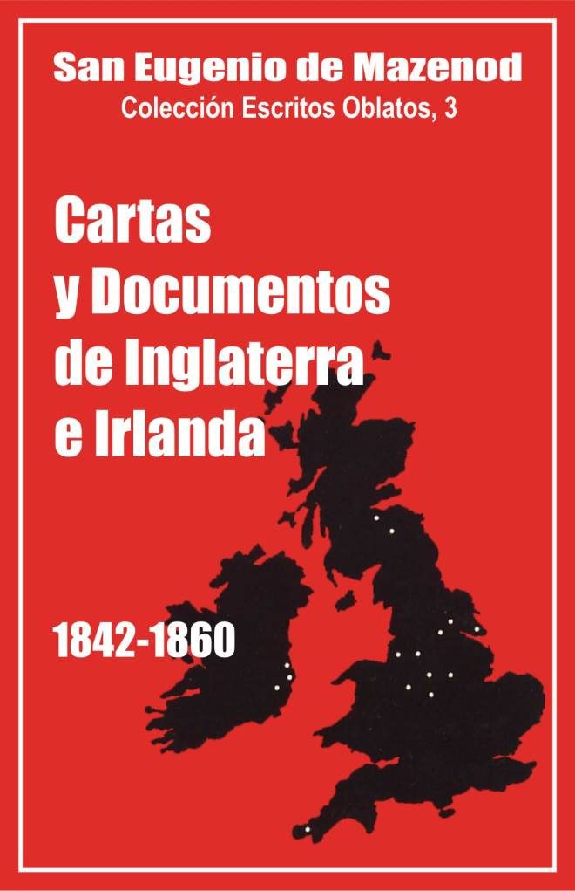

Palo Gordo
2019
Escritos Oblatos: - 01 - 02 - 03 - 04 - 05 - 06 - 07 - 08 - 09 - 10 - 11 - 12 - 13 - 14 - 15 - 16 - 17 - 18 - 19 - 20 - 21 - 22

BEATO EUGENIO DE MAZENOD
Colección: Escritos Oblatos, 3
Traducción
por un equipo de oblatos
de la Provincia de España
MADRID, diciembre 1984
Palo Gordo
2019
1842 - 1843 - 1844 - 1845 - 1846 - 1847 - 1848 - 1849 - 1850 - 1851 - 1852 - 1853 - 1854 - 1855 - 1856 - 1857 - 1858 - 1859 - 1860 - APÉNDICES
El año 1841 será memorable en la historia de la Congregación de los Oblatos de María Inmaculada, como el de su Fundación en 1816 y el de su aprobación pontificia en 1826.
Después de 25 años de existencia, el Instituto fundado por Eugenio de Mazenod, solo contaba con 59 religiosos, distribuidos en 8, casas de Sud-Este de Francia y Córcega. Hacía tiempo que el P. de Mazenod, ahora obispo de Marsella, se daba cuenta que era necesario salir de esos limites geográficos para no morir, decía, de una hermosa muerte. El más santo de sus hijos, el P. Albíni, y el más clarividente, el P. Guibert, compartían sus impresiones. Este último suplicó varias veces al Superior General, después de 1830, que enviara misiones a Argelia, o a Asia, o a América: Hace falta un elemento para el celo de una congregación naciente; el descanso nos resultaría mortal, escribía a Mons. de Mazenod en 1832.
Este buscó mucho tiempo la ocasión favorable. Ofreció sus servicios al Gobierno, para el envío de misioneros a Argelia, luego a la Sda. Congregación de la Propaganda; pero ninguna puerta parecía abierta o para abrirse. "Esperemos la hora de Dios" repetía a los más ardientes de sus hijos.
Esa hora llegó en 1841, con el paso por Marsella, el 20 de junio, de Mons. Ignacio Bourget, obispo de Montreal, y la salida inesperada para Inglaterra, el 1 de mayo anterior, del P. Guillermo Daly. La misión de Inglaterra se puso en marcha menos rápidamente que la de Canadá y se efectuó en un medio, en unas circunstancias y con unos resultados menos espectaculares. Por otra parte, el P. Daly fue sólo enviado en un principio como simple embajador. Este viaje ha sido emprendido, explica Mons. de Mazenod en su diario, para examinar sobre el terreno, cómo se podría llevar a cabo allí una fundación de misioneros de nuestra Congregación que pudieran trabajar en la conversión de los heréticos ingleses y hasta extenderse si hiciera falta, y el número de los agregados bastará, para las colonias o las nuevas conquistas en América o cualquier parte del mundo.
Los informes del P. Daly permitieron pronto todas las esperanzas. Los obispos irlandeses y Mons. Wiseman, coadjutor de Mons. Walsh vicario apostólico del Centro, se mostraron benévolos: el reclutamiento en Irlanda se anunciaba igualmente fructuoso ya que varios jóvenes irlandeses ingresaron en el Noviciado de Ntra. Sra. de l’Osier aquel año. Había llegado el momento de enviar a un hombre de confianza y de experiencia, el P. Casimiro Aubert, que salió en julio d el 1842. Quería sobretodo llevar a cabo una fundación en Irlanda para facilitar el reclutamiento. Pasó allí casi un año y vio que ese proyecto era difícil y hasta irrealizable. Los obispos irlandeses no veían bien a las Congregaciones religiosas que escaparan demasiado a su autoridad. Sin embargo los PP. Aubert y Daly se dieron pronto cuenta de que muchos irlandeses emigraban hacía las ciudades industriales de Inglaterra donde los Obispos tenían necesidad de sacerdotes y donde según una carta de Mons. Griffiths al Fundador, había ya en 1846 un millón de católicos, de los 20 millones de habitantes.
Los dos Padres pues decidieron pasar a Inglaterra donde encontraron sin dificultad una parroquia en Penzane, en el Sur-Oeste de la isla. Una segunda casa y verdaderas comunidades sólo se constituyeron con la fundación de Grace- Dieu en 1845-46. Desde esa fecha hasta 1861, se aceptaron con intervalos regulares otras doce fundaciones: Everingham en 1847, Ádlemham en 1848, Maryvale y Manchester en 1849, ahora abandonada por el P. Daly, convertido en sacerdote secular en 1851, Liverpool en 1850, Leeds en 1851, Sicklinghall en 1852. Gaies-Hills en Escocia en 1852, Inchicore en Irlanda en 1856 y Glen-Mary en Irlanda en 1860, y el mismo año, Lelthen Escocia. Las seis primeras fundaciones fueron sin embargo abandonadas después de algunos años. Penzane en 1852, en razón de las deudas del P. Daly; Grace-Dieu en 1848 y Everingham en 1852, porque esos establecimientos debidos a las generosidades de las familias Philips de Lisie y Maxwell, estaban demasiado alejadas de las ciudades; Aldenham en 1848; el noviciado de Maryvaie, era una amplia construcción cuyo mantenimiento era muy costoso y se dejó en 1853. Por último Gales-Hills en Escocia, casa donada por el Sr. Hope Scott en 1852, le fue devuelta en 1859.
A la muerte del Fundador en 1861, 60 Oblatos agrupados en 7 casas trabajaban en las Islas Británicas. Su apostolado se ejercitó de algún modo entre los protestantes, pero fueron sobre todo las misiones populares las que aseguraron su éxito así como la dirección de las parroquias, todas ellas colocadas entre los pobres, sobretodo obreros Irlandeses. El P. Vincens lo subraya en una carta del 15 de diciembre de 1860 al P. Arnoux, superior de la casa de Inchicore: Estamos hechos para los pobres; es con ellos con quienes tenemos una gracia especial para hacerles un poco de bien.
De la expansión y de las actividades apostólicas oblatas, las 91 cartas del Fundador que se refieren a esas misiones, nos proporcionan muy pocos detalles históricos. Relativamente poco numerosas cada año, solo son citadas con frecuencia por Yanveux, no permiten una vista de conjunto de los acontecimientos. Eso podría haber venido de los principales corresponsales del Fundador, los PP. Aubert, Bellon, Daly, Cooke y G. Richard', pero sus cartas algunas citadas por Rey, Rembert y Ortolan, han desaparecido. Los legajos de los archivos generales, sobre las Misiones de las Islas Británicas, antes de 1961, son todos poco nutridos. Eso puede explicar que la historia de la Congregación de los Oblatos en Inglaterra, no haya sido escrita a pesar de que se conservan unas 70 cartas de Obispos, de Oblatos y de laicos ingleses dirigidas al Fundador, unas 40 al P. Casimiro Aubert, unas 20 al P, Bellon, unas Crónicas de la provincia de Inglaterra escritas por el P. Richard, unas listas de las tomas de hábito de 1847 a 1861, el Libro de Actas de los consejos provinciales desde 1853 y algunos informes de las visitas canónicas de los PP. Aubert y Bellon y de Mons. de Mazenod.
Por eso para completar las cartas y para mejor comprender el pensamiento y la acción del Fundador, en favor de Inglaterra y de Irlanda, añadimos algunos documentos en el apéndice del presente volumen. Ya entre las cartas a los corresponsales de Inglaterra e Irlanda, hemos incluido fas cartas que Mons. de Mazenod escribió desde Inglaterra en 1850 y 1857, las más extensas y las más interesantes de todas. El apéndice incluirá las cartas a los corresponsales y la Pastoral de 1845, en la cual pide a sus diocesanos oraciones por el retorno de los Ingleses a la unidad católica. A pesar de un pensamiento severo para con los heréticos y un estilo solemne como el de los documentos oficiales del clero francés de la época, nos da a conocer su fe en el valor de la oración, sus esperanzas en la conversión de los Ingleses, las felices consecuencias en todas sus colonias de ese retorno al catolicismo, los motivos profundos por último que están en el origen del envío de los Oblatos a Inglaterra.
Siguen en 1847, dos pastorales que prescriben una colecta y oraciones por los pobres de Irlanda, cuya grandeza espiritual y desgracias temporales describe. Por último dos Actas de Visita, en particular la de 1850, que expone, de modo sucinto, pero completo, el estado de los establecimientos de los Oblatos, la naturaleza de su apostolado, las riquezas como las debilidades de su vida religiosa.
El conjunto de esas cartas nos permite descubrir las preocupaciones principales de Mons. de Mazenod, como sus alegrías y esperanzas apostólicas. Digamos primero que las misiones de Inglaterra no le habían proporcionado las preocupaciones de las de América del Norte. No se encuentran allí esos numerosos llamamientos a la regularidad y a la caridad. Es lo que explica una correspondencia menos numerosa. Pero el P. Casimiro Aubert, fundador de la misión y el P. Carlos Bellón, por turno superiores y visitadores, eran hijos de predilección que gozaban de toda su confianza y estima. Venían además con frecuencia a Francia para ponerle al corriente de los asuntos y de la situación, que pudo examinar él mismo, en sus visitas de 1850 y 1857.
Tres preocupaciones dominan. La más importante se refiere al reclutamiento. Esperaba lograr vocaciones para las misiones extranjeras de la Congregación, que en el curso de los años, fueron todas ellas emprendidas en colonias inglesas. Tuvo sin embargo que quejarse con frecuencia de los Irlandeses y algunos Ingleses sobre ese particular. Las vocaciones sin embargo fueron bastante numerosas; 154 Irlandeses y algunos Ingleses ingresaron en la Congregación antes de 1861, sobre un total de 963 ingresados en el Noviciado en toda la Congregación. Pero esos sujetos se presentaron sobre todo al principio y en el curso de los últimos años. Entre 1850 y 56 sólo hubo 18 tomas de hábito. Ahora bien, precisamente en el curso de esos seis años, 17 Oblatos Irlandeses pidieron la dispensa de sus votos, cifra muy elevada que aumentó la emotividad del Fundador en un momento en que le pedían sujetos de todas partes, que supieran inglés. Fue en ese periodo cuando se encuentran bajo su pluma unas expresiones muy duras y que parecen exageradas, si por lo menos, con la perspectiva del tiempo, se comparan las estadísticas del conjunto de la provincia anglo irlandesa con las de toda la Congregación: 350 novicios de 963 salieron para el conjunto del Instituto, o sea 36% , mientras 63 novicios irlandeses de 154 abandonaron antes de pronunciar sus votos, o sea el 40%; 130 profesores salieron de la Congregación antes de 1861, o sea el 21% mientras 21 irlandeses salieron o sea el 23 por ciento. El descontento del Fundador se explica pues en el hecho de que esas salidas tuvieran lugar principalmente, y podrían haber encontrado una escusa a esa movilidad, en la emigración masiva y precipitada que fue la consecuencia del hambre y que podía enturbiar la pureza de intención de los jóvenes en búsqueda de un futuro.
Segunda preocupación, inspirada por las noticias decepcionantes del Canadá: la formación religiosa y apostólica según el espíritu del Fundador y dé la Congregación. Con esa finalidad, Mons. de Mazenod hizo venir a Francia novicios y escolásticos. Más tarde, ya que los Irlandeses no aguantaban fácilmente el clima demasiado caluroso de Provenza, abrió un escolasticado en Inglaterra, pero cuidó siempre de enviar unos escolásticos franceses que habían pasado algún tiempo en Marsella junto al obispo y al P. Tempier. A pesar de esas precauciones, tuvo que reprender a algunos Padres que se dejaban ganar por el fashionable (moda o facilidad) inglesa o peligraban de dejarse llevar demasiado por las numerosas ocupaciones a costa de la vida regular y hasta de la celebración de la misa. Deploró también el poco espíritu misionero de los Irlandeses que no se ofrecía para las misiones extranjeras, aunque en realidad, sobre ese punto también se sabe que la tercera parte de los sujetos fueron allende los ruares y que todos los demás pasaron a Inglaterra.
Tercera preocupación, por último, fue de orden económico: Los Padres de Inglaterra fueron, todavía más que en el Canadá, grandes constructores. Casas oblatas, escuelas y majestuosas iglesias surgieron en todas partes, fruto de su audacia que el Fundador calificó pronto de imprudencia y de locura, porque a pesar de las ayudas abundantes de la Obra de la Propagación de la Fe de París y de Lion, las deudas aparecían enormes en ciertos momentos; de ahí los gastos y gritos de alarma, los llamados a la prudencia, el envío de visitadores extraordinarios, el nombramiento del P. Pinet, ex abogado y hombre de negocios canadiense francés, como administrador de la provincia.
Sin embargo las misiones de Inglaterra le procuraron también muchas alegrías y satisfacciones, no solo porque sus hijos trabajaban con los pobres y porque las misiones parroquiales conmovían los corazones, como las mejores logradas en Francia, sino también porque las conversiones de los protestantes eran numerosas. Ese éxito inesperado le llevó a consagrar a ese apostolado algunas páginas de su Acta de Visita de 1850:
No perdamos de vista mis queridos, que sois llamados a combatir, el fuerte armado en uno de sus más fuertes y más temibles reductos y que os hace falta nada menos que la fuerza del mismo Dios para triunfar de ese poderoso enemigo. Y ¿dé dónde sacareis esa fuerza si no es del santo altar y junto a Jesucristo nuestro Jefe?. Nuestra devoción hacia su Divina Persona debe ser tanto más viva cuanto que debemos ante todo reparar los ultrajes que ha recibido en esa tierra... Que ese espíritu de reparación os anime pues constantemente, que queme vuestras almas y os inspire siempre no descuidar nada, primero para ofreceros a vosotros mismos, como holocaustos y para devolverle tantos engañados como os sea posible. A ese propósito os haré observar que ha llegado el tiempo de atacar al error directamente, no sólo por la oración, sino por la predicación... Preparad con un estudio profundo las armas que tendréis que utilizar... El ejemplo de la regularidad de vuestra vida contribuirá también para acelerar el retorno de nuestros hermanos extraviados.
Por último nada iguala a una visita pastoral a los lugares. Por carta se va a lo más urgente, se dan consejos y ayudas para responder a las dificultades. El Fundador tuvo la alegría de visitar Inglaterra en 1850 y 1857. En ese último viaje fue también a Irlanda y Escocía. Todo le interesó y suscitó su admiración, La organización perfecta de los transportes y su rapidez, la extrema delicadeza de los Obispos y de los Lores católicos; la acogida entusiasta de la gente, las obras dinámicas y numerosas de los Oblatos. Un año después de su regreso escribía al P. Noble: Abrazo a la vez el pasado, el presente y el futuro y creería soñar si no supiera bien que es una realidad, que he visto las cosas con mis propios ojos y que lo que existe es un paso para lo que se hará más tarde. Que la lectura de estas cartas que nos ponen en contacto directo con el espíritu y el corazón de Mons. de Mazenod, ayude a sus hijos de hoy día y de mañana para perfeccionar siempre más esa marcha de la gracia hacia ¡a unidad de los cristianos y hacia una evangelizaron más completa de los pobres.
Yvon Beaoudoin, O.M.I.
1. Al P. Casimiro Aubert.
Pesar de ver alejarse al P. Aubert. Será por poco tiempo, porque es para el Fundador el consuelo de su vida y el sostén de su vejez.
Marsella 27 de Julio de 1842.
Has tenido una buena idea, mi querido, al escribirme desde Lyon, Sigo tus pasos con dolor a medida que te alejas de mi. He consentido en tu viaje, pero tiemblo siempre al sentirte sólo por los grandes caminos y atravesando los mares. Es que mi corazón descansa en tu existencia; siempre he pensado que d Señor te había dado a mi para ser mi consuelo de mi vida y el sostén de mi vejez que avanza hacia mí con pasos apresurados; llegamos al día en que contemplé mis sesenta. ¿Qué le queda al hombre después de esa edad? He criado muchos hijos, ¿con los cuidados de cuantos puedo contar? Todos cuantos me escriben ponen en cabeza de sus cartas unas palabras dulces para leer, pero la experiencia me ha enseñado que no siempre expresan el sentimiento que significan. ¿Se podría convencerme de que Dios exige de mi el sacrificio de aquel que nunca se ha desmentido en el afecto que me debe, y que presenta todas las garantías para seguir mereciendo mi confianza y mi amor?.
¿En qué Orden, en qué Congregación el Superior no puede rodearse de aquellos que pueden facilitarle el ejercicio de su rango y cargo y sobre los cuales su espíritu y su corazón descansan?. No hagas pues proyectos definitivos que tiendan a separarte de mi para siempre. Mira, examina, calcula, pero deja siempre una puerta de salida.
2. Al P. Casimiro Aubert.
Mons. de Mazenod y la Congregación sufren por la ausencia del P. Aubert. Noticias de los Oblatos del Canadá. O’Connell precioso protector de la Congregación en Irlanda.
Marsella, 26 de Septiembre de 1842
Tu ausencia, aparte de lo que me hace sufrir nos ha desorientado totalmente y me ha traído unas molestias inimaginables de parte de aquellos de tus cofrades que sólo han visto en la Congregación las conveniencias de sus casas, ¡Oh, qué espíritu más tonto tienen esas gentes! ¡Es para perder la paciencia! He acabado por escribirles con una severidad contraria a mi carácter, pero necesaria para acabar con ese género de vejaciones.
Por otra parte sufro las mayores penas por parte de los Padres del Canadá. El P. Baudrand, sorprendido más de la cuenta por la poca concordancia que existe entre las ideas del P. Honorat y las del P Telmon, a pesar de las recomendaciones que les había hecho a unos y a otros, ha llenado todas nuestras casas con sus quejas exageradas, ha seducido al ingrato novicio que ha escrito por su parte una carta increíble en la que nos amenaza con una salida, y es a 2.000 leguas de aquí donde ocurren esas cosas.
Es imposible que las gentes de fuera no perciban ese desorden y nuestro hermoso futuro en esas regiones queda terriblemente comprometido. Sin embargo, Dios hace milagros por nosotros. A pesar de las dificultades suscitadas por la traición, la hermosa propiedad de Longueil, a orillas del rio S. Lorenzo, frente a Montreal, nos ha sido regalada. Es una casa soberbia con un magnífico parque tan agradable como útil y una pradera. Los bienhechores que han sido tan generosos están dispuestos a añadir una tierra a esas propiedades tan considerables ya; otras santas almas quieren añadir sus favores a aquéllos que hemos recibido. Esto sobre lo temporal.
En cuanto a lo espiritual las bendiciones más abundantes han acompañado a las 10 misiones que nuestros Padres han predicado ya. Dos excelentes sacerdotes se han unido a nosotros, otros se han anunciado. Los obispos de Toronto y de Quebec nos solicitan. Pero temo que todo fracase por culpa de esos indignos hijos que no saben aguantar nada, ni sacrificar nada a no ser sus propios defectos. Estoy tan indignado como afligido a causa de esa conducta; pero doy tregua a mis quejas para mejor explicarte la posición de nuestros asuntos temporales...
Quisiera aprovechar bien el papel que me queda para felicitarte por tu conducta y conquista. Lo que me dices del excelente Sr. O’Connell me estremece sensiblemente. Es un precioso protector. Pero, ¿no teméis que os coloquen como unos hombres de oposición al publicar en vuestro prospecto la parte que quiere tomar en nuestro establecimiento? Estáis en el lugar, os toca juzgarlo. Más tarde haremos algo mejor que darle el escapulario. Cuando os haya hecho realmente el bien, podré darle participación canónica en las obras y méritos de la Congregación, como acabo de hacerlo con los bienhechores del Canadá.
Me queda encomendarte me escribas con frecuencia, por lo menos una vez al mes.
3. Al P. Casimiro Aubert.
Proyecto de fusión con los Hermanos de S. Patricio para establecer los Oblatos en Irlanda.
Marsella 25 de diciembre de 1842
Me has hecho agua la boca hablando de esos Hermanos de S. Patricio, y de no haber sido desengañado por las esperanzas que habíamos concebido sobre Dublín y luego sobre Cooke, me hubiese ilusionado con esa idea que presenta ventajas tan inesperadas. Espero nuevos informes para abandonarme a alguna esperanza. Hay que confesar sin embargo que la carta del Superior es muy fuerte. Decir que no duda que tu y tus hermanos no realizarían tales arreglos que ponen a nuestra Asociación en posesión de su casa, es algo fuerte; pero no puedo jactarme y espero. No me has dicho si tenías que acudir pronto a la invitación de ese buen padre O’Sullivan para ponerte en contacto con esos Señores. La cosa era suficientemente importante para no dejar atrasar mucho esa entrevista.
4. Al P. Casimiro Aubert. Irlanda.
Mons. Murphy obispo de Cork, impone a los Oblatos unas condiciones de establecimiento que no pueden ser aceptadas.
Marsella 19 de Febrero de 1843
No comprendo qué clase de jurisdicción quiere ejercer el Prelado más allá de lo que le conceden nuestras Reglas. No veo que concesión opináis que hagamos en su favor. ¿No es bastante?, ¿no es todo cuanto se puede conceder, vivir bajo su obediencia para todo ejercicio de nuestro ministerio exterior?. ¿Desearía meterse en el régimen Interior de nuestras comunidades o qué más?, No puedo creer que penséis la cosa posible. Por lo que se refiere a la estabilidad de los sujetos, sus diocesanos, en principio no pueden admitirse, y de hecho nada más probable. ¿Qué haríamos en Francia de los sujetos Irlandeses? Puedo pues tranquilizarle sobre ese punto fácilmente. Tu puedes juzgar mejor que yo, y esa reserva no sería nociva para el progreso de los establecimientos de Inglaterra.
No tenemos a nadie, no tenemos riada, y para establecerse allí haría falta dinero. Vuelvo sobre las pretensiones del obispo de Cork. Has hecho mal en no especificármelas, mal me voy a ver en el trozo de papel que voy a añadir a esta carta para que puedas mostrármelo, así como el P. O’Sullivan. No hay que perder de vista el ejemplo de los Sulpicianos en el Canadá. Nada más peligroso que debilitar los lazos interiores; se preparan con ello unas escisiones funestas, entre naciones y naciones, que acaban con una separación total. Tenemos que prevenirnos tanto más contra el peligro, cuanto que nuestras comunidades de Irlanda e Inglaterra, estarán pronto compuestas por Ingleses y irlandeses. Un obispo mal intencionado podría rechazar el Francés que tuviera de jefe y ya estaría todo dicho. No hagamos pues nada que pueda darnos quebraderos de cabeza más tarde.
5. Al P. Casimiro Aubert Penzance.
Los Oblatos se quedarán en Penzance, aún si los obispos Irlandeses no cuentan con el retorno de los Ingleses a la fe católica. Consejos al P. Daly que se queda sólo Enviar al noviciado de Ntra. Sra. de l’Osier, sólo sujetos probados en el lugar.
Marsella 1 de febrero de 1844.
… Todos esos Prelados tienen muy poca confianza en el futuro y están lejos de compartir la ilusión que nos hemos formado en Francia sobre las disposiciones del pueblo inglés para el retorno a la verdad de la fe católica. Él ultimo Obispo inglés que pasó por Marsella me desengañó sobre todas las falsas ideas que los periódicos nos habían presentado sobre ese particular. Sea lo que sea guardaremos la misión de Penzance por pequeña que sea y nuestro querido P. Daly seguirá encargado de ella.
Lo único que me causa pena es que de los nuestros queda él sólo en ese país. No está muy en orden eso y habrá que intentar arreglarlo. Me parece que los sacerdotes irlandeses son poco generosos. Ese Power piensa aparentemente como los dos que hemos tenido la desgracia de enviar al Canadá. Pretenden que tu les habías asegurado que ganarían dinero allí. Un celo así no es para nosotros... Volvamos a Penzance.
Dejando Penzance, encomendada a nuestro querido P. Daly, ponga todo en regla en esa casa, como debe estarlo en nuestras comunidades. Que tenga en regía los libros. Además del DEBE y del HABER, el de las misas, el de las actas de fundación. Hay que tener uno como histórico de todo cuanto haga para gloria de Dios y la salvación de las almas, y todos los acontecimientos notables, cada cosa con su fecha. Encomiéndale también que me escriba cada mes o a más tardar cada seis semanas.
Que observe la Regla lo mejor posible, pero en lo que se refiere a los sujetos, que no envíe sino los ampliamente probados. Cuando pienso en los malos, .sujetos :que .nos .habéis enviado, no lo concibo. Es una maravilla que hayamos podido conservar a dos y todavía hubiesen merecido uno y otro la suerte de sus desgraciados compañeros. Ha habido que actuar contrariamente a la prudencia y contar con una gracia que Dios no prometía. Por eso, gran reserva sobre ese punto. Nos hemos dedicado a admitir al P. Wals a la profesión, admiro la bondad de la Providencia para con él como para el P. Noble.
No hablo más de Cork ni de Irlanda. El obispo de esa ciudad se ha portado como un mal pastor y el celo del Sr. O'Sullivan es de poca ley... Que Dios los bendiga y sostenga en cuanto al bien que quisiéramos hacerles y que tan miserablemente han rechazado.
Sería bueno que el P. Santóni pudiera aprender el ingles; destinado para suceder completamente al maestro de novicios, cuyo socio es actualmente, pudiera luego llegar a ser útil paira los jóvenes que nos enviarán de Inglaterra después dé haberlos probado en Penzance. Te encargarás de darles las primeras nociones de esa lengua que por lo demás va a hacerse común en la Sociedad, con menos utilidad sin embargo de lo que hubiésemos esperado primero.
6. Al P. Casimiro Aubert, sacerdote misionero. Ntra. Sra. de l’Osier, cerca de Vinay Isére.
Al volver de Inglaterra el P. Aubert debía de haber hecho una visita a los responsables de la propagación de la Fe. Que descanse en el noviciado mientras ayuda a los novicios irlandeses. Saludos y ánimos a los PP. Aubert y Santoni.
L. J. C. et M. I.
Marsella 21 de marzo de 1844.
Bendito sea Dios, mi querido hijo, ya están en el lugar de descanso después de una peregrinación bien larga. Estamos tranquilos ahora, por eso no me pesa ese viaje por penoso y costoso que haya podido ser. Sólo faltaba eso, después de una decepción tan prolongada, para quedar en paz. Has hecho muy bien en actuar como has hecho al llegar a l'Osier. No podía por mucho que te rogaran, colocarte como maestro de novicios en una casa en la que cada uno ocupa su lugar. Podrás sin embargo confesar a los novicios ingleses, mientras no sepan bastante el francés para aprovechar la dirección del maestro de novicios.
Espero con mucha impaciencia todos los detalles que me prometes, pero para eso tienes que perder la costumbre que has adquirido de separar los renglones de tus cartas de un medio pie unos de otros y dejar un enorme margen en blanco. Fácilmente se podría intercalar un renglón entre los tuyos.
He visto con pena que no has ido a hacer una visita al Presidente y al Tesorero de la Propagación de la Fe. El asunto que está ante su tribunal es de demasiada importancia para no apoyarlo con todos los medios a nuestro alcance.
24 de .marzo
Hay que ver; no hay medio de acabar una carta; voy pues a cerrar esta para que no estés con pena por un retraso que se prolonga demasiado. Te abrazo de todo corazón y saludo a los cuatro Irlandeses encomendándoles aprovechen bien el resto del noviciado que van a hacer. Adiós. Agradezco a tu hermano las pocas líneas que ha añadido a tu carta. Me he enterado con mucho gusto de que está muy bien y que trabaja bien. Salúdale afectuosamente de mi parte. Te encargo digas al P. Santoni que tenga un poco más de confianza en la gracia de la misión que ha recibido; que se abstenga de hacerse pequeño ante aquellos que le están confiados y que debe dirigir, Dile que estoy contento, que eso le baste.
7. Al Sr. Aubert, sacerdote misionero en Ntra. Sra. de l'Osier cerca de Vinay Isere.
Numerosas ocupaciones de Mons. de Mazenod. Que mientras llega su obediencia, el P. Aubert ayude a los novicios irlandeses y dé lecciones de inglés al P. Santoni. Harían falta oblatos irlandeses en el Canadá.
L. J. C. et M. I.
Marsella 17 de abril de 1844.
Había retrasado el escribirte, mi querido hijo, para aprovechar el regreso de nuestros Padres que deben ir a l’Osier, pero me han pillado desprevenido. Los asuntos se suceden con una rapidez increíble. He tenido que ocuparme horas enteras con nuestros Padres, de los intereses de la Congregación, y además he aquí que e| obispo de Menorca que acaba de morir, me origina una nueva preocupación con difícil salida.
Tenía sin embargo que agradecerte unos detalles que me das en tu última carta sobre la cual me es imposible volver. Lo haré más tarde con calma, sobre la condición un poco extraña propuesta por el Sr, Vicario General del distrito de Penzance. Imposible reflexionar sobre ello ahora.
En cuanto a tu destino futuro no puedo fijarlo positivamente. Me parece sin embargo que no te pondré en Lumieres, y tampoco te quedarás en l’Osier. Sigue pues prodigando tus cuidados como me lo dices a los novicios Irlandeses y dando las lecciones de inglés al P. Santoni para que ese Padre pueda luego comprender y hacerse comprender cuando le envíen sujetos ingleses e irlandeses. Nos haría falta para el Canadá, me los piden a gritos, porque sabes que los dos que habías enviado se han burlado de nosotros. No comprendo cómo te has dejado engañar hasta ese punto. Quieren por encima de todo ganar dinero y pretenden que se lo has prometido. Ya no están en casa y confieso que no me tranquiliza tener tales sujetos como diocesanos.
Vamos, hay que acabar con mi costumbre de embadurnar todo mi papel, pero ¡cómo resistir a una fuerza superior! Saluda afectuosamente a tu hermano Pedro y a todos nuestros Padres. Te abrazo de todo corazón.
C. J. Eugenio, obispo de Marsella
8. Al P. Casimiro Aubert, Ntra. Sra. de l’Osier.
Mons. de Mazenod ha recibido una carta de los novicios irlandeses y consejos para el noviciado. Noticias de Inglaterra. Admisión a la oblación de tres novicios irlandeses.
L. J. C. et M. I.
Marsella 17 de mayo de 1844
¿No parece mi querido P. Aubert, que cogiendo este papel pudiera preciarme de hablar largo tiempo contigo?. En absoluto. Nunca he tenido menos tiempo para dedicarte y sin embargo no quiero dejar salir a nuestros Padres y Hermanos para Ntra, Sra. de l'Osier, sin escribirte por lo menos unas palabras. He quedado encantado de todo cuanto me has dicho de nuestros queridos novicios irlandeses. Su carta me ha causado el mayor placer y les contesto para testimoniarles mí satisfacción. Quisiera también escribir algunas líneas a tu buen hermano Pedro, espero hacerlo pasado mañana, porque acaban de atraparme ahora mismo y mañana estaré todo el día en la iglesia de la Trinidad.
No quisiera que esperaseis demasiado para admitir a la profesión a aquellos de vuestros novicios que están preparados. No digo que Bouvter deba ser admitido tan pronto. Antes de cerrar mi carta, os daré la decisión del Consejo que reuniré pasado mañana lunes.
No he recibido nada del P. Dais. Os he dicho que el Vicario Apostólico me ha escrito una carta muy amable. Os enviare una copia. No debe pasar por Marsella. No tardes en exponerme las razones que debes alegarme para hacerme cambiar de determinación con relación al futuro destino, espero también tus observaciones sobre la comunidad. No te falta tiempo ¿por qué diferir tanto? Te dejo porque tengo que salir. Adiós. Te abrazo de todo corazón.
C.J. Eugenio, obispo de Marsella
P.D. Los tres novicios irlandeses Roberto Cooke, Pedro Grey y Eduardo Bradshaw han sido admitidos por unanimidad para hacer su profesión. Te ruego se lo digas de mi parte al Superior local y al P. Vincens.
9. Al P. Casimiro Aubert, Ntra. Sra. de l’Osier.
Recordar a los consejos de Propagación de la Fé las necesidades de Penzance. Durante el verano el P Aubert enseñará la moral y la literatura a los novicios.
L. J. C. et M. I.
Marsella 1 de julio de 1844
El P. Vincens, mi querido amigo P Aubert, te dará noticias mías. Sin embargo pienso que estarás contento de recibir directamente aunque no sea más que dos palabras. Estoy por otra parte contento de decirte para contestar a un artículo de tu carta, que me parecía natural recordases tu mismo a los Consejos Centrales de la Propagación de la Fe las necesidades apremiantes de la misión de Penzance para acelerar las ayudas que se esperan de ellos. Tienes calidad para eso ya que saben que has fundado esa misión. Acaban de concederme los fondos para el viaje del tercer misionero que he enviado al Canadá.
Te diré también que he dicho al P. Vincens te encargue de dar la clase de teología moral a los novicios que han de venir aquí para proseguir su teología. Será el tratado de justicia lo que tendrás que enseñarles, empezando enseguida. Este invierno el P. Santoni les enseñará un tratado de dogma.
No es eso todo. Serás encargado también de una clase de literatura para ocupar últimamente aquellos de nuestros jóvenes que han de ir a l'Osier. Ves corno te hago salir un poco de tu soledad, pero sabes que debemos vivir para la Sociedad, que eso es consagrarse al servicio de la Iglesia. Utilizaré las observaciones que me comunicas. Son justas v podré utilizarlas tanto más fácilmente, disimulando la fuente de donde provienen, que el P. Guiges, me ha dado pie para hablar de esa materia, haciéndome observar algunos olvidos en los cuales se cae demasiado fácilmente viajando. Adiós. El P. Vincens va a salir. Te abrazo de todo corazón.
C.J. Eugenio, obispo de Marsella.
11. Al P. Perron. Grace—Dieu.
Ánimos y consejos al P. Perron, superior de la casa de Grace—Dieu. Ser fiel a las Constituciones y conformarse con los usos de las casas de Francia.
Marsella 25 de agosto de 1855.
Ponga su confianza en aquel en nombre del cual sois enviado y estad convencidos que bendecirá vuestra obediencia y derramará las gracias más abundantes sobre las obras de vuestro ¡ministerio... Ante todo atended con extremo cuidado a todo cuanto prescriben nuestras santas Reglas y Constituciones. Tenéis en el libro donde están consignadas un consejero seguro y fiel que podréis consultar en cualquier ocasión y cuyos avisos os llevarán siempre a hacer lo que es más agradable a Dios y más útil a vosotros mismos y a los demás.
Conformaos en todo lo posible con los usos y costumbres de nuestras casas de Francia y no adoptéis de las del país en que vivís, sino lo que es indispensable y concuerda mejor con las necesidades de vuestra posición. Sed exactos y llevad vuestros Libros en regla y vigilad con solicitud sobre lo espiritual y lo temporal de la comunidad.
Que el orden y la regularidad reinen en el interior de la casa y que así, el buen olor de Cristo se extienda a los alrededores de los lugares que habitáis.
12. Al P. Daly. Penzance.
Consejos al P. Daly: espíritu de pobreza, vida interior, observancia de las Reglas, acuerdo con el abate Power.
Marsella 6 de diciembre de 1845.
En vuestra posición, mi querido Daly, tenéis una gran responsabilidad y hace falta nada menos que la confianza que me inspiráis para tranquilizarme. Es esencial mi querido hijo que estéis bien unido a Dios, porque tenéis con frecuencia que determinaros por las luces que querrá concederos, no teniendo ni el tiempo ni !a posibilidad de consultar. Para eso mi querido amigo tenéis que seguir nuestra Regla a la letra y en su espíritu, no permitiéndoos nada de lo que no haríais si estuvieseis bajo mi mirada y bajo mí dirección inmediata.
Se me ha dicho que tratabais con demasiado rigor a vuestro compañero, el Sr. Powers. Sabéis la necesidad que tenemos de él; por otra parte se logra más con la dulzura que con una excesiva severidad... También que no hacéis bastante caso de la pobreza, que os habéis descuidado hasta gastar una guinea para comprar un pájaro, lo cual sería verdaderamente muy reprensible.
Evitad con cuidado mi querido hijo, todo cuanto puede perjudicar el espíritu interior que debe animaros; os expondríais a perder el mérito y el fruto del hermoso ministerio que ejercéis en nombre de la familia de la que sois uno de los hijos queridos. Por lo demás, no os digo eso como reproche* sino como una observación para que estéis más en guardia en la posición delicada en que os encontráis... ¡Cuantas gracias debemos dar a Dios por las bendiciones que se digna conceder a nuestras obras!, pero hagámonos dignos de ese favor por una gran fidelidad a nuestros deberes. Sabéis que se predica más con el ejemplo que con las palabras...
13. Al P. Casimiro Aubert — Poderes de Visitador canónico en Inglaterra.
Marsella, 15 de julio de 1846.
CARLOS JOSÉ EUGENIO DE MAZENOD, SUPERIOR GENERAL DE LA CONGREGACIÓN DE LOS MISIONEROS OBLATOS DE LA SSMA. E INMACULADA VIRGEN MARÍA, - A NUESTRO MUY AMADO EN CRISTO REV. PADRE CASIMIRO JOSÉ AUBERT, SACERDOTE DE LA MISMA CONGREGACIÓN Y SUPERIOR DE NTRA. SRA. DE MARSELLA, SALUD EN EL SEÑOR.
Gracias a la intervención de la misericordia de Dios unas casas de la Congregación han sido establecidas en Gran Bretaña para trabajar allí continuamente para promover la gloria divina y procurar la salvación de las almas, sobre todo por la conversión de aquellos que tienen el error, hemos juzgado hoy que eráis Vos mismo el más idóneo para tomar en manos la causa de esas casas y dedicaros lo más fructuosamente a su visita.
Por eso os otorgamos plena facultad para visitar esas casas, con disfrute allí de todas las prerrogativas que según el parágrafo N... de nuestras Reglas y Constituciones se atribuyen a los Visitadores. Quedáis además provisto del poder de constituir esas casas y asignar para las funciones que comportan, comprendidas las que nos son especialmente reservadas, a aquellos que os parecerán más aptos para cumplirlos, y de cubrir los demás cargos, que según el espíritu del Instituto y el contenido de las presentes cartas os .parecieran oportunos y útiles.
Por otra parte, como el motivo de nuestra misión en Gran Bretaña es el de promover el bien de la Iglesia, con la difusión de nuestra Congregación de la bienaventurada Virgen Inmaculada, en eso también, según nuestra entera confianza y competencia, os concedemos plenos poderes para actuar, aprobando todo cuanto hayáis emprendido y declarando ratificado todo cuanto hayáis concluido. Por eso os …recomendamos a la benevolencia-de. los Ilustrísimos y Reverendísimos Prelados, sea de Inglaterra sea de Irlanda, para que quieran consideraros como nuestro digno delegado, y tratar con Vos con bondad y favorablemente de todos los asuntos que dependen de vuestra misión.
Les rogamos también en el Señor os autoricen a celebrar la misa y a cumplir, si las circunstancias lo requieren, las demás fundones sacerdotales, estando claro que no solo estáis fuera de toda sospecha y enteramente libre de censuras eclesiásticas, sino también que brilláis con el resplandor de todas las virtudes, gozando ante todos de una reputación irreprochable. De todo lo cual, en verdad, podemos testimoniar y de hecho testimoniamos ante aquellos a quiénes el asunto puede en derecho interesar o interese.
Emprended pues querido hijo, con nuestra bendición, la misión que hemos querido confiaros. Que todos los santos patronos de Inglaterra, e Irlanda os ayuden. Que la Santísima e Inmaculada Virgen María, nuestra Madre muy amante, os guarde con una protección especial y continua. Por nuestra parte no dejaremos de implorar al cielo una abundante lluvia de gracias para Vos y para tocios los miembros de nuestra Sociedad, colocados bajo vuestra dirección.
Dado en Marsella, el año del Señor 1846, el 15 de julio.
C.J. Eugenio, obispo de Marsella
14. Al P. Casimiro Aubert, en Inglaterra.
Que los Padres de Grace Dieu extiendan su zelo en la región.
Marsella 7 dé agosto de 1846.
Comparto las impresiones que te ha hecho Sentir el sitio encantador dé la Grace Dieu. Nuestros Padres estarán allí a las mil maravillas, pero desearía que tuvieran otro cometido que el de simples párrocos. Tengo enteres en que extiendan su celo, primero por las cercanías y luego más lejos como se hace en Percance. Es lo que me hace desear tanto que la misión de Ashby salga adelante.
15. A Mons. Jhon Mc Hale, arzobispo de Tuam, Irlanda.
Envío de una suma de dinero, recogido éntre los fieles de Marsella para aliviar los males que afligen a Irlanda
Marsella 14 de abril de 1847.
Monseñor: Conmovido como debía estarlo por los males que afligen a Irlanda, he pensado que los fieles de mi diócesis no podían quedar extraños y que debían dar por lo menos un testimonio de caridad hacia sus hermanos desgraciados. He hecho un llamamiento a su buena voluntad en una pastoral publicada para ello. Aunque estemos en una ciudad en la que una multitud de obras importantes y de establecimientos caritativos sólo tienen como recurso, los bienes voluntarios de una ciudad solicitada en cada momento, sin embargo una simpatía inspirada por el espíritu católico se ha manifestado bastante generalizada para el objeto de mi petición. La colecta hecha en las iglesias, en las que el denario del pobre se ha mezclado con la ofrenda del rico, ha producido una suma dé cerca de 20.000 francos de nuestra moneda. Lo que se hizo anteriormente por los departamentos franceses devastados por las inundaciones, no dio más de 8 mil francos.
Por módicas que sean esas sumas para tan grandes necesidades, tienen también algún valor como prueba de buena voluntad, en razón de las circunstancias, de las cargas continuas y del pequeño número de parroquias de mi diócesis. Hubiese deseado hacer gozar a todas las diócesis de Irlanda del producto de nuestra colecta, pero sería dividir lo que en sí no es considerable; me limito pues a hacer unos envíos allí donde he creído que las necesidades eran más extensas y más apremiantes. He incluido a vuestra diócesis, Monseñor, con la suma de 150 libras esterlinas, que trataré de transmitiros dentro de unos días por medio de un cheque a Londres.
Me es agradable poder asociarme un poco a vuestra caridad que suaviza tantos males y enjuga tantas lágrimas. Las grandes pruebas a que está sometida vuestra desventurada patria me hacen sentir sin embargo no poder contribuir más a su alivio.
Reciba con la expresión de mi viva simpatía para los Irlandeses la del respetuoso afecto con el cual soy de Ud. etc.
C. J. Eugenio, obispo de Marsella.
16. A la Srta. Q’Connell, en Killarney.
Envíos de 25 libras esterlinas.
Marsella 15 de abril de 1847.
Señorita: Acabo de escribir a Mons. el obispo de Killarney para anunciarle el envío de 150 libras esterlinas para los pobres de su diócesis. Le digo al mismo tiempo que añadiré a esas 150 libras unas 25 que le rogaré se las entregue para los necesitados, socorridos por la Sociedad de las Damas en nombre de la cual me habéis hecho el honor de escribirme. Eso hará que la diócesis de Killarney habrá recibido 25 libras más que las demás, pero no he querido que vuestra confianza dirigiéndoos a mi quede sin resultado. La suma es pequeña para tan grandes necesidades, pero en nuestra patria tenemos ya tantos sufrimientos que la caridad está verdaderamente sobrecargada y es lo que os explica por qué he sido hasta ahora el único obispo francés que haya osado hacer un llamamiento en favor de Irlanda, cuya situación excita sin embargo vivas simparías en Francia.
Me felicito al haber podido, por poco que sea, unirme a los méritos de vuestras buenas obras y de tener esta ocasión de encomendarme a vuestras oraciones y a las de las Damas de vuestra Sociedad. Les deseo por mi parte en las desgracias que afligen a vuestro país, todos los consuelos que su caridad merece Estoy con respeto...,
C. J. Eugenio, obispo de Marsella.
17. A Mons. Wiseman. Roma.
Que Mons. Wiseman en visita a Roma, consuele al Papa. Deseo de ocupar a los Oblatos de Inglaterra, no en las parroquias sino conforme a su vocación, en las misiones al servicio de los Obispos.
Marsella 17 de agosto de 1847.
No quiero disimularos que mi intención no era restringir a nuestros misioneros a la condición de párrocos. Hubiese deseado fundar en Inglaterra, una verdadera comunidad de nuestros Oblatos, viviendo según sus Reglas en el interior de casa y acudiendo luego a disposición de los Obispos a prestar ayuda, allí donde estos lo creyeran útil. Habéis llegado en un tiempo en que se ponen dificultades al Soberano Pontífice, a ese bueno y santo Padre. Vuestra presencia habrá sido un alivio para sus penas; me be consolado más de una vez con ese pensamiento. MI afecto por su persona sagrada es tal que me hubiese considerado feliz de encontrarme con Ud. a sus pies. No dejo de rezar para que no decaiga bajo el enorme peso que gravita sobre él.
18. Al P. John Naughtan. Inglaterra.
El P. Naughtan puede ejercer su ministerio fuera de la Congregación, pero con ciertas condiciones impuestas por el Fundador.
Marsella 1 de mayo de 1848.
En razón de las desgracias de vuestra familia reconozco que es el caso de concederos todas las dispensas compatibles con vuestra vocación. Consiento pues en que aceptéis una misión de la cual sacareis los emolumentos para aliviar las penurias de vuestra madre y hermana. Pero he aquí en qué condiciones pretendo dejarle bajo su propia responsabilidad, separado de todas nuestras comunidades.
1. - Tengo mucho interés en que de vez en cuando, paséis en alguna de nuestras comunidades uno o dos días con vuestros hermanos y presentaros al Superior para la dirección.
2. - Que deis cuenta exacta del empleo que hacéis del dinero que estáis autorizado a percibir. Comprendéis que en virtud de vuestro voto de pobreza no debéis apartaros de una justa moderación. Conténtese con relación a lo que se refiere a vuestra persona con lo honesto y necesario, y provea sin lujo y sin exceso algunos a las necesidades de vuestra madre y hermana.
Si existe algún excedente en los ingresos que percibáis, debéis dar cuenta al superior. La decisión del empleo que debéis hacer de ello os será dada por él o por el Visitador General.
19. Al P. Casimiro Aubert, Visitador en Inglaterra.
Inquietud del Fundador a propósito de la salud del P. Aubert que no escribe.
L. J. C. et M. I.
Marsella 17 de julio de 1848.
Estoy, mi querido P. Aubert, con una pena imposible de describir. No puedo resignarme a no recibir de tí ninguna carta, desde la primera que me has escrito al llegar a Inglaterra. El Tablet que ha dado cuenta de la ceremonia del día 4 y que hace mención de todas la órdenes y Congregaciones que han asistido, no dice ni una palabra de los Oblatos de María, lo que me hace suponer que no estabas presente en esa fiesta, ni ninguno de los nuestros ¿Qué conclusión debo sacar de eso?. ¿Es que has caído enfermo al llegar a Ashbourne, a casa del P. Daly y que tu estado es bastante alarmante para que ni el P. Paly ni el P. Trideau hayan podido dejarte ir a Londres?. Pero ¿Cómo explicar que ninguno de esos Padres haya tenido la idea de escribirme, sea para tranquilizarme, sea para prepararme para la noticia de tu enfermedad?. No comprendo en absoluto ese modo de proceder. Todo cuanto sé es que siento una inquietud, una pena que no se puede expresar.
Esperaba con mucha impaciencia, los detalles que debías darme; muchas cosas tendría que decirte por mi parte, pero verdaderamente no tengo ánimo para ello. Me imagino que has contraído el tifus como el P. Perron, en algún coche impregnado de ese veneno. No estabas por otra parte muy bien cuando has marchado. Esa irritación de la laringe podría haber degenerado en pleuresía. Dios sabe si te habrás cuidado como lo hice cuando estuviste con esa enfermedad en el Calvario. En resumen ni la visita pastoral ha podido distraerme a mis negros presentimientos; las alarmas que nos dan continuamente no e apartan…
Adiós mi querido hijo, he aquí un día más sin noticias de ti. Me muero Adiós.
20. Al P. Bellon en Inglaterra.
Habría que abandonar probablemente la casa de Ashbourne.
Marsella 15 de septiembre de 1848
Dios no ha bendecido una adquisición hecha fuera de las prescripciones de nuestras santas Reglas; emprendida de un modo demasiado humano, ha padecido la suerte de las cosas humanas.
21. Al P. Carlos Bellon.
Acta de nombramiento como superior de la casa de Ashbourne y de los Oblatos de Inglaterra.
CARLOS JOSÉ EUGENIO DE MAZENOD, OBISPO DE MARSELLA Y-SUPERIOR GENERAL DE LA CONGREGACIÓN DE LOS OBLATOS DE LA SS. E INMACULADA VIRGEN MARÍA, a nuestro hijo en Cristo, Carlos Bellon, sacerdote de la misma Congregación, Salud y Bendición Apostólica.
Vuestra piedad, vuestra doctrina y vuestra prudencia, siéndonos bien conocidas a Nos a quien incumbe gobernar la Congregación entera de los Oblatos de la SS. e Inmaculada Virgen Marianos elegimos y, por las presentes, os nombramos e instituimos superior de la casa situada en Ashbourne colocada a la cabeza de nuestra provincia de Inglaterra; mandando a todos y cada uno de los Rvdos. Padres y Hermanos amados que componen la familia de esta casa, os reciban como Vicario depositario de nuestra autoridad y os presten obediencia, el afecto y reverencia con las cuales, en una casa religiosa, los sujetos deben honrar al superior Ilegítimo. Además, siendo necesario, en razón de la distancia y de las múltiples dificultades no leves que pueden surgir, que uno de los nuestros reemplace al Superior General en sus relaciones con esas casas ya existentes en Inglaterra o que se establecieren en el futuro, al cual entonces podrán acudir, sea los superiores locales, sea sus sujetos, Vos , R, P. hombre bien conocido por vuestros dones recomendables y animado de un afecto reconocido hacia nosotros y nuestra Congregación, os elegimos para ocupar ese cargo y os constituimos Provincial de dichas casas.
En consecuencia gozareis: 1. De todas las facultades que nuestras Reglas y Constituciones conceden a los superiores locales, según el parágrafo VI del Cap. I de la 3a parte, y a los Visitadores durante las visitas, según el parágrafo VI del mismo Capítulo. 2. Concedemos la facultad especial de dar en nuestro nombre, las dimisorias, en virtud de las cuales los miembros de nuestra Congregación pueden y están habilitados para recibir cualquier orden eclesiástico. 1. En una palabra, dentro de los límites de nuestra provincia en Inglaterra, os confiamos reemplazar al Superior General, comunicándoos su entera jurisdicción; dejando siempre a salvo el derecho supremo de su autoridad, y exceptuando los siguientes casos: a) la convocación del Capítulo General; b) la expulsión de cualquier Oblato; c) la admisión de ¡os novicios a la oblación perpetua; d) la fundación de nuevas misiones y casas.
En la conducción de los asuntos provinciales, os ayudarán con el título de asesores, los superiores locales de las diversas casas, que deberéis consultar por lo menos por carta.
De todas las cosas tratadas y de todo cuanto se refiere al estado de vuestra provincia, tendréis cuidado de darnos cuenta cada mes y más frecuentemente cuando eso pueda hacerse cómodamente.
Id pues, amado hijo, bajo los auspicios de la obediencia al puesto que os es asignado, esforzándoos día y noche en mostraros excelente superior y cumplir para con los nuestros que en ese lugar sirven a Dios, con palabra, el corazón y las obras, los deberes de buen Pastor y de un padre providente, preocupado ante todo de mantener entre ellos la unidad del Espíritu Santo en el vínculo de la paz y de promover incesantemente, el deseo y la práctica de la observancia regular: con esa finalidad imploramos del cielo una poderosa ayuda y la amplia protección de la Inmaculada Virgen, nuestra madre muy amante.
Dado en Marsella, con nuestra firma y sello, el 18 de octubre del año 1848.
22. Al P. Bellon, superior de los Oblatos en Inglaterra.
Agradecimiento por las buenas noticias. Atraer sujetos- ingleses para la Congregación.
Marsella 15 de diciembre de 1848
Mi querido y buen hijo: su carta ha sido para mi un bálsamo por todo cuanto me dice de edificante. Si nuestros asuntos temporales no son brillantes en Inglaterra, por lo menos el buen espíritu reina entre nuestros Padres y la edificación que da su regularidad produce tal vez tantas conversiones como sus palabras. Bendigo al Señor con toda mi alma y preveo con un indecible consuelo que el bien se propagará todavía más...
... Sólo tenemos sujetos irlandeses... Procure pues atraer un tan gran número de sujetos ingleses que podarnos distribuirlos por las cuatro esquinas del mundo.
23. Al P. Casimiro Aubert, Visitador en Inglaterra.
Proyecto de fundar una casa de estudios en Inglaterra.
Marsella 24 de febrero de 1849.
Tengo que hacerle algunas observaciones sobre vuestro proyecto de casa de estudios oblacionados. Vemos un inconveniente para formarlo conforme a la idea que proponéis; resultaría una alteración del espíritu que debe animar a todos los miembros de nuestra familia. Basta el Canadá. Todos los Irlandeses han bebido en Francia/el excelente espíritu que los anima, el apego que profesan para la Congregación. Habría que encontrar un medio de paliar ese inconveniente. Helo aquí. Aceptando el proyecto de formar esa casa de estudios teológicos, se la podría ocupar ya por los Irlandeses, que han pasado algún tiempo en Francia, ya por los Franceses destinados a las misiones extranjeras. Los Ingleses e Irlandeses vendrían en cambio a estudiar por lo menos dos años en Francia para formarse en nuestro espíritu y en nuestra lengua y darse a conocer al Superior...
24. Al Sr. Arnoux, sacerdote. Ntra. Sra. de Lumiéres por Avignon-Van-gogh.
Obediencia para Inglaterra.
Marsella 25 de abrí! de 1849.
Acabo de recibir querido hijo al P. Mille para que transmita al P. Coste la orden de traslado inmediato a Lumiéres para reemplazaros. En cuanto haya llegado haréis vuestro equipaje y vendréis aquí para luego emprender la marcha hacia Inglaterra, donde el P. Belloír os espera con los brazos abiertos.
Os llamo primero junto a mí para proporcionarme el consuelo de abrazaros y de daros mis instrucciones.
Os agradezco vuestra carta; me ha agradado mucho y quería decíroslo antes pero no he podido hasta ahora, que la necesidad me obliga a dejar atrás las 27 cartas que tengo que escribir para daros a conocer vuestro destino.
Adiós mí muy querido hijo. Conocéis el tierno afecto que tengo para vos; me sentiré feliz al expresároslo pronto apretándoos contra mí corazón. Os bendigo mientras tanto y os abrazo paternalmente.
C. J. Eugenio, obispo de Marsella.
25. Al P. Casimiro Aubert, Visitador en Inglaterra.
El P. Pedro Palle no quiere ir a Inglaterra; el P. José Arnoux por el contrario acepta su obediencia sin la menor vacilación.
Marsella 12 de mayo de 1849.
He aquí la obra maestra de Palle. ¡Es un modelo de santa indiferencia! ¡Oh, Padre!, permítame que os diga que siento una extrema repugnancia para los países extranjeros y sobretodo para Inglaterra. No sé ni una palabra de inglés y creo que no lo aprenderé jamás, no tengo ninguna aptitud para las lenguas, etc. Os suplico Reverendo Padre, libradme de esa carga, acuérdese de lo que me habéis dicho que no estaba hecho para los seminarios. Por favor, Padre mío, hay otros que llenaríais de alegría lejos de Francia, sin comprender una sola palabra de su lengua, inútil durante mucho tiempo y tan lejos de Ud... Y luego, Padre mío, ¿tendría un P. Magnan, un P. Vincens?, ¡Oh, que triste suerte la mía!..
Todo lo demás en ese tono. Termina: "Oh, cuanto bien me hará vuestra respuesta. La espero como un dulce rocío que hará reverdecer a mí alma que se consume de espanto", ¿Se habrá oído algo jamás más miserable?. ¿Qué hacer con semejantes almas?. No creería hacerte un regalo violentando esa pusilanimidad. El P. Vincens comentando todo eso, me escribe que !a prueba sería demasiado fuerte para la débil virtud de ese sujeto. Sería romper su existencia.
Bien pensado todo esto !o dejo donde está ya que el P. Vincens espera sacar partido de él, lo que no le sería fácil a cualquier otro, Que mi espíritu descanse pronto sobre ese excelente Arnoux. Ni una palabra de réplica, ni la menor observación. Madre, país, nada de eso ha sido objetado. Va porque le llaman. ¡Que Dios bendiga tales sujetos y nos ¡os conceda numerosos!
26. Al R. Padre Bellón, Provincial de los Misioneros Oblatos de María en Inglaterra.
Amistad. Escribe cada mes para dar detalles sobre los novicios y sobre los Padres de la provincia. Personal del noviciado de Maryvale.
L. J. C. et M. I.
Marsella 12 de mayo de 1849.
Me daré prisa, querido P. Bellon, para dejar partir a nuestro buen P. Arnoux sin entregarle algunas palabras de amistad para Ud. Sois muy avaro, querido amigo, ya: que no recuerdo en qué fecha me habéis escrito. Sin embargo, si no me equivoco, tengo derecho a una de vuestras cartas por lo menos una vez al mes. Sé que descansáis-sobre 'el P. Aubert y que ese querido Padre me da en efecto noticias vuestras, pero no basta para mi corazón, Me conoceríais bastante! .mal si creyeseis que me cuesta poco hacer el sacrificio de los hijos que más amo. Sin duda me resigno a la voluntad de Dios que exige ese sacrificio, para su gloria y la salvación de las almas que estamos llamados a convertir y santificar, pero no tengo bastante virtud, si se debe dar ese nombre al abandono completo, al olvido de aquellos que arranco de junto a mi para enviarlos a donde Dios los llama.
Independientemente pues de lo que la Regla exige de un provincial y de un maestro de novicios, haga que deba también a vuestra amistad para con vuestro viejo padre más frecuentes recuerdos. Debéis recordarme al personal de vuestro noviciado y darme unas notas sobre cada uno de vuestros novicios. Hay que hablarme también de los Padres que están a vuestro alcance. Más tarde tendréis que hablarme de todos aquellos que componen vuestra provincia. Mientras el P. Aubert está sobre el terreno, en buena hora, que se encargue de ese cuidado, pero no descanséis tanto sobre él, que os acostumbréis a ser perezoso.
Os encargo especialmente decir cosas amables de mi parte a todos nuestros novicios y en particular al sacerdote que la divina Providencia os ha dado para vuestro consuelo y para la edificación de todos los sujetos. No habéis elegido mal llevándoos al H. Tortel, con el cual se contaba aquí para bastantes cosas. Pase por el H. Cooke, ese os era destinado, pero el P. Arnoux, el H. Tortel y el H. Jolivet, eso se llama hacer un saqueo. Gocen con ello mis queridos hijos para el mayor bien y gloria de Dios. Os abrazo con todo mi corazón y os bendigo así como a toda nuestra familia.
C. J. .Eugenio obispo de Marsella.
P. D. Cuando me escribáis arréglese de antemano para no dejar ningún espació en blanco en vuestras cartas.
27. Al P. Casimiro Aubert, Visitador en Inglaterra.
El H. Jolivet ordenado sacerdote, saldrá para Inglaterra. El P. Luis Keating, descontento por haber sido enviado a Ceylán, se niega a aprender la lengua del País. Amistades. Numerosas preocupaciones del Fundador.
Marsella 22 de mayo de 1849.
El P. Jolivet ha sido ordenado sacerdote el domingo antes de la Ascensión y ha celebrado su primera misa el día de la Asunción, por no saber sin duda celebrarla bien. Próximamente se pondrá camino de Inglaterra con el P. Arnoux.
El P. Jolivet ha ingresado en la Congregación para ir a las misiones extranjeras* sigue siendo siempre su deseo; pero me ha escrito al notificarme su elevación al sacerdocio que hoy día sólo tiene la voluntad de obedecerme.
No hay que perder sin embargo de vista las primeras inspiraciones que le han traído a nosotros. Hacen falta para la misión de Nesqually por lo menos dos sacerdotes que hablen inglés; pero si nuestros Irlandeses limitan su celo a Inglaterra y sí son del temple de su compatriota, el P. Keating, que se sorprende de que se haya tenido la idea de enviarle a él Irlandés a Ceylán, difícilmente podremos proveer a las necesidades de nuestras misiones.
Hay que recomendar al P. Bellon que inspire a los Irlandeses el espíritu de abnegación y de sacrificio. Están generalmente muy inclinados a buscar su comodidad y a no ver de interesante en el universo sino su país. Tendríamos sin embargo que sacar de allí para las misiones lejanas, pero para eso hace falta celo... Estoy muy contrariado por la conducta del P. Keating en Ceylán que se obstina en no querer aprender la lengua del país... Siento, lo confieso, un sentimiento de indignación contra ese religioso flojo e infiel a su vocación, ya que no ha temido amenazar con pedir la dispensa de sus votos.
... Con el dolor que me oprimía, querido hijo, ¿he hecho mal en desvelarte la causa?. Dios mío, lo temo, viendo en qué estado te ha puesto esa mala noticia. ¿Pero, podría dejártelo ignorar?... De haber estado conmigo hubiésemos podido hablar de ello... El hecho es que tu dolor aumenta el mío con todo el peso del afecto que te tengo, ¡sentirte triste y no poder consolarte tomando de tu mal, todo cuanto pueda aguantar! He querido escribirte enseguida, era para mí una necesidad darte ese testimonio de mi tierna amistad...
Cuantas preocupaciones, mi querido hijo, por aquellos que se dedican a hacer algún bien en la tierra. Sin embargo "non recuso laborem" y no me detengo ante el pensamiento de que hubiese podido estar más tranquilo, sino más feliz, si sólo me hubiese ocupado de mí en la posición independiente en la que estaba naturalmente colocado, ¡Oh, no! ¿No estoy compensado dé mis penas por la dicha de tener un hijo como tú y por todo el bien que hacen los nuestros en las cuatro partes del mundo?.
28. Al P. Bellon. Maryvale.
Formar a los novicios irlandeses en la santa indiferencia; hacen falta en Oregón. El P. Keating está descontento en Ceílán. Próxima salida de los PP. Tortel y Kook así como dé los hermanos Me Donángh, Dunne y Murray. No dejar introducirse el abuso del tabaco. Virtudes del P. Árnoux.
Marsella, 13 de junio de 1849.
Lo que me decís de vuestro noviciado me encanta. No es numeroso, es cierto, pero es edificante y es lo principal. Os recomiendo que difundáis insistentemente entre ellos el principio de la santa indiferencia. Es la base de la vida religiosa. ¿Qué sería de nosotros si hubiese que consultar el gusto y las conveniencias de cada uno?. Hay que (legar a renunciar de tal modo a la propia voluntad y ponerla de tal suerte en manos de los superiores que se considere bueno, sin que baste el estar satisfecho, con cuanto decidan, sea sobre los ministerios, sea sobre los lugares etc. Eso es tanto más importante en vuestro noviciado compuesto dé Irlandeses, que se consideran en general como amantes de sus comodidades y buscan lo que es su conveniencia, que habrá que sacar de entre ellos los sujetos que nos son indispensables para las misiones lejanas.
Así nuestros Padres del Oregón piden por lo menos dos sujetos ingleses o irlandeses para nuestro establecimiento en Nesqually, donde se encuentran gran número de Irlandeses y de Americanos que sólo hablan inglés y entre los cuales se puede hacer tanto bien como entre los salvajes. Creo haberos dicho cuanta inquietud me ha dado el P. Keating, por no estar suficientemente penetrado de ese espíritu que os pido inculquéis a todo vuestro mundo. No hace nada en Ceylán, ni siquiera se ha dado el trabajo de aprender la lengua del país. Se limita a quejarse del calor y a preguntar seriamente por qué lo han enviado a esa misión en lugar de Inglaterra donde se encontraba a gusto.
De ahí las inquietudes, los momentos penosos que el admirable P. Semeria tiene que aguantar, de ahí hasta los pensamientos de infidelidad a su vocación demasiado tiempo alimentados y tal vez expresados demasiado. Y es a la vista de un bien inmenso a realizar y bajo los ojos de un santo misionero como Semeria, a quien podría! aliviar y que debería consolar, en lugar de serle una carga y de causarle preocupaciones. La cosa ha debido saberse afuera, ya que el Vicario Apostólico me escribía a ese propósito que cuando no se quiere aprender las lenguas, no hay que ir a las misiones, insisto sobre ese particular porque me doy cuenta de que todos nuestros Irlandeses aquí, ni uno solo me ha pedido ir a las misiones extranjeras; es verdad que no les he sondeado sobre ese particular.
Sigo decidido a enviaros, al mismo tiempo que los excelentes Tortel y Kook, los Hnos. Mc Donagh, Sunne y Murray. Decidiréis la suerte de esos dos últimos. Dunne es siempre de una pereza inagotable, sin formar y más ocupado de lo que haría falta para su pequeña persona. Tenga cuidado de que el abuso del tabaco no se introduzca en vuestro noviciado. Convenzan de que es una manía. La especie humana se pasaba sin ese sucio narcótico, antes dé que se le descubriera. ¿Cómo querer convencerse de que no se puede vivir sin él? Hablo seriamente; se alimentaría a un misionero con lo que cuesta esa fantasía...
Pensaba enviaros al P. Palie. La imperfección de ese sujeto, que me ha alegado las razones más fútiles para no cumplir su misión me ha dispensado de hacerle ese regalo. Le he dicho sin embargo lo que debía al P. Vincens, que según su costumbre abundaba en pro de la debilidad humana. ¡Qué diferencia con ese encantador P. Arnoux que no ha opuesto ni una palabra y que se ha marchado satisfecho por el sólo hecho de que la obediencia le transmitía la voluntad de Dios! Ahí tenéis a un excelente religioso que merece todo el aféelo que tengo por él. La separación de esa clase de sujetos son otros tantos sacrificios que me impongo para la gloria de Dios y el servicio de la Iglesia. Os alejo así de mí a todos unos tras de otros y me quedo en mi asilamiento, sobrecargado excesivamente y privado de las dulzuras inherentes a la paternidad que goza de verse rodeada de sus hijos: "sicut novellae olivarum in circuitu mensae". No por eso dejo de sentir la dicha de veros realizar dignamente vuestra vocación. Es la compensación que el Señor quiere concederme; se lo agradezco todos los días.
29. Al P. Arnoux. Maryvale.
Salida de un grupo de Oblatos para Maryvale, donde la Congregación toma posesión de un monasterio que fue habitado por Newman y otros ministros protestantes convertidos. Detalles sobre la comunidad.
[Marsella,] 20 julio 1249
Mi querido y buen hijo. ¿Cómo dejar partir una tan numerosa colonia que va a vuestra casa, sin entregarles una palabra de amistad para ese querido hijo del que me he separado con tanto pesar?
Ya estáis pues instalados en vuestra santa casa, que estoy seguro no decaerá en vuestras manos de merecida fama. ¡Es una herencia delicada! Suceder a tantos hombres célebres por su saber y su santidad, no es cosa pequeña. Me parece que los ojos de toda Inglaterra están fijos en vosotros, y que se esperan grandes ejemplos de virtud en ese lugar santificado por Milner, los Newman, etc. No salgo de mi asombro viéndoos establecidos en ese lugar y por eso no dejo de dar gracias a Dios desde el ; fondo de mi alma. No perdáis ocasión unos y otros de darme los mayores detalles sobre cuanto ¡pase en vuestra casa. Suspiro esperando los detalles más minuciosos sobre vuestro traslado, vuestra instalación y vuestra estancia. Quiero también conocer el número de habitantes de la casa, su cualidad de Oblatos, novicios, hermanos conversos etc. Todo en una palabra, hasta el plano del edificio, el contenido del terreno, el género de ministerio a ejercer en los alrededores, la opinión y el sentimiento de los vecinos amigos y enemigos... Arréglese con el querido P. Bellón, para satisfacer, no mi curiosidad, sino el interés que no dejo de tomar para todo cuento Dios hace por nosotros.
30. Al P. Bellón.
Emplear al P. Arnoux.
Marsella 21 de julio de 1849.
Emplee al P. Arnoux. ¡Ah, si supierais la falta que me hace en Francia! ¡Y Tortel! son hijos de bendición.
31. Al P. Carlos Jolivet. Maryvale.
Unión entre los Oblatos aunque no se conozcan. Conservar el fervor del noviciado con la fidelidad a las santas Reglas. Escribir a los seis meses. Mons. de Mazenod se propone ir a Nancy y a Inglaterra.
L. J. C. et M. I.
Marsella 21 de julio de 1849.
Me reprocharía mi querido padre Jolivet, dejar partir a nuestra colonia, para Inglaterra, sin daros un pequeño testimonio de mi amistad. No creáis que os amo menos porque no os conocemos. Es así en el mundo, pero en nuestra familia basta que se le pertenezca para que los vínculos de la caridad produzcan una simpatía indecible, por lo menos en el corazón del padre de familia para quien se le hacen amados todos los hijos que Dios le ha dado, y están presentes para él como si los viera.
¡Ya están en Inglaterra! Al no sobrecargaros de trabajo, el ministerio que ejercéis allí, podéis acostumbraros poco a poco y haceros apto para realizar bien todo cuanto os quieran encargar más tarde. Lo más importante es que os mantengáis en el fervor de vuestro noviciado. Manténgase en la práctica exacta de nuestras santas Reglas, aún en el caso de que no todos os den ejemplo. Recuerde que es el código que Dios os ha dado y que por él seréis juzgado. Es la salvaguarda re vuestra virtud sacerdotal y de todos los deberes de la vida religiosa. Jamás debe prevalecer el abuso sobre la Regla, sea en el país que sea donde está uno.
A los seis meses de vuestra estancia en Inglaterra, os ocuparéis de escribirme una carta detallada que será como una dirección general que comprenderá vuestro interior, vuestras ocupaciones, vuestro ministerio, vuestras relaciones con vuestros cofrades, las que tendréis que tener con los de fuera, etc.— Si Dios quiere iré más tarde para contestaros de viva voz, y será para mi un verdadero placer conoceros personalmente y apretaros contra mi corazón. Me propongo ir a visitar Nancy este año y creo firmemente que haré allí la ordenación de nuestros dos diáconos. Eso renovará la pena que he sentido al renunciar al consuelo de imponeros mis manos. Las levanté por lo menos hacia el cielo para atraer sobre Ud. todas las bendiciones que deseaba, aunque lejos de Ud. el día de vuestra ordenación. Es así como se verifica ¡o que os decía antes del amor del padre para sus hijos.
Adiós, mi querido amigo e hijo; tome la costumbre de rezar mucho por mi. Os bendigo de mi parte con toda efusión de mi corazón.
C. J. Eugenio, obispo de Marsella.
32. Al P. Casimiro Aubert, Visitador en Inglaterra.
Noticias de Argelia. Dificultades de los Oblatos en sus relaciones con Mons. Pavy.
Marsella 9 de agosto de 1849.
A Viola le ha costado una enfermedad. De haberle hecho caso habría vuelto con-sus compañeros. Es lo que debería haber hecho si hubiese actuado humanamente, pero el crucifijo inspira otros sentimientos y, sin rencor ni resentimientos, he escrito al P. Viola que aguante como yo con paciencia esa humillación y pase por el capricho del Prelado, ya que se trata aquí de la gloria de Dios y del bien que están llamados a hacer a las almas. En efecto el P. Bellanger ha predicado con éxito en el mismo Blida, en la iglesia de ese párroco autor de su contrariedad; ha hecho también mucho bien a los nuevos pueblos formados por ¡os colonos, y el P. Viola acaba de hacer maravillas en Baufarik donde ha predicado un retiro que ha atraído a toda la población; me ha escrito que ha pasado todo el sábado en dar absoluciones y en realizar matrimonios. Sin embargo Monseñor le había dicho a la cara que no era capaz de nada.
Ese éxito me gusta por varías razones. Ha servido para levantar la moral dé ese pobre Viola que estaba verdaderamente baja desde el altercado con el Obispo, a boca jarro. Son las recompensas que debemos esperar de vez en cuando para probar nuestra fidelidad.
33. Al P. Casimiro Aubert, Visitador en Inglaterra.
Mons. de Mazenod, sólo y sin secretario, no logra contestar a todas ¡as cartas que recibe; el P. Tempier por su parte no logra ocuparse de todos ¡os asuntos de la Congregación. Próximo retorno a Francia de los Padres Aubert y Bel Ion. Preparar al P. Cook para su futuro y el cargo de superior de los Oblatos en Inglaterra.
Marsella 24 de noviembre de 1849.
Acepto humildemente, mi querido hijo, todos los reproches que me haces, no porque los merezca, sino porque tienes mil veces razón para dirigírmelos. Es ciertamente verdad que hace un siglo que te he escrito; quisiera escribirte a diario, pero unas veces me lo impide un asunto, otras veces un trastorno, otras también optaba por esperar una de tus cartas que no tardaría en llegar) porque me parecía también que estabas algo atrasado, en resumen, he aquí que tu carta de hoy disipa todas las incertidumbres, y lo dejo todo para contestarte.
Haría falta sin embargo que tuviera a la vista por lo menos tu última carta; pero ¡Qué abismo mi escritorio! En este momento hay por lo menos 150 cartas, de las cuales gran número espera respuesta. ¿Es culpa mía?. No, mil veces no. Es la tuya. ¿Desde cuando se ha dejado sólo a un Superior General que debe corresponder con las cuatro partes del mundo y que de ordinario, cosa monstruosa, está obligado a sacar copias de aquellas de sus cartas que debe conservar?. Por eso cuento desde mi regreso, doce enormes páginas de este inmenso registro, grande, en folio que conoces, escritas por entero de mi mano con letra pequeña. Quiero que sepas, antes de tirar la piedra, que el viernes pasado me he sentado al escritorio a las siete, al bajar de la capilla, y que no me he movido hasta las seis de la tarde que vinieron a buscarme para comer. Ni siquiera había dejado el asiento para tomar la taza de chocolate que me llevaron hacia el mediodía para la colación; y es a un obispo casi septuagenario a quien se le hace hacer ese trabajo!
Nadie ignora que voy por 68 años desde el 1 de agosto. Si todavía me pusiera al día con esos excesos de trabajo, pero no; estoy atrasado con todo el mundo. Las cartas llueven de todas partes ¡y Dios sabe si son agradables! He tenido cartas aptas para ocasionar la muerte. Y no tengo a nadie con quien comunicar, porque Tempier está absorbido por su parte y me da pena. No se puede hacer idea de las preocupaciones que ha tenido para la salida para el Oregón del P. de Herbomez y de los dos hermanos Surel y Janin; ¡es increíble! Y existe el lado canónico, que es el de ver un Gran Vicario recorrer los almacenes para una pacotilla de toda clase de cosas, desde la aguja hasta el arado y el yunque, juguetes, trompetas, silbatos, perlas de vidrio de todos los colores, granos de todas clases, camisas abigarradas, gorras, bonetes. Nada más cómico como ver a las gentes preguntar seriamente donde estaba el mostrador del Sr. Tempier. ;
Por último nuestros queridos evangelistas han marchado y con la ayuda de Dios llegarán dentro dé siete y ocho meses. ¡Qué edificantes han sido! pero Tempier no ha descansado. Ha tenido que salir mara Montpellier donde tenemos asuntos pendientes y debe pasar por Lumiéres. Apenas llegado tendrá que embarcarse para Argelia con el P Martin y el P. Grenier para arreglar todo cuanto se refiere a nuestra misión de África., ya que el obispo de Argel nos ha pedido dos sujetos mas.
Estoy muy afligido al saber el mal estado de salud de nuestro P. Bellón. Qué lástima que hombres de ese mérito estén sujetos a esa debilidad... Tengo que decirte sin embargo que no podré dejarte siempre en Inglaterra. No dudo que seas nombrado asistente en el próximo Capítulo. Hasta te anuncio que propondré esa elección y ésta vez los asistentes no llevarán sólo el título. No es posible seguir con el trabajo que tengo que hacer; el sentido común y la concienciase niegan igualmente.
Por lo tanto, pienso que si proyectas el retorno a Francia del P, Bellón, tienes que disponer las cosas de tal suerte que el P. Cooke pueda ser encargado del superiorato de nuestra misión en Inglaterra. Por eso hay que empezar primero por impedir que se mate, lo que no dejaría efe ocurrir si le permitís seguir un trabajo tan peligroso para su salud. Predica demasiado y luego ¿no son .unos excesos inexcusables todo cuanto habéis hecho en Manchester?. ¿No os basta la experiencia que hemos hecho en nuestra juventud?. El P. Noble que sabe, escupe sangre! No, los tres estáis expuestos; necesariamente hay que frenar, sino queréis contraer remordimientos eternos.
Pongo toda mí esperanza, para el futuro en al P. Cook, consúltele pues.
34. Al P. Bellón. Maryvale.
29 excelentes novicios en l'Osier. Establecer los Oblatos en las grandes ciudades. El Fundador reza por los Oblatos en sus visitas al Santísimo.
Marsella, 18 de enero de 1850.
Las noticias que recibo del noviciado son de lo más satisfactorias. El P. Santoni me escribe que no cree que hayamos tenido jamás un noviciado tan distinguido. Se compone de 29 excelentes sujetos. Regularidad, piedad, buen espíritu, mortificación, humildad y todas esas virtudes son practicadas por gran número en un grado superior. Hasta se ven hechos que se encuentran en la vida de los Padres del desierto. El elogio no acaba ahí, pero es deciros bastante para que agradezcáis al Señor unas bendiciones que derrama con gran profusión sobre nuestra querida Congregación. Por vuestra parte me dais también buenas noticias. Quiera el Señor colmaros a todos con sus gracias y que podamos corresponder con nuestra abnegación hasta la muerte.
Espero con impaciencia algunos detalles sobre Liverpool. No sé bastante para fijar mis ideas. Para Manchester también, no he comprendido sí la misión que nuestros Padres han dado allí y que ha producido tantos frutos es una misión pasajera y transitoria o si nuestros Padres deben fijarse allí. Esos establecimientos en las grandes ciudades me gustan mucho, sobre todo si lográsemos estar en nuestra casa. Es lo que hay que buscar. Aunque solo tuviésemos una pequeña casa, es importante estar en casa propia.
Os encargo expresamente agradezcáis al buen P. Arnoux y a todos nuestros queridos Oblatos que han tenido el amable pensamiento de escribirme para el año nuevo. Saben todos cuales son los deseos que tengo para con ellos. Están presentes en mi pensamiento dos veces al día: por la mañana en la Misa antes dé la aurora y por la tarde en la oración en la capilla. Lo que hay de particular, es que siendo con frecuencia molestado en la hora que precede mi cena, que sería en mi reglamento la de mi visita al Santísimo, cumplo con ese deber después de la oración común de la noche que termina siempre después de las diez y entonces rezo con todo mi corazón por vosotros todos cuando descansáis en un profundo sueño. Este pensamiento es dulce para mi corazón.
35. Al P. Casimiro Aubert, Visitador en Inglaterra.
Nuevas ocupaciones del Fundador. Recoger al P. John Naughten en una sola casa oblata. Buscar bienhechores para establecerse en una gran ciudad.
Marsella 19 de enero de 1850.
Me parece que esta vez ando retrasado contigo. ¿No es en los primeros días de este mes cuando te he escrito?. Pero ciertamente estaré siempre en deuda contigo y no tengo dificultad en reconocerlo. Felizmente tengo que trabajar con un hijo muy amado que tiene el buen espíritu de compartir mi triste posición que es no hacer jamás lo que me sería más agradable, arrastrado en un torbellino de asuntos y apremiado sin cesar por unas exigencias inevitables.
Solo tengo un poco de descanso por la mañana antes del amanecer en mi capilla donde también vienen con frecuencia a reclamarme, y por la tarde ya antes de la noche al pie del altar donde Hablo tan a gusto con Nuestro Señor de mi querida familia que llama en su misericordia a hacer tanto bien en la Iglesia.
Había creído comprender que debíais estableceros en esa gran ciudad de Manchester, como os proponíais estableceros en Liverpool. Tendría mucho interés en que pudieseis estableceros en las grandes ciudades donde hay tanto bien que hacer, pero tendríamos que estar en nuestra casa. Tantas Congregaciones han encontrado bienhechores, sería una desgracia que no encontrásemos nosotros algún insigne bienhechor que nos ¡ayudara poderosamente a colocarnos allí precisamente donde más bien tenemos que hacer.
No has contestado nunca a la pregunta que te había hecho de volver a llamar al P. Nauhten a alguna de nuestras casas, dejando a salvo cederle lo que sería necesario para su madre y hermana. Esa ausencia demasiado prolongada debe ser muy nociva a ese sujeto, que debería si tiene conciencia, pedir él mismo volver a nuestras comunidades para no perder completamente el espíritu de su vocación, desde el instante en que se proporcionaría sobre sus emolumentos lo que debe bastar a su madre y hermana para vivir modestamente; sería un gran desorden que continuara viviendo aislado de la obediencia.
36. Al P. Bellón. Maryvale.
Agradecimiento por i as noticias de Inglaterra y por las cartas de los Padres y Hermanos de Maryvale. Alegría por saber que la salud del P. Bellon mejora. Habrá que establecerse en las ciudades. Dar a conocer los nombres de los Oblatos que desean salir para las misiones extranjeras. Estado del personal de la Congregación.
L. J. C. et M. I.
Marsella 4 de febrero de 1850.
Si tardara tanto, mi muy querido P. Bellón, en contestar a vuestra última carta, temería que pudierais creer que no me ha interesado bastante> cuando por el contrario la he leído con indecible gusto, i Oh! cuántas gracias tenemos que dar a Dios por las bendiciones que nos concede en vuestras preciosas misiones de Inglaterra. Créame querido amigo, que no pongo en último lugar la mejoría de vuestra salud. Me causaba gran pena saberos malo hasta el punto en que estabais Qué habría sido de nosotros si hubieseis tenido que suspender absolutamente las funciones que cumplíais con tanta edificación y éxito.
Dios no ha permitido que ese estado se prolongara. Sufrir es nuestra suerte aquí abajo, pero ser completamente incapaz de cumplir su ministerio, es el colmo de la desgracia, sobre todo en una misión naciente que perdería mucho si fuese privada de uno de sus jefes.— La misión dada en Manchester ha sido admirable. ¿No me habían escrito que nos habíamos establecido en esa ciudad?. Parece que lo había entendido mal. Me gusta mucho ver a nuestros Padres establecerse en las ciudades y me parece que se puede hacer más bien, pero hace falta que nos procuren recursos.
Veo con gusto el establecimiento en Liverpool. Está muy bien de momento, pero, ¿cuando nos veremos en casa?. Es un punto muy esencial al cual hay que apuntar, y que se logra, a lo que veo, con mucha dificultad. Aunque os pasaran un contrate arrendamiento de 99 años, me satisfacerla.
En lo que se refiere a los sujetos, quisiera que me digáis cuales son aquellos que se destinarían a las misiones entre infieles. Siento bien que con la extensión que tomáis, no os desprenderíais de buen grado de algunos buenos sujetos que podrían serviros en vuestras misiones, pero por otra parte hace falta que atendamos a las necesidades apremiantes de nuestras demás misiones pata las cuales el Maestro nos ha mandado unos apóstoles. Haría falta pues que me dieseis una idea de aquellos que podríamos elegir entre los vuestros, como tenemos que elegir entre los que están en Francia. No temamos empobrecemos. Dios sabrá proveer de algún modo a nuestras otras necesidades.
He recibido con agradecimiento la carta colectiva de nuestros queridos Padres y Hermanos de Maryvale. Sea mi intérprete ante ellos y dígales bien claro que si tengo poco o ningún tiempo para escribir, me reservo siempre algo para rezar y que todos los días mañana y tarde están presentes en mi pensamiento al pie del santo sagrario y del altar. Mi sincera felicitación a todos aquellos que han sido promovidos a las santas Ordenes menores o sagradas. Los veo avanzar con consuelo hacia el sacerdocio, proveyendo todo el bien que estarán en el caso de hacer cuando sean elevados al sacerdocio. Diga a los Irlandeses, eso les agradará, que los dos Irlandeses que nos quedan aquí son excelentes, por eso les amo mucho y haremos un sacrificio separándonos de aquel que estoy a punto de enviar en misión. Adelantaré su sacerdocio, pero no estoy... (hoja rota e incompleta) trabajador y sabrá ganar camino... van bien y tengo también muy buenas noticias que daros de nuestro noviciado, sea por el número sea por la calidad. El Canadá también va muy bien, el espíritu mejora. Pero tengo por otra parte tristezas que aminoran la alegría de las buenas noticias que os doy...
Os he dicho o hecho decir que el H. Kirby tenía el número 251, el H. Fox el 252 y el H. Gobert el 253. El P. Egan tiene el número 273. Hemos tenido en 1849, unas 28 o 30 profesiones. Somos 120 sacerdotes vivos en la tierra, sabéis que tenemos 16 en el cielo.
Si Dios me presta vida, haré todavía algunos más este año. Hemos ordenado a 8 diáconos en el seminario, dos creo en el noviciado; tenéis dos también vosotros: son pues una docena los que serán ordenados.
Es que tenemos tanta necesidad en todas partes! En Nancy sólo tenemos dos y medio, en Aix sólo son tres... y entre los que tengo en Marsella hay tres que tienen poca salud. Hay que pensar sin embargo en reemplazar al que debo hacer volver o mejor dicho al que he llamado de Argelia. Veis con todo eso que tendréis mucha necesidad y dificultad para llenar nuestros vacíos y que no podré hacerlo sino muy tarde aunque los... Os pido por favor que me escribáis con tinta y no con... Tengo mucha dificultad para descifrar...
37. Al P. Casimiro Aubert, Visitador en Inglaterra.
Proyecto de viaje a Inglaterra.
Marsella 4 de marzo de 1850.
No quisiera diferir mí salida hasta el 27 de mayo; tendré él gran pesar de ausentarme en el momento de nuestras procesiones del Corpus y del Sdo. Corazón.
38. Al P. Bellon. Maryvale.
El P. Bellon será llamado a Francia a causa de su salud. Fecha de la salida del Fundador para Inglaterra. Carta del P. Herbomez.
L. J. C. et M. I.
Marsella 21 de abril de 1850
No vaya a creer mi querido P. Bellón que me dejen indiferente vuestros sufrimientos y que desee vuestra muerte. Ciertamente no. Esperaba únicamente que podríais esperar mi llegada a Inglaterra para que tomásemos una determinación sobre Ud. Es posible que ese clima frío y húmedo no convenga a vuestra salud, pero no vaya a creer por eso que ya no podéis ser utilizado en ningún sitio. Consiento en sacaros de Inglaterra, pero en conciencia, no puedo renunciar a hacer un llamamiento a vuestro celo para otros servicios muy importantes para la Iglesia, para la Congregación y la santificación de las almas. Es entonces cuando apelaré a la abnegación que debemos todos a Dios y que no admite ya razones de gusto de atractivos, de salud o de la vida misma. Lo habéis enseñado a los demás cuando lo explicabais en esos pasajes deliciosos de las Reglas a los novicios: "La consideración de esos males, ha conmovido el corazón de algunos sacerdotes celosos de la gloria de Dios, que aman entrañablemente a la Iglesia y están dispuestos a entregar su vida si es preciso por la salvación de las almas.
... ¿Qué han de hacer a su vez los hombres que desean seguir las huellas de Jesucristo, su divino Maestro para reconquistarle tantas almas que han sacudido su yugo?. Deben... caminar resueltamente, por los senderos que recorrieron-tactos obreros evangélicos... en el ejercicio del mismo ministerio al que ellos se sienten llamados... renunciarse completamente a sí mismos. Sin más miras que ¡a gloria de Dios, el bien de la Iglesia y la edificación y salvación de las almas... trabajar sin descanso... abrasados de celo, dispuestos a sacrificar bienes, talentos, descanso, la propia persona y vida por amor de Jesucristo, el servicio de la iglesia y la santificación de sus hermanos; y luego con firme confianza en Dios entrar en la lid y luchar hasta la muerte por la mayor gloria de su Nombre santísimo y admirable". Es el código. Tengo la confianza de que nadie de nosotros lo repudiará.
Mientras tanto, si no hubiera dificultades insuperables, podríais volver con el P. Aubert que no tardará en ponerse en camino para venir a buscarme, ya que tengo que salir de aquí inmediatamente después de la ordenación de la Trinidad, es decir del 27 al 30 de mayo. Siempre he olvidado preguntar qué vestido debo preparar. Me figuro que conviene a un obispo llevar una sotanilla y unos pantalones negros. Si hay tiempo para escribírmelo, me lo digan cuanto antes.
25.
Mis visitas pastorales son el motivo de que esta carta haya quedado sobre mi escritorio. Voy ahora a San Cannat para la estación de S. Marcos. Para evitar un mayor retraso termino aquí antes de haber podido deciros que he recibido ayer una carta de Río de Janeiro de nuestro P. de Herbomez que va al Oregón y que el 14 de febrero estaba allí todavía, habiendo salido en noviembre de Marsella.
Os saludo a todos afectuosamente y os bendigo.
C. J. Eugenio, obispo de Marsella.
39. Al P. Tempier. Marsella.
Llegada a Londres. Carta de S. Alfonso, encontrada en Bruselas.
Londres, 19 de junio de 1950.
La travesía ha sido buena. Por eso después dé haber celebrado Misa, en la cual el P. Áubert ha comulgado, por falta de tiempo para celebrar la suya, no he dudado en embarcarme de nuevo.
Nada en el mundo es comparable a ese movimiento de los barcos en el Támesis; hay que contarlos por miles; se ve bien que se hace aquí el comercio del mundo entero... He encontrado en Bruselas una carta de S. Ligorio que he hecho copiar. El santo decide con una energía notable que jamás, jamás se le hará volver del propósito de no conceder que sus sujetos vayan a reponerse fuera de las casas de la Congregación. Y sólo tenía tres o cuatro casas. Es para responder a la petición que me hace el P. Saby. ¿No ha experimentado ya la inutilidad de ese remedio?...
40. Al P. Tempier. Marsella.
Detalles sobre su paso por Londres. Encuentro con Mons. Ullathorne y con el obispo de Búfalo. Relaciones del P. Ricard con NN.SS. Demers y Blachet. No se pueden proporcionar capellanes a los barcos.
L. J. C. et M. I.
Maryvale 23 de junio de 1850.
No ciertamente, mi querido Tempier, no merecéis ningún reproche, por el contrario, sólo puedo agradecer mucho vuestra exactitud en escribirme. He recibido todas vuestras cartas a excepción de la que os ha sido devuelta. Me han llegado de Londres; habíamos tomado la precaución de rogar a los Señores Directores de correos de Colonia y Bruselas, que las hicieran seguir. Han sido bastante amables para no olvidar nuestra petición y les agradezco su atención. Tenéis razón en decir que se viaja con una rapidez increíble, pero hay que añadir que con gran comodidad y sin la menor fatiga. Por eso no podríais creer el número de viajeros que se encuentran en todas las carreteras, es incalculable. Sólo nosotros somos estacionarios en Francia. En cuanto a Londres, es un mundo; no es posible hacerse una idea de ese movimiento. Es un hormiguero de hombres y mujeres que se mueven al mismo tiempo por todas partes.
Os daré cuenta de viva voz de todo eso; me haría falta más tiempo del que se me deja para esbozar algo por escrito. En cuatro horas hemos hecho las 38 o 40 leguas que hay de aquí a Londres. Tenía prisa de salir de la inmensa ciudad, donde no he dejado menos de 50 francos en el hotel por los cuatro días que he ocupado, una habitación del tercer piso y algunas raras comidas. Buscando al Sr. Pastré, que no estaba en Londres, he encontrado al joven Esíragin y a su mujer que me han testimoniado una amistad extraordinaria. He tenido también mucho gusto en verlos. Cuando se encuentra uno así a gran distancia en país extranjero, se siente un sentimiento más vivo. Han querido que comiésemos juntos en casa del socio donde se alojaban.
Al día siguiente, invitado a comer en casa del Lord Arundel, sentí la mayor sorpresa al encontrarme allí con Mons. de Buffalo. Ese prelado ha consentido en venir con nosotros a Maryvale, sin temer apartarse de su ruta, pero los atascos de los coches le han hecho perder la salida del convoy que debía llevarnos juntos, pero ha venido a pesar dé todo dos horas después. Ha dormido en nuestra casa, ha celebrado la misa al día siguiente, es decir ayer, y se ha vuelto a marchar para la región donde debía ir antes de embarcarse en Liverpool, donde no dejará de ir a visitara nuestros Padres. Los que le son destinados han salido del Havre donde ha hecho predicar a nuestro buen Amise del que ha quedado muy contento. No sé lo qué habéis concluido con él para los gastos de ruta de nuestros Padres. Lo que sé es que ha recogido mucho dinero por donde ha pasado.
No he encontrado a Mons. Wiseman en Londres, pero he visto a Mons. Ullathorne en Birminghan, donde me he detenido una media hora de paso para Maryvale. ¡Qué hermosa casa, qué lugar solitario y agradable! Sería una lástima que tuviéramos que dejar un día esa residencia central tan conveniente para nuestro noviciado. Pero, ¿cómo esperar que el Obispo nos pueda dar un local tan considerable que pertenece al distrito que está considerablemente entrampado?. ¿Cómo podrá ser de otra forma cuando han emprendido una construcción como la de la magnífica casa de Oscott?. Es todo cuanto podéis imaginar de lo más hermoso en el género gótico. He ¡do ayer a admirar ese hermoso monumento; la capilla v los jardines están en proporción. Mañana Mons. Ullathorne irá para la distribución de premios. Me ha invitado a ir.
Mons. Guigues llegará ese día o el siguiente a Liverpool según me decís. He hecho escribir a nuestros Padres de allí para que vayan a buscarle al desembarcar. Me entero por otra carta vuestra de que hemos sido desestimados en la Propaganda. Ahí está Mons. Blanchet, obispo de Nesqually y encuentra al P. Ricard que le ha ocupado el sitio. Tendrá que instalarse al lado, porque no pienso que el P. Rlcard esté de humor para cederle el terreno que ha cultivado con tanto trabajo. Si el Obispo estuviera de buena fe en las quejas que denunciaba de que el P. Ricard había abandonado su diócesis, donde hubiese podido, según dice, formar una comunidad, deberá estar encantado de encontrar los elementos de esa comunidad en su nueva diócesis.
Ya que habéis iniciado conversaciones con Mons. Demers, Pienso que habéis liquidado las divergencias entre los obispos y nuestros Padres. Un pequeño escrito no hubiese sido inútil. Ya que Mons. Blanchet había encargado a su colega se entendiera conmigo, la cosa era sencilla, independientemente de lo que nos han escrito, habréis podido ver por su carta qué clase de hombre es ese nuevo obispo de Nesqually. No hubiese estado mal atarlo con un escrito.
¿Seguirá Mons. Demers obispo de Vancouver?. Sabéis que el P. Lempfait está en esta isla y ha escrito maravillas a los Padres de Maryvale. Pretende que habría para ocupar a 50 sacerdotes. Me conmueve la atención del obispo de Langres que se dirige a nosotros para proporcionar unos capellanes a los barcos que saldrán de Tolon. Entreveo como Ud. todas las ventajas que podrían resultar para la Congregación de tal misión, pero es demasiado joven para preciarse de cumplir con honor. Nuestros jóvenes sacerdotes no tienen bastante experiencia y no están suficientemente asentados en la virtud para exponerles a los peligros temibles de un aislamiento absoluto en un barco en medio de una juventud depravada. Ignoro lo que darán de sí las respuestas que habéis provocado, pero dudo mucho que sean tan convenientes para hacerme tomar esa responsabilidad. ¡es querer abarcar demasiado! Piense que somos de ayer, apenas empezamos a existir. Para el ministerio que nos proponen harían falta hombres de 40 años, ya ejercitados en la virtud y en la práctica de todos los deberes del sacerdote y del religioso misionero. No, no tenemos capacitados, ni por el número ni por la calidad de los sujetos. Tocan a vísperas, os dejo, cerraré mi carta mañana al salir para Oscott donde la dejaré en el buzón de la casa.
No he dado mi dirección a Aix, es pues por medio de Ud. por quien mi hermana o mí sobrino deberán darme noticias suyas. Me parece que Angélica tarda mucho en dar a luz. Saludo afectuosamente a quien corresponde. - Adiós.
C. J. Eugenio, obispo de Marsella.
41. Al P. Tempier. Marsella.
Rapidez de los viajes en Inglaterra. Itinerario. Deseo de ver a Mons. Wiseman, Newman. Visitas a Maryvale, Birmingham, Oscott, York.
L. J. C. et M. I.
Everingham - priorato, 1 de julio de 1850.
Es en efecto desde el pequeño priorato de Everingham donde viven nuestros Padres, desde donde, querido Tempier, os escribo estas líneas, en espera de ir a casa del excelente Sr. Maxwell donde debemos comer. Es un placer viajar por Inglaterra con esos ferrocarriles, os transportan rápidamente de un extremo al otro del R el no. Cuando hay prisa va de estación a estación a 22 o 25 leguas por hora. Si se fuera todos los días a esa velocidad se haría pronto el viaje. Prefiero no ir tan de prisa. Es suficiente salir de Maryvale a las 10 de la mañana y llegar a Everingham a las siete de la tarde, creo que hay 60 leguas que se recorren cansándose menos que si se quedara uno en un sillón.
Hubiese sentido mucho consuelo si antes de salir de Maryvale hubiera recibido una; de vuestras cartas. Si me habéis escrito, me enviarán vuestra carta a Manchester, a donde iré pasado mañana para visitar a nuestros Padres que están allí, y bendecir la primera piedra de la iglesia que quieren construir allí, por supuesto, con el producto de las suscriciones de los católicos. Iré de allí a Liverpool donde espero encontrarme con el obispo de Bytown y el P. Leonardo. Renuncio a pasar a Irlanda porque no tengo que visitar a ninguno de los nuestros y que no veo que sea necesario mostrarme para acelerar nuestros asuntos en ese país.
Debo calcular que tendré que quedarme por Jo menos 8 días en París, al no presumir que el Ministro que tengo que ver esté de tal modo a mi disposición que pueda ser despachado enseguida. Me queda que visitar Limoges y pasar por Burdeos para no aparecer haberme burlado del Arzobispo, respondiendo a la invitación que me ha reiterado con toda frecuencia de ir a visitarle. Os tendré más al corriente de mi itinerario a medida que la fecha de mi salida quede fijada. Sabéis que no he encontrado a Mons. Wiseman a mi paso por Londres. Sería sin embargo importante que me entrevistase con él para conocer positivamente su intención a propósito de la capilla francesa que los católicos de nuestra nación le han propuesto construir. Si consiente encargarnos de ella sería una proposición conveniente para establecernos en Londres. He visto durante la estancia de cuatro días que he permanecido, al célebre Sr. Newman y a los Oratorianos que sirven una capilla en la que celebra la misa. Allí he conocido al Sr. Arundel, excelente católico, en casa del cual comí con Mons. de Buffalo; no tuve el tiempo, o por mejor decir la voluntad de ir a ver a los Jesuítas, ni me han dicho posteriormente que estaba allí el P. Ferrari; de haberlo sabido hubiese hecho la visita; es que a pesar de los ómnibus que tomábamos continuamente y los barcos a vapor en el Támesis que surcan ese hermoso río a cada minuto, llevando por una o dos perras cientos de personas que van y vienen continuamente, se termina por cansarse de tanto correr.
Gozaba con mi incógnito hasta subir una vez a la Imperial de un ómnibus, lo que todas las buenas gentes hacen aquí en lugar de meterse en el interior del coche, que por otra parte va siempre lleno, y no digáis que sólo hay unos cientos de coches, hay que contarlos por miles, al pie de la letra, por eso nada hay comparable a ese movimiento perpetuo.
Pero para que hablar de eso. Son detalles que serán objeto de nuestras conversaciones a mi regreso. Hemos sido favorecidos por un tiempo soberbio desde que estoy en Inglaterra, lo que me ha permitido, como creo haberlo escrito, no solo hacer la travesía de Ostende a Donores sin moverme más que en mi cuarto, sino de reembarcarme en Donores para ir a Londres bordeando hasta la desembocadura del Támesis, por la cual entramos en medio de esos miles de barcos que lo surcan o que están anclados en esa inmensa ciudad. Después de cuatro días de estancia bien empleados, gracias a la ciencia de la estadística de un compañero de viaje dejamos Londres para irnos a Maryvale por Birmingham. Algunas horas bastaron para hacer ese trayecto tan interesante por la belleza del país que se atraviesa y las paradas que se hacen en diversas y hermosas ciudades, lo que ocurre en todos los viajes que se hacen así en Inglaterra.
Tuvimos la suerte de encontrar en Birmingham a Mons. Ullatborne que nos ha esperado para comer hasta las tres, pero como os lo he dicho, Mons. de Buffalo nos hizo tomar un convoy posterior, al que habíamos indicado, pero que perdió, lo que le hizo llegar a Maryvale a las 10 de la noche. Después de una hora de conversación con el obispo de Birmigham tomarnos un coche de alquiler que nos llevó a Maryvale en menos de una hora. Encontré allí una hermosa comunidad, muy bien situada, en una casa conveniente, donde todo está bien regulado.
Durante mi primera estancia en esa casa, he hecho una salida hasta el magnífico castillo de Lord Shrewsbury en un pueblo y que no le ha costado menos de un millón, especie de locura que no he sabido admirar lo mismo que la visita a la soledad de St.Wilfrin, que nos había sido ofrecida y que está ocupada por algunos Oratorianos y he celebrado en la magnífica iglesia gótica construida por el mismo Lord Shrewsbury. Otro día he asistido a la distribución de premios en Oscott, verdaderamente magnífico establecimiento gótico también, aunque construido hace pocos años cuyo plano os llevaré.
Allí como en todos los sitios donde voy me he encontrado en una asamblea católica, lo que encanta mi alma cuando pienso que estoy sin embargo en la herética Inglaterra. Se había puesto en la bella biblioteca una mesa de 200 cubiertos, y digo demasiado poco. Mons. Ullathorne presidió la distribución de los premios y él y yo entregamos los diplomas a los niños. A la verdad, se dan muchos menos que en nuestro seminario donde la profusión es verdaderamente abusiva.
Fui a comer con el obispo de Birmingham el viernes, la primera vez que vi un poco de lluvia en Inglaterra, lo que no nos impidió ir a visitar con el Obispo, ya su catedral recientemente construida ya un hermoso convento donde las religiosas dirigen varias obras y entre ellas la de las sirvientas, perfectamente ordenada y sobre buen pie. Hay 70 de esas chicas todas ocupadas en diversas obras. Me encontré con unas 30 en la sala de planchado trabajando con modestia y en silencio. Quedé encantado de su actitud y un poco envidioso de no haber nunca logrado algo parecido, a pesar de todos mis cuidados en Marsella.
El sábado, día de S. Pedro después de haber celebrado y oído tres Misas en Maryvale, he venido aquí pasando entre otras ciudades por York donde hay una magnífica catedral cuyas bellas dimensiones he admirado mientras deploraba que ese importante edificio estuviera en manos de los anglicanos que-no la utilizan mucho. Sólo utilizan el coro para su culto y siempre les sobra: sitio.' No tengo espacio para hablaros-de Everingham y del pequeño priorato, verdadera miniatura donde me encuentro muy bien. No he querido ir a alojarme en el castillo del Sr. Maxwell, donde voy a celebrar a diario. Muchas cosas tendría que deciros sobre esta santa familia. Mi admiración y mi agradecimiento no tienen límites. Os hablaré más tarde ampliamente.
Adiós querido amigo; saludo y bendigo al obispado y seminario.
C. J. Eugenio, obispo de Marsella.
42. Al P. Tempier. Marsella.
Bendición de la primera piedra de la iglesia de Manchester, de los Oblatos. Recepción entusiasta de los católicos de Liverpool. Mons. de Mazenod no irá a Irlanda. Itinerario de regreso.
L. J. C. et M. I.
Aldenham, 10 de julio de 1850.
Voy siempre de prisa querido Tempier, por eso sólo podré escribiros algunos renglones para acusar recibo de vuestra última carta, esperada con tanta impaciencia. La he recibido ayer en Liverpool y contesto desde Aldenham, que está ya a gran distancia, pero se va muy rápido con el ferrocarril. He quedado muy sorprendido de encontrar aquí al obispo de Bytown y su numeroso séquito. Había venido a verme a Manchester y salimos a la misma hora, él y su séquito para Maryvale y, yo para Liverpool. Después de haber cumplido mi misión en Manchester, que era la bendición de la primera piedra de la iglesia qué será levantada por nuestros Padres en el distrito que les ha sido asignado, ceremonia que se ha realizado con tanta solemnidad como en Marsella, fui a Liverpool donde me esperaba otra clase de maravilla.
Nuestros Padres, como sabéis, están encargados del distrito de Holy Cross, habitado por gran número de pobres Irlandeses a los que proporcionan la ayuda de la religión. Sería demasiado largo describiros todo cuanto se hace en ese miserable cobertizo que sirve de capilla que se Nena seis veces el domingo. Pero no puedo callar lo que me ocurrió por la tarde, después de haber asistido a las vísperas y al sermón y haber dado la bendición. La muchedumbre que llenaba la capilla y las tribunas se me hecho encima para besarme las manos, los hábitos y hasta los pies. Era la expresión de una fe admirable, era entusiasmo, respeto, ternura. Necesité media hora para atravesar ese pequeño recinto, y es que todos querían tocarme, ser bendecidos cuando tenían mis manos y las colocaban sobré su cabeza; mi roquete es el que ha sufrido, porque mi corazón estaba enternecido a la vista de ese espectáculo. Por último, llegado al final de la escalera que da a la calle, encontré allí una gran masa que se había apiñado y esta vez nada pudo contener su emoción, y esos millares de católicos lanzaron vivas en inglés que debieron resonar lejos. No fue bastante para esos corazones tan eminentemente católicos. Esa masa inmensa de pueblo me precedieron, me rodearon y me siguieron hasta la casa de nuestros Padres, que está a diez minutos de allí, haciéndome sitio a mi paso y en un estado de júbilo que sorprendió a todo el mundo y hacía que las gentes salieran a las ventanas y a las puertas. ¡Desgraciado de aquel a quien le hubiese parecido mal esta manifestación!
Llegados a casa me volví en la puerta para saludar a esa muchedumbre. Entonces los vivas se reanudaron y se repitieron con nuevo entusiasmo. Confieso que es algo prodigioso que en el centro de una ciudad protestante y con ocasión del paso de un extranjero, aunque ese extranjero era un obispo católico, y que ese pueblo, creo, tiene el instinto del bien que desearía hacerle v que hago en efecto por medio de los nuestros.
Aquí he confirmado esta mañana a 26 personas, la mayoría convertidos y he admitido en el seno de la Iglesia a un joven casado cuya familia es todavía toda ella protestante. Es un hecho que nuestros Padres han convertido muchas de esas pobres almas descarriadas.
Teniendo el alma llena de esos consuelos, ¿cómo os hablaré de la abominaciones a que me refería en vuestra carta?. Apresuro mi regreso; por eso he renunciado a seguir mi viaje hasta Irlanda, por mucho bien que me han asegurado resultaría de él, pero tengo que reservarme algunos días para París, a pesar mío, pero por deber. De allí tendré que pasar a Limoges y a Burdeos para no parecer burlarme del Arzobispo. Haré pues una tercera ordenación él 25 a mi regreso de Penzance y de la casa del Sr. Philips a quien he anunciado mi visita; Saldré al día siguiente para Londres donde pienso pasar dos días para ver al Obispo y a las personas que han tenido atenciones conmigo como lady Granville en el castillo de la cual estoy, Lord Arundel, etc. Calculad pues que saldré para Inglaterra a últimos de este mes; vuestras cartas podrán serme dirigidas allí hasta el 27. El 28 o 29 me embarcaré para Calais y saldré para París pasando por Amiens donde quiero por última vez, rezar a Dios en el lugar donde finí ordenado sacerdote Adiós, termino precisamente en el momento de sentarnos a la mesa; son las cuatro.
C. J . Eugenio, obispo de Marsella.
43. Al P. Tempier. Marsella.
Inquieto por la indisposición del P. Tempier. Preparativos del Concilio Provincial de Aix.
Maryvale 20 de julio de 1850.
L.J.C. et M.I.
Llego a Maryvale querido Tempier, para hacer mañana la ordenación de un sacerdote dos diáconos un subdiácono y unos minoristas Vuestra carta del 9 de julio me esperaba, la del 13 me llega hace un instante Me causa tanta pena que no tardo ni un minuto en contestarte. Juzgad a la distancia que estoy, con qué inquietud estoy al enterarme del accidente que habéis tenido. Hubiese deseado salir enseguida y tendré que pasar por París, lo que alargará mi viaje con todos los retrasos que tendré que pasar en el ministerio. Espero que no me dejareis pasar por Londres sin tranquilizarme sobre vuestra indisposición tan inesperada. Estabais mejor el día que he dicho misa por Ud. porque comprendéis bien que no os olvido, por lejos que esté.
Poco tiempo tengo para aprovechar el correo, voy pues a contestar someramente a vuestras preguntas. No he prometido pastoral alguna para la apertura del Concilio. Lo que me han encargado es la carta sinodal que vendrá después del Concilio. Esos Concilios son a mis ojos accesorios, bien me guardaré de darles tanta importancia, haciendo rezar como el Arzobispo lo ha pedido. Un simple anuncio bastaría. El Arzobispo en su carta me dice que cada Cabildo deberá enviar uñó o dos delegados. Dos tendrán que ser enviados de Marsella. Cada Obispo, dice también el Arzobispo, podrá llevar dos o tres teólogos. Llevaré dos de Marsella y tomaré uno de Aix. El arzobispo cree aparentemente poder dar órdenes en la diócesis que pertenece a su provincia, ya que nos prescribe |un ceremonial a seguir. No soy de la opinión de concederle una prerrogativa. Nada pues que anunciar.
Me decís que no habéis preparado nada en Marsella para el Concilio. Me parece que Jeancard me decía en una nota que os ocupabais con él de suscitar dificultades a propósito de los provisorios. Me sorprende que Jeancard se haya ausentado en el momento en que estabais tan indispuesto. Presumo que Cailhol habrá recordado que es un Gran Vicario. No me ha dado según su costumbre, señales de vida. No tendré probablemente el tiempo de escribir, como lo deseáis al Obispo de Ajaccio. Si puedo lo haré pero será en balde. Me preocupan poco las recriminaciones del obispo de Argel; tendría que frenarme para no censurar demasiado sus indignos procedimientos.
44. Al P. Casimiro Aubert en Inglaterra.
Imprudencias del P. Daly que compra propiedades y hace construcciones sin poder pagarlas.
Marsella 19 de noviembre de 1850
Es inútil consolarse pensando que se podrá hacer de esta casa nuestro establecimiento central en Inglaterra. Eso no nos conviene de ninguna manera, Maryvale es todo cuanto nos hace falta. Debemos tratar de instalarnos en las grandes ciudades y no en los campos aislados. No penséis en eso.
Qué valor ha tenido este pobre Daly, echándose un fardo tan pesado sobre sus espaldas, al meterse en la adquisición y construcción proyectadas en Manchester. Se habrá presentado pues a pedir ayuda para la construcción de la Iglesia, olvidando que deberá conseguir antes con qué pagar la enorme deuda que habrá contraído, ¡Qué aberración, Dios mío!
No tengo ánimo para hablarle de otra cosa al estar tan preocupado por el lugar en que nos ha colocado en Inglaterra la locura del buen P. Daly. Tu sabes con qué ansias espero otros informes tuyos.
45. Al P. Casimiro Aubert. Inglaterra.
El P. Aubert desanimado porque debe abandonar las propiedades Oblatas de Penzance para pagar las deudas contraídas por el P. Daly en Ashbourne. Palabras de ánimo del Fundador. Feliz regreso al Canadá de los miembros del Capítulo General.
Marsella 9 de diciembre de 1850.
Los quince días, mi querido hijo, que han pasado entre tu última carta y la que acabo de recibir hoy han sido días de amargura para mi. El pensamiento de la pena que sentías y de todos los apuros en que iba a colocarte la explosión de la bomba que estallaba sobre nosotros me entristecía tanto más y más que las pérdidas que íbamos a sufrir. Tu carta del 30 confirma todas mis previsiones, La posición es pues horrorosa, pero no tan desesperada sin embargo como me la presentas.
Ya que no hay remedio pagaremos el precio de nuestra excesiva bondad, padeciendo la vergüenza que cae sobre nosotros más o menos y la pérdida de nuestras propiedades. Pero sólo a eso se reduce nuestra desgracia. Nada debe cambiar en nuestros establecimientos. Tal vez te sorprendas mí querido hijo, al ver la calma de esta carta después de las impresiones violentas que ha debido hacerme sentir la carta a que contesto. Esa calma es el resultado, primero de mí resignación a la voluntad de Dios, en las desgracias que toda sabiduría humana no puede sustraernos, luego unas reflexiones serias y reiteradas que me había hecho yo mismo y que se han presentado igualmente al buen espíritu de los hombres que he llamado junto a mí para que me dieran su opinión.
¡Cosa rara! las decisiones que de común acuerdo me han presentado como consecuencia de las reflexiones en las que les había dejado, mientras estaba obligado a ocuparme de otros intereses, han sido precisamente idénticas a las que había formado yo mismo. Es pues mi opinión corroborada por la opinión seria y maduramente pensada de mis dos consejeros los PP. Tempier y Bellon, que te comunico sin demora para que te conformes a ella.
Tendrás que dedicarte a sostener la moral de tu gente con mil consideraciones muy fuertes que no pueden dejar de hacer huella en unas almas por poco generosas que sean. No sería digno dé pertenecer a Dios y a la Iglesia, si nos dejáramos abatir por unas tribulaciones que el demonio suscita en aquellos precisamente que más teme. Una familia que opone al Infierno un apóstol como nuestro P. Laverlachére y tantos otros que siguen sus huellas no debe sorprenderse de que Satanás y toda su tropa se lance sobre ella.
Constancia pues, firmeza, confianza en Dios, aumento de oraciones y de fervor y el mal será vencido por el bien. No os olvidamos aquí ante el Señor. Tu carta ha tardado seis días para llegarme, la mía tardará sin duda otro tanto para llegarte lo que me contraría mucho. Siento que tiene necesidad de ser animado por aquellos que comprenden su pena. Es grande pero no más allá de tus fuerzas y de los recursos de tu alma. No esperes quince días para escribirme, daté cuenta que estoy ansioso...
... Hacía falta nada menos que esa compensación por todos los crímenes que se cometían en las demás partes de ese navío lleno de gentes de todas las sectas y de todas las naciones. No tenemos todavía noticias de nuestro pequeño y buen P. Antoine y de los tres Hermanos que le acompañan. Adiós querido hijo; pido para ti y para los nuestros mil bendiciones de Dios.
46. Al P. Casimiro Aubert. Inglaterra.
Ánimos. Ordenación del 21 de diciembre. Visitadores. Próximo viaje a Roma de Mons. de Mazenod y del P. Tempier.
Marsella 24 de diciembre de 1850.
Quiero contestar a tu carta del 16 que me ha llegado esta tarde. Veo que estáis siempre bajo la impresión de una especie de desánimo; quiero levantar tu alma entristecida con exceso. Estoy lejos de ver todo perdido como tu. A lo peor perdemos nuestra propiedad. Ahí está todo, ¿es para estar tan afectado?... ¡El abandono de un solo puesto sería señal de una derrota!?. Si se encuentran unos flojos a quienes la desgracia que nos ocurre desquicia, los veré marcharse sin pesar; no hay en eso nada que os pueda sorprender, Trabajaremos sin ellos. Vamos, querido, ánimos. Un alma fuerte se endurece ante las adversidades que sólo son unas pruebas.
Temo que te afectes demasiado, que es lo que te ha enfermado... Habría que haber esperado a que estuvieras totalmente restablecido para ponerte en camino, con el frío que debe hacer en Inglaterra. Aquí estamos en una continua primavera.
He hecho el sábado 21, una ordenación de 5 sacerdotes, de los cuales tres para mi diócesis, y 18 diáconos de los cuales 8 Oblatos. El Arzobispo de New York asistía con lord y lady Fielding y dos ministros convertidos. Han comido todos conmigo. He tenido muchas atenciones con ellos. Lord Fielding tiene sus propiedades a tres leguas de Liverpool en el principado de Gales. Cuando vuelva a Inglaterra me pondré en relación con él. Es un hombre encantador así como su mujer. Le volveré a ver en Rorhay donde estoy decidido a ¡r el mes próximo. Es el P. Tempier el que me acompañará. Una de las razones determinantes de mi viaje a Roma es la aprobación de las adiciones a nuestras Reglas. No es un asunto pequeño y sería difícil arreglarlo por carta. Hasta temo encontrar dificultades estando yo presente y siendo yo el peticionario. Esta figura de peticionario le sienta mal a mi edad y a mí carácter. Es un gran sacrificio que la naturaleza hubiese deseado evitarme pero que habrá qué hacer por la Congregación; se hace uno perezoso para desplazarse cuando se es viejo como la soy yo... El sábado, el mismo día de la ordenación he celebrado el 39 aniversario de mi sacerdocio. Eso cuenta ¿verdad?.
Adiós mi querido hijo, voy a ocuparme de ti en esta santa noche al presentarme ante la cuna del Niño divino que sabe consolar a los afligidos.
47. Al P. Casimiro Aubert. Inglaterra.
Mons. de Mazenod, espera noticias de Inglaterra. Cualidades del P. Antoine. Éxitos de las conferencias del P. Laverlochére. Temor de lograr difícilmente durante su viaje a Roma, la aprobación de los cambios realizados en las constituciones por el Capítulo de 1850.
L. J. C. et M. I.
Marsella 20 de enero de 1851
A punto de embarcarme para Roma, te escribo de prisa dos palabras, mi querido Aubert, para recordarte que has quedado en escribirme. Si tuviera que salir sin recibir noticias tuyas, quedaría con una inquietud, que me acompañaría hasta Roma. Espero todavía que antes de mí salida, recibiré algo de tí, y para que no tengas la misma inquietud aunque no tenga nada del todo preciso que decirte, te escribo estas pocas líneas. Cerraré mi carta a última hora, con esperanzas de recibir la tuya. Presumo que has ido a Plymouth de paso para Penzance; el P. Antoine te esperaba. ¡Qué travesías han hecho esos pobres hijos!; tenían necesidad de consuelo. En cuanto al P. Antoine no son ni el valor ni la presencia de espíritu, lo que le faltan, menos todavía el celo y la buena voluntad. Ha estado admirable durante esta desgraciada travesía. Es una lástima arrinconar un sujeto así en un pueblo Iroqués. Espero sin duda que no se le dejará allí cuando haya aprendido la lengua.
Aquí nada es comparable al éxito del P. Laverlochére. jamás ni misionero ni obispo ha producido ese efecto, que ocurre en todas partes hasta en Aix, en Marsella, en Tolón, en Mimes. El decano de la facultad de Aix decía a Courtès con verdad, que era la continuación del milagro de Pentecostés: otro profesor, que es la personificación del divino apostolado católico, etc.; por último es para preguntarse a quien dejará más admirado.
No he olvidado tus necesidades. Acabo de entregar para ti, al P. Tempier 140 misas y además 60 francos que no son como retribución de misas. Antes de embarcarme entregaré otras 100 retribuciones al P. Fabre, que te llevará la cuenta. Es difícil procurárselas. Gran número de nuestros misioneros no las tienen. El Sr Maxwell ha contestado a la carta que le has debido pasar, una carta de cumplido. Incluyo en tu sobre mi respuesta al buen P. Antoine. Tal vez se quedaría triste si no recibiera nada de mí antes de reemprender viaje. La estación es muy avanzada para navegar. Voy a estar de nuevo en vilo. Si solo se tratara de ir a lo largo de la costa como voy a hacerlo para ir a Civittavecchia, no sentiría tanta preocupación, pero atravesar el océano no es cosa baladí. Lo que me preocupa en cuanto al viaje, es la dificultad de lograr lo que voy a pedir en Roma. Es un trabajo que costará más dificultades dé las que se piensa; Dios quiera que no haga falta una comisión de Cardenales. Van a asustarse de la dificultad y amplitud del examen. ¿Podremos esperar que se apruebe sin examen?. ¿Y para la aprobación de todos esos cargos que es lo que habría que hacer?.
El pensamiento del personaje que voy a tener que desempeñar me crispa los nervios y me produce vahídos. Es un triste oficio el de pedigüeño, la dignidad del obispo de Marsella va a quedar bien comprometida. Si sólo fuera obispo de Marsella al ir a Roma hubiese tomado otra actitud. Si tengo éxito, pero ahí está el busilis.
Salgo sin haber recibido tus cartas: juzga donde me coloca eso. Estaré en Roma por lo menos dos meses, pero pienso sin embargo que puedes dirigir siempre tus cartas a Marsella de donde me las remitirán sin retraso. He dejado al P. Fabre las cien misas de que te he hablado antes. Son las tres. Voy a embarcarme; tengo todavía tiempo de recibir tu carta del 15. El P. Daly nos hace jugar fuerte. ¿Qué haremos con Dunne?. Adiós.
48. Al Sr. Bertrand Talbot. Palermo.
Agradecimiento por la carta de felicitación y de amistad con ocasión de la concesión del palio. Esperanza de que el Sr. Talbot será fiel al catolicismo. Recuerdos de Sicilia.
Marsella, mayo - junio de 1851
Lástima no hayáis estado aquí, mi amable Señor, para ser testigo, de la impresión que me ha causado vuestra amable carta que acabo de recibir, ¿habéis leído en mi corazón?. ¿Habéis descubierto el sentimiento del tierno afecto que tengo para Ud. desde el día que tuve el consuelo de conoceros en el magnífico castillo hospitalario en el que me recibisteis con tanta benevolencia?. Qué dulce recompensa de los votos que hice por Ud. y todos los suyos, celebrando los santos misterios en el altar de esa hermosa capilla gótica que inspira fervor; al oírme decir que me queréis, que habíais de mi con Lord y Lady Shrewsbury y Miss Talbot, y sin duda también, que rezáis por mi. Querido Señor, mi corazón se conmueve hasta las lágrimas. Si supierais cuan sensible soy a ese testimonio de amistad, quedaríais satisfecho por haberme procurado esa dicha.
Pero déjeme esa dicha de haceros observar que os he amado el primero, que os he amado por Dios, está claro, pero también en razón de vuestras amables cualidades, vuestras virtudes, por todo el bien que la Inglaterra católica espera de vuestra fidelidad a vuestra santa religión. Salí triste del castillo pensando que no le volvería a ver más en la tierra. ¡Qué alegría la mía cuando la Providencia os condujo a Marsella! Fui tanto más feliz cuanto que al placer de apretaros contra mi corazón se unió la ventaja y el honor para mi de haber conocido a vuestro bienhechor, cuyo hijo adoptivo sois y de la excelente lady Shrewsbury. Fue una alegría de corta duración, pero sigo sintiendo su suave impresión... Me hubiese gustado ir a sorprenderos en Sicilia en el Castillo que he visto construir y que habitó una respetable persona de vuestro nombre que me quería como a un hijo, porque era entonces tan joven como lo sois vos hoy día. Era la condesa de Vintimlle, suegra del! príncipe de Belmonte-Vintimiglia, que ha construido la casa de la Arencilla que habitáis. Esa condesa de Vintimille era nacida Talbot—Tyrcomel. Pero como sólo podía pasar cinco días en Nápoles sólo he podido saludaros desde lejos. No quiero sin embargo terminar está carta, sin agradeceros todo cuanto me decís de amable a propósito del pallium con el que ha querido honrarme N.S. Padre el Papa.
Sin duda estoy muy agradecido a ese favor por lo que tiene de personal para mí, pero estoy más contento todavía por el honor de mi antigua Sede. Tal vez no sepáis que nunca he querido dejarla por diversos arzobispados que me estaban destinados, como decís. El Papa ha hecho todo cuanto ha podido para ensalzar la dignidad de mi Sede, es todo cuanto me hace falta; prefiero Marsella a todos los arzobispados del mundo...
Adiós mi querido Señor.
49. Al P. Tempier. Inglaterra.
Fallecimiento de tres sacerdotes marselleses en una semana. Asuntos que se refieren a los Oblatos de Inglaterra en particular al P. Daly. Obediencias. Ordenaciones. Gastos de viaje de los misioneros para Natal y Ceylán.
L. J. C. et M. I.
Marsella, salida el 27 de mayo de 1851
Regreso al instante, mi querido Tempier, de mi visita pastoral semanal y si puedo escribiros es que toda mi gente se encuentra en la catedral, para asistir al entierro del pobre Payan, del coro de la catedral que acaba de sucumbir de una enfermedad maligna que se lo ha llevado en pocos días. Ya el pobre Coulomb de S. José había fallecido de una pleuresía. Por ultimo, para colmo de desdichas, el digno y siempre llorado Arcipreste ha sido fulminado por una apoplejía que no ha dado tiempo n¡ al sacerdote ni al médico a llegar antes de que falleciera, ¡He ahí lo que ha ocurrido durante mi visita pastoral!
Estoy desconsolado basta el fondo del alma. Mañana presidiré yo mismo los funerales de ese venerable sacerdote tan digno sucesor y merecedor de esa distinción.
Después de esa primera explosión de mi justo dolor, quiero deciros que he recibido vuestra carta de Maryvale. La esperaba con extrema impaciencia. Había esperado una carta de París, aunque comprendiera que no tenía tiempo de escribir desde esa capital. Me he enterado con alegría de vuestra llegada a Inglaterra y me encanta se os haya unido en Maryvale el P. Noble. Deseaba mucho que os pongáis de acuerdo con ese Padre antes de tratar cualquier asunto. Las cartas que el P. Aubert y yo hemos recibido de él, me probaban que era importante que os pusiera al corriente de cuanto pasa, y primero lo que se refiere al pobre P. Daly, que era urgente detener antes de que consumara nuestra ruina con nuevas tonterías. Qué aberración la de ese insensato que pretende utilizar nuestros bienes como si fueran de él, que dispone de nuestras propiedades como dueño, consintiendo en unas condiciones onerosas sin consultar con nadie. Espero que hayáis llegado a tiempo para conjurar esa desgracia.
No entro en más detalles sobre ese asunto, estando el P, Noble con Ud. nos hablaba de un establecimiento que tenía en vista, sin decirme lo que era. Ese establecimiento lo proponía con las ideas que me han hecho desear conservar Maryvale. Si estuviera bien colocado y fuera propiedad nuestra, entonces podríamos renunciar a Maryvale. Me sorprende que no me hayáis hablado de ello en vuestra carta, y que aún después de haber visto al P. Noble hayáis determinado someterme ciertos proyectos para Maryvale. Pero para qué hablaros, de todo eso.
Pienso que ya no estáis en Inglaterra y que voy a dirigiros mi carta al Canadá. Es lástima que os hayáis comprometido a marchar tan pronto dé esa isla, donde tantos asuntos graves deberían de haberos retenido más tiempo. ¿Por qué no habéis entregado a los sacerdotes canadienses que deben partir con Ud., el cuidado de las religiosas que os fueron recomendadas, y diferir 15 días vuestro viaje?, Es lo que deberíais haber hecho para regularizar todos nuestros asuntos en Inglaterra. Me hubiese gustado que hubieseis escrito una segunda carta antes de marchar, si habéis mantenido vuestro primer proyecto.
¡Nada tan curioso como lo que ocurre! Me entero por vuestra segunda carta de que habéis hecho precisamente lo que os indicaba hicieseis escribiéndoos la anterior como si mi carta hubiese podido llegar a tiempo a Inglaterra. He preferido acabarla en espera de la segunda carta que me-anunciabais. Ha llegado y ha sido bien recibida con el gusto que procuran las cartas que se desea recibir. Dejo de lado lo que hubiese podido deciros para responder a los diversos asuntos de la vuestra. Primero os hablaré de Daly y de Manchester. Me causaría mucha pena renunciar a esa misión como a cualquier otra de las que tenemos en Inglaterra. ¿No hay que hacer mucho bien a ese país! Pero queriendo dejar allí al P. Daly y quitarle su compañero, habrá que renunciar a ello. Porque ante todo hay que separar a Daly y aplicarle la resolución tomada en el último consejo al que habéis asistido. Pienso que habréis sacado de él todo cuanto habréis podido. Es deber nuestro desautorizarle y la expulsión es el modo de desautorización más eficaz. Estoy de acuerdo totalmente con vuestra opinión sobre la cesión que se hará al Obispo diocesano, de esa propiedad de Manchester por los motivos que dais, espero que habréis terminado esa operación antes de salir. Eso no impediría que volviéramos a esa fundación si nos encontrásemos en estado de utilizarla más tarde; el Obispo sin duda, después de nuestro buen proceder, no se negaría a llamarnos de nuevo.
Renunciaría con pena a la misión de Howden, porque es más fácil servirla desde la comunidad de Everingham y somos nosotros los que hemos formado esa cristiandad. El Obispo de York no la aceptaría fácilmente, no tiene muchos sacerdotes y esa misión no es bastante numerosa para proveer a las necesidades de un sacerdote que se destinara allí.
Liverpool es un campo admirable. Dios nos guarde de pensar en abandonarlo. Si hay demasiado trabajo para tres Padres, se colocarán cuatro, cinco si hace falta. La Providencia acabará por enviar algún medio para procurarse una iglesia más amplia y más proporcionada a la afluencia de los fieles que acuden allí. El bien que se hace en esa población es inmenso. Todo el mundo está de acuerdo.
Vengamos ahora al gran asunto del que me hablabais a propósito del personal. Hay que demoler de un golpe lo que hemos edificado con tanta dificultad, y luego estrellarse ante las dificultades que se encontrarían para reconstruir. No hay duda de que el P. Aubert sea el hombre más apto para la provincia de Inglaterra, por las mil razones que conocemos todos, ¿pero cómo constituir el resto con los elementos que nos quedan? No será poca cosa. El P. Santóni, se quedará en l'Osier y deberéis pedir a Dios luces para encontrar en el lugar el provincial que os hace falta, porque es inútil esperar uno de aquí a menos que queráis que os envíe al P. Telmon que os ha proporcionado notas bastante interesantes según me ha dicho el P. Fabre que os ha escrito el otro día. Tendréis también dificultad para sugerirme que podríamos elegirle para provincial en l’Osier con todos los miramientos que exigen los elementos que se encuentran allí. Hay pues que volver a empezar. Tal vez estando en los lugares podréis decidiros a proponerme al P. Baudrand como provincial.
He escrito al Consejo de Lyón para pedirle ayudas para las necesidades de los misioneros y de la misión de Natal, y al de París para que proporcione los medios para pagar los viajes de los cuatro misioneros que hay que enviar a Ceylán. Espero su respuesta con impaciencia, tanto más que sin esa ayuda ni unos ni otros podrían salir para su destino. Voy a ordenar a nuestros tres sacerdotes, y aprovecharé la ocasión para ordenar tres diáconos y creo, otros tantos subdiáconos. He elegido el día de la Ascensión que es pasado mañana, porque trastorno tras trastorno, mi carta ha quedado sin terminar encima de mí mesa, y es el regreso de la estación de las rogativas lo que me ha encerrado a cal y canto para terminar no solo con Ud. sino con tantos otros y especialmente con el P. Pianeli, que me ha escrito una carta desesperada pidiéndome su dimisión. Su familia le ha enviado ese hermano el lunes sin una perra para sustentarle. Conocéis su historia. Pues bien el P. Pianeli pretextando el derecho natural que extiende muy lejos como veis, hace esa gestión ante mi, según dice de mala gana.
Le he contestado como convenía y no pudiendo en conciencia, por el motivo que alega, concederle la dimisión, le autorizo a buscar alguna colocación en Roma para procurarse los medios para aliviar a ese mal bribón de sobrino. Razono mi dispensa y pongo las condiciones que me han parecido necesarias. Por otra parte el P. Telmon, considerándose sacrificado, en todo, guarda una actitud de reserva casi ofensiva. Aparento no hacer caso. Adiós, os escribirá de nuevo cuando reciba vuestra tercera carta. Os abrazo de todo corazón. Estoy casi sólo. Cailhol es invisible como lo sabéis y Jeancard está en Cannes junto a su padre que le preocupa mucho.
50. Al P. Casimiro Aubert, provincial de los Oblatos en Inglaterra.
Obediencia de varios oblatos en Inglaterra. Asuntos financieros del P. Daly. Salvar las propiedades de Penzance.
L. J. C. et M. I.
Marsella 3 de julio de 1851, salida el 5.
Me había refugiado en el seminario mayor al volver de una ceremonia religiosa, y para esperar que los RR. PP. Asistentes llegasen, con intención de librarme de los asuntos del Obispado, y entre otras cosas conversar contigo.
Pero he aquí que han descubierto mi escondrijo y que mi habitación se ha llenado de aquellos de nuestros Padres que tienen asuntos conmigo. He querido consignar el hecho por escrito antes de escucharles. Voy actualmente hacia ellos.
4 de julio.
Me han obligado querido amigo, a darme el tiempo de recibir tu carta de 29 de junio. Contiene cosas importantes de verdad, para que no conteste enseguida. Me contento con el ministro protestante de los tres que nos quedan, cuya conquista sabes que no me atrevía a esperar. Pero sigo teniendo interés en el establecimiento de Leeds, emprendido bajo tan buenos auspicios y espero de ello un gran bien. No tardaré en hacer salir al P. Lynch, que he ordenado sacerdote el domingo. Irá a unirse al P. Santóni en l’Osier donde ha ido a acabar sus asuntos; aunque, hubiese debido acelerar el viaje del mismo. No olvidareis que sólo ha hecho dos años de teología y que no debe diferir ponerse al estudio de lo que le queda por ver.
Apruebo mucho la obediencia del P. Egan para Everingham, pero que el P. Cook dé como seguro que hará allí frecuentes apariciones. Tengo necesidad de saber enseguida la obediencia del P. Daly a propósito de la misión que le proponemos. Si acepta de buena gana, está bien, si por el contrario no fuera sino a la fuerza y contra su voluntad, esa disposición equivaldría a mis ojos a una negativa y no quisiera arriesgarme a hacerle emprender un tan largo viaje con el temor de verle volver... Sea lo que sea, como de un modo u otro no podrá pagar nunca su loca adquisición y como sería posible que se volviese contra él, es necesario con toda la caridad posible, hacerle comprender el extremo al cual nos ha abocado y aplicarle la decisión dada por el consejo y despedirle educadamente. Le...
5 de julio.
Ya no sé lo que iba a añadir. Acabo de cerrar mí puerta des pues de una mañana agobiante por el número de personas que ha habido que escuchar. Dan las dos, llaman de nuevo, me hago el sordo. Llego al gran asunto de Penzance, ¿Cómo es que una persona tan formal, como la que nos ha sido referida por el P Noble, se haya desvanecido?. Si no me equivoco, mediante los 20.000 que aceptaba el vendedor, abandonaba el juicio y Penzance quedaba libre. Sí con esa suma fuésemos propietarios de Penzance que están a nombre del P. Daly, o que los salvásemos sin temor a un retroceso, no hay sacrificios que no debamos hacer para lograr ese resultado. No comprendo bien la legislación inglesa. ¿Cómo el acreedor del P. Daly perdería el derecho de recuperarse, recuperando lo que quedaría propiedad del deudor?.
Si mediante los 20 o 25 fr. el acreedor renuncia a todo derecho que podría hacer valer contra el P. Daly, en razón de la deuda que sigue pesando sobre él y que realmente salvásemos esas propiedades de Penzance, no pongo en duda que debíamos sangrarnos para eso. En efecto de la suma con la cual contábamos, según dice el P. Noble, y sí no encontráis en Inglaterra el equivalente, hemos acordado en el Consejo procurársela.
Actuad en consecuencia. Pero a ese propósito haré gustoso un reproche al P. Noble por haber dado como seguro lo que es falso, y a ti el de desesperarte enseguida, y faltándote un recurso no saber que hacer, ni siquiera proponerme lo que yo mismo acabo de ofrecerte. Al oíros todo debía ser salvado con la proposición del P. Noble. ¿Ocurrirá otro tanto con la que hago como último recurso?. Hubiese creído a los católicos de Inglaterra más generosos. Tres o cuatro personas de buena voluntad podrían lograr fácilmente la suma exigida. A falta de esos, ¡aquí estoy yo!, pero claro está que adelantando nuestro dinero salvaremos las propiedades de Penzance. Si no, no hay nada. Si sólo se tratara de retrasar la catástrofe, sería una locura comprometer nuestros fondos para que se perdieran.
Comprendo ahora el asunto del Holy Cross, Si podéis procuraros los fondos, no me opongo. Tampoco me opongo a que te libres del P. Romisse. Podría embarcarse con el P. Santoni que está decidido a ir a Liverpool para embarcarse. No es dudoso que si las esperanzas de los PP. Kook y Noble pudieran realizarse, no habría inconveniente alguno en dejar Maryvale para trasladarse allí. Adiós, querido hijo, cuento siempre con la exactitud de tu correspondencia. Otra vez te tendré al corriente de nuestro asuntos aquí. Sólo tengo hoy tiempo para abrazarte con todo el corazón.
C. J . Eugenio, obispo de Marsella.
51. Al P. Casimiro Aubert, provincial de los Oblatos de Inglaterra.
Consagración de Mons. Allard. Obediencias. Los Oblatos toman la dirección del seminario de Frejus. Esperanza de ver entrar en la Congregación a un ministro protestante. Pesar por tener que dejar Myravale.
L. J. C. et M. I.
Marsella 14 de julio de 1851, salida el 23
Hace 15 días, mi querido hijo, que no vivo. Por fin puedo dedicarte un momento sin vanagloriarme de terminar mi carta de un golpe. Sabrás que nuestro Vicario Apostólico ha sido consagrado ayer. La augusta ceremonia ha sido en la catedral en medio de una masa inmensa de fieles. He sido asistido por los obispos de Viviers y Frejus, el de Digne estaba también presente. Sería demasiado largo contarte cómo en lugar de tres obispos éramos cuatro. He tenido que escribir diez cartas bien contadas, con el temor de que faltara una.
19. - No hay carta tuya.
20. — No puedo aguantar ese silencio teniendo en mano tan graves intereses. ¿Qué hay del P. Daly?. ¿Irá con agrado a la tierra de Natal? ¿Se le podrá utilizar en los Estados Unidos? ¿habrá que echarlo?. Si se obstina en quedarse en Inglaterra habrá que llegar a eso. ¿Cómo se han esfumado todas las promesas recogidas en Liverpool por el P. Noble para llegar a los 25.000 fr. que- había que entregar para recuperar los papeles?. ¿Qué se ha hecho para Leeds?. ¿El ministró persevera en su propósito de ingresar en nuestra Congregación?. El P Lynch ha debido llegar: el P. Santoni ha quedado muy edificado, ese sujetó'' nos consolará. El P. Tamburini me ha escrito para pedirme te vuelva a llamar para Marsella. Pienso que no hay que violentarle. Voy a contestarle que puede venir a menos que tu le retengas. Esa retención no tienes que hacerla, porque voy a utilizar a ese sujeto aquí. Mons. de Frejus acaba de entregar la dirección de su seminario a nuestra Congregación. El P. Tamburini podrá ser empleado allí muy útilmente; que vuelva pues sin más y sin pesar para ti. porque concluyo de su carta que no aguantal más en Inglaterra. No le digas por qué le destino, pero hazle partir cuanto antes. Adivinas sin duda que será el P. Legier el que nombraré superior del nuevo seminario. Mons. de Frejus me lo ha pedido El P. Beme formará parte con el P. Verdet- Este me pedía ir a las misiones de Natal. No he creído le conviniera. Es el P. Dume y el P. Sabon y un Hermano los que acompañarán a Mons. Allard. Han quedado muy contentos del P. Dume después de su regreso de Inglaterra. Se dedica muy gustoso a esa misión, en la que será útil.
Dios sea bendito, me traen tu carta del 16 que responde a mis preguntas. ¡Oh!, qué necesarias me son esas cartas, no dejes de mandarlas, te lo suplico; todo cuanto se hace por los nuestros en Inglaterra es tan consolador que no podría ocuparme bastante, ni ser informado demasiado pronto. ¡Cómo me gusta ese establecimiento de Leeds!; quedarás contento con el P. Lynch que es digno de ser asociado al P Kook a quien sin embargo desearía se le hiciera más justicia. Declaro que tiene toda mi estima y mi confianza. Hábleme otro poco más de ese señor Crawley. ¿Nos lo ha dado Dios definitivamente? Utilice tu todos los medios para mantenerle en su buena idea. Ni difiera su admisión a¡ noviciado, aunque deba empezar junto al P. Kook, quedándose en el lugar donde se crea útil que se quede todavía un tiempo. Su ingreso en la Congregación es de tan gran importancia que no debemos descuidar nada para lograr esa gracia de Dios. Confieso que renunciaría con pena a la misión Howden, fruto de las labores del P. Kook y de los nuestros. ¿Es que esa pequeña comunidad de Everingham no podría ser atendida por la misma comunidad de Everingham?. ¿No tienen un caballo y un cochecito que facilite los viajes?.
No digo nada de Penzance, tu has estado en los lugares; debes sin embargo estar atento a otro orden de cosas que el que nos ocupa para conservar el material de esa misión; el P. Vincens me ha dicho que el P. ... (era demasiado libre con las personas del otro sexo, las religiosas) y se han quejado a él.
No me ha informado nunca de cuales eran los proyectos que se tenían para sustituir con otro establecimiento al de Maryvale. Temo siempre el mal efecto de ese abandono, si no hay una compensación de cara al público católico. Es lástima que no podamos utilizar ese hermoso e interesante local y que nos cueste tanto el impuesto y la conversación. Me gusta mucho.
Te recuerdo que no quedará rastro de la misión de los PP. Coók y Noble en Londres. Nunca me ha escrito nada a ese propósito. Eso depende sin duda de la dificultad de esos Padres para expresarse en Francés. Está mal porque dicen muy bien lo que quieren decir. El P. Noble me ha escrito una carta, conforme la costumbre inglesa y sólo ha dicho una palabra sobre lo que ha hecho cuando el motín en Liverpool. Parece que los magistrados de esa ciudad están agradecidos por sus esfuerzos. Creo haberle contestado sobre el asunto de la iglesia.— Es tiempo de que mi carta vaya a correos. No existe un ejemplo de un hombre importunado como yo, es inaguantable, y sin embargo dentro de unos días cumpliré 70 años. Es el final de la carrera; ¿cuando pues me dejarán descansar? No hay perspectivas de que lo logre mientras esté en esta tierra.— Adiós, querido y buen hijo, te abrazo tiernamente.
C.J. Eugenio, obispo de Marsella
52. Al P Casimiro Aubert, provincial de los Oblatos de Inglaterra.
Intercambio de Padre entre Inglaterra y Canadá. Velar por la regularidad. Dificultades con el P. Daly.
L. J. C. et M. I.
Marsella 28 de agosto de 1851
Recibo en este momento, querido P. Aubert, una carta del P. Tempier que lamenta el retraso puesto al envío del P. Trudeau, del que tiene una necesidad apremiante para la combinación que ha hecho en su gira por los Estados Unidos. Ha debido escribirte al mismo tiempo que a mi, Que ese Padre salga pues enseguida; el empleo al que está destinado es bastante más importante para la Congregación que lo que hace en Inglaterra.
Esperaba tu carta antes de contestar, tu carta del 12, pero antes de recibir la de Tempier me proponía decirte que no creía necesario en absoluto que ese Padre se quedara en Aldegharn y Bridgenorth. El bueno de Tempier está desesperado de ver llegar con el P. Santoni al compañero que le hemos dado;, ha olvidado sin duda que así estaba acordado. Tempier ha debido decirte que si tienes necesidad de sujetos puede poner a tu disposición a Boyle, Macdonagh, Ryan y otros que deben ser considerados de derecho pertenecientes a la provincia de Inglaterra.
Según lo que me dices para explicar cómo el notario no ha querido prestar 30.000 fr. para la propiedad que solo se valoraba en la mitad de esa cantidad, concluyo que para recuperar nuestra propiedad sólo tendremos que dar la mitad de esa cantidad. ¿Podrían exigir que diésemos una cantidad por encima de lo valorado?. El P. Fabre ha debido escribirte para informarte de que parte de los fondos están ya a tu disposición. Una vez decidida la cosa, nos conviene dejar Maryvale cuanto antes para poder proveer a nuestras necesidades en las diversas comunidades. Si te has decidido a enviar al P. Arnoux por razón de salud a Everingham, nada tengo que objetar; pero no estoy convencido de que el servicio de esa misión, unida a la de Howden, exija imperiosamente un cuarto misionero. Lo más apremiante es proveer a las necesidades de Liverpool bajo el doble aspecto del trabajo y de la regularidad. Temo que el P. Jolivet tome completamente los aires ingleses.
Me hablas del proyecto de establecerte allí tu mismo. Es todavía mejor, si al trabajo exterior que te propones realizar unes la exigencia firme de la regularidad. Has llevado sobre ese punto, la condescendencia hasta la debilidad. Sí no adoptas otro método, se habrá perdido para siempre la regularidad entre nuestros Padres en Inglaterra. Si hubo un tiempo en que temiera al Padre Kook es por la comparación que los flojos harían de sus diferentes modos de actuar. Ha llegado el momento de ponerlo todo en orden.
Aquí vamos de maravilla y lo que te sorprenderá es que los PP. Dunne y Kyriy no dejan nada que desear. Ese cambio del P. Dunne desde que está en Francia, y el deseo que me ha manifestado de formar parte de la Misión de Natal, me lo hagan tal vez tener en cuenta. Recibo tu carta del día 12 y te repito que en Aídegham pueden bastar dos Padres como máximo y que el P. Dutreste sabe bastante inglés para hacer el servicio como misionero extranjero en Bridgenorth y en Áldengham. No hay que pensar en dejar ese puesto a causa de la salida de Trudeau.
No estáis en condiciones de disminuir vuestros recursos pecuniarios. Suponiendo que las cosas fueran menos bien, es una desgracia que hay que aguantar.
No podías darme más gusto que el que me das con las noticias de Howden, de Penzance y de Liverpool. Es una recompensa que Dios concede a vuestro celo y a vuestro espíritu de sacrificio. Pero, ¿que diré de Leeds?. Considero esa misión como una gracia especial que Dios nos concede para animarnos. En cuanto al Sr. Crawley esté preparado, mándenoslo para que pueda emprender tanto su noviciado como sus estudios indispensables. Tal vez puedas guardarle como un señuelo. Juzga tu mismo lo que será más ventajoso para él como también más útil para la Congregación. No quisiera que viniera sólo cuando te decidas a mandarlo. Si no hubieras creído deber guardarlo más tiempo, el viaje del P. Tamburlni, hubiese sido una excelente ocasión.
Te he hablado en una de mis cartas de la petición que había sido hecha de una hermosa misión en el Cumberland; ¿te has informado sobre que es eso?. Se deseaba con preferencia una Congregación a unos sacerdotes libres. Es el P. Daymen quien me había hablado y me ha vuelto a hablar.
¿Qué hay del P. Daly?. ¿Se da cuenta de su situación y en la que nos ha dejado si sigue siendo considerado de los nuestros?. Hubiera deseado que me dijeses algo sobre asunto tan delicado. ¿No estaría fuera de peligro si saliera de Inglaterra?. Y si fuera así. ¿por qué obstinarse en echarle una mano?. Está demasiado acostumbrado al "fashonable" o lo que se acostumbra en Inglaterra. Ese hijo hace tiempo que no vive ya como religioso, i qué diferencia entre él y el P. Luigi! Es que este nunca se ha des decido y ha vivido siempre como un santo y celoso religioso, por eso hace maravillas en Córcega. Si es cierto que saliendo de Inglaterra estará fuera de peligro y que desee quedarse con el riego de comprometerse él y los nuestros, sólo él será responsable si tomamos una decisión severa. Es él quien nos obliga a ello. Dejando a su vendedor los bienes que le ha hecho pagar con sobreprecio, después que ese hombre haya retirado para librarnos, las escrituras, no habrá ni sombra de injusticia, por eso esa consideración no debe retenerle. Por otra parte cómo podría jactarse de poder pagar quedándose en Inglaterra?. Algunos detalles sobre ese asunto como sobre todos los demás. Estoy terriblemente cansado de escribir te digo abrazándote y bendiciéndote de todo corazón.
C. J. Eugenio obispo de Marsella.
P.D. El obispo de Samaría me ha escrito desde Londres para decirme que espera hacerse naturalizar como inglés, y en la misma carta anuncia que dentro de ocho días estará aquí. ¿Cómo es que espera terminar tan rápidamente asuntos de ese género?.
53. Al P. J .F. Arnoux. Inglaterra.
Ánimos. Tiene gracias de. estado para cumplir bien su cargo. Colaboración con el P. Kook, viceprovincial. El refuerzo sólo, llegará, dentro de unos meses.
L. J. C. et M. I.
Marsella 24 de enero de 1852
Mi muy querido P. Arnoux: No vaya a creer que no me he ocupado de Ud... Lejos de eso. Volviendo a vuestra carta anterior, no me contenté únicamente con rezar mucho, a Dios por Ud., ni siquiera quise atenerme a mí juicio sobre Ud. aunque estuviese dado y muy fundado. Consulté al R. P. Vincens que estuvo de acuerdo conmigo en que vuestras penas y. vuestros escrúpulos no eran fundados y que lo mejor que debíais hacer era quedar en paz allí donde la obediencia os había colocado, cumpliendo lo mejor posible, sin ansiedad vuestro cargo, sin preocuparos de lo demás. Sin embargo teniendo entonces la posibilidad de sacaros de Inglaterra, encargué al P. Aubert os comunicara que os acercaría a mi un tiempo. Habiendo cambiado las circunstancias, he debido renunciar a ese proyecto tanto más cuanto que si hubieseis dejado Inglaterra, hubiese debido mandaros a Texas para encargaros de la dirección de la casa que vamos a fundar en Galveston, residencia del Obispo de ese país. Os hubiese confiado esa comunidad sin preocupación alguna, tan poco me impresionaban vuestros escrúpulos como al Consejo. Pienso mi querido hijo que encontrareis en la decisión del tribunal supremo de la Congregación una seguridad completa y un motivo determinante para rechazar todos esos pensamientos de desanimo que a veces os cansan.
Os dejo pues ahí todavía. Procuraré encontrar otro para Texas.
Ahora recomiendo acercaros al viceprovincial para ayudarle en sus dificultades. Hay que dejar a unos sujetos tan imperfectos como el P. Walsh las repugnancias que pueden sentir hacia ese buen Padre. Lo estimo personalmente mucho y ese sentimiento es compartido por todos nuestros Padres.
Ruego por otra parte a Dios y a todos los miembros de nuestra Congregación que no intenten apartarme de las disposiciones que creo ante Píos deber tener para llevar a cabo mis proyectos. No tengo prevención alguna y conozco suficientemente el valor de cada sujeto para colocarlo según las necesidades. Nuestra Congregación no es una república, ni siquiera un gobierno representativo. Que se estudie mejor el capítulo de la Obediencia y que se viva en paz bajo el gobierno de aquellos que están propuestos para gobernar las comunidades y las provincias por la autoridad superior. Si el P. Kook, en su calidad de viceprovincial no hace todo el bien que podría hacer y que espere de su celo y de su buen espíritu, no es a él a quien haré responsable, pero sí a aquellos cuyo deber es secundarle con todas sus fuerzas.
Anímese un poco en espera de que pueda enviarle refuerzos. Unos meses pasaran pronto, hay que redoblar el celo. Trasládese en espíritu a la época en que sólo éramos cuatro; así empezó la Congregación y empezamos haciendo buen papel. Os toca mostraros generosos e ingeniosos. No hay que volverse nunca atrás ante el trabajo, ni asustarse jamás. Ahí está Dios para inspiraros y nuestra buena Madre para asistirnos.
Horror a la murmuración y al decaimiento; se estropea todo con ello y no se sabe actuar ya. ¡Hermosa maravilla la de un ejército en la línea de combate!.
Lo hermoso sucede cuando la valentía de una pequeña tropa gana, ¿Habrá solo energía y generosidad para los intereses del mundo, sólo para el honor y la gloria militar?. Cuando uno puede decirse que está allí donde la obediencia le ha colocado, que hace lo que nos prescribe, se es fuerte y se puede estar tranquilo y bien en calma.
Adelante mi querido hijo, por ese camino, que es el único verdadero, el único seguro.
54. Al P. Carlos Bellón, Visitador extraordinario en Inglaterra.
Deberá quedarse un año en Inglaterra.
Marsella 22 de agosto de 1852.
El P. Tempier hace como los Vicarios Generales elegidos entre los Párrocos; se ha observado que barren todo para su parroquia, cerrando los ojos a las necesidades generales de la diócesis. El buen P. Tempier ve ante todo su seminario, y todo cuanto puede enturbiar la armonía no puede gustarle, sea cual sea la necesidad bien probada. Ciertamente estoy todavía más interesado que él en que mi seminario esté bien constituido. Si solo fuera Obispo de Marsella, no hay duda alguna de que haría todo lo posible para guardaros, pero el Superior General de la Congregación no puede consentir abandonar una provincia tan interesante como la de Inglaterra a los débiles elementos que la componen, que se desharían infaliblemente si no se les afianzara antes de dejarles dedicados a su propia acción. Ahora bien sólo hay dos hombres aptos para consolidar el bien iniciado, son Ud. y el P. Aubert. Inútil hacer una cuarta tentativa después de las otras tres experiencias. No puedo razonablemente consentir en enviar al P. Aubert. Sólo queda Ud. mi querido Bellon...
Es que todo bien considerado, pienso que dado el estado de nuestra provincia de Inglaterra y la disposición de los sujetos, tendréis que pasar un año en ese país. Es mi opinión así como la del P. Vincens y del P. Aubert. Un año pasa pronto, pero tendréis tiempo para presentaros y para tratar con los Obispos, para dar una buena dirección a los sujetos y a los superiores locales. Trabajareis pues sobre todo con aquel que tenga la autoridad después de Ud., para enderezar algunas ideas y corregir los pequeños defectos que podrían hacerles actuar bajo vuestra dirección general, inspirarles más prudencia en sus empresas, menos confianza en unos recursos desconocidos, un justo temor de comprometer, como lo ha hecho el pobre Daly, el prestigio y la existencia misma de la Congregación en Inglaterra.
55. Al P. Carlos Bellón, visitador extraordinario en Inglaterra.
Sesión dada por los jóvenes Padres del Calvario. Consejos al P Cook.
Marsella 19 de octubre de 1852.
A pesar de todas las prevenciones tomadas al máximo, nuestra clase del Calvario funciona bien, El pequeño número de sujetos que tenemos allí trabaja bien. Nos han dado ayer una sesión muy interesante a la que los PP. Tempier y Fabre no han asistido, lo que le ha valido al primero una buena reprimenda de mi parte Eso sería bastante para desanimar a uno que se agota para formarnos unos sujetos aptos para presentarse en público. El cuadro que contiene la serie de los asuntos a tratar en misión es una obra maestra. Seríamos culpables en no aprovechar un talento tan sacrificado. Os aseguro que tiene mérito el aguantar los desengaños que le dan. Es enorme el trabajo que ha debido realizar para poner a esos jóvenes cofrades tan experimentados en el camino... inspirad al P Cook, viceprovincial, previsión para no caer en unos intrincados apuros financieros. Hace falta lo positivo. Cuenta un poco demasiado con el futuro y con unas vagas promesas que pueden fallar.
56. Al P. Carlos Bellón, Visitador extraordinario en Inglaterra.
Demasiados Irlandeses salen de la Congregación. Establecimiento en Gabonhills en Escocia.
Marsella 11 de noviembre de 1852.
A fuerza de esperar mi querido Bellón, se termina por no escribir. Sin embargo, aunque el P. Aubert quede especialmente encargado de la correspondencia con Inglaterra, deslizaré esta pequeña carta como testimonio de mi recuerdo para con Ud. y del interés que tomo por todo cuanto hacéis en Inglaterra.
Hay una cosa que sobresale por encima de la alegría y del consuelo que me dan todos los nuestros que son tan buenos y las gracias que nos concede la misericordia divina: es la abominable apostasía de tantos irlandeses; porque su salida de la Congregación puede ser asimilada a una verdadera apostasía. Declaro por mi parte que solo forzosamente concedo esa fatal dispensa cuya responsabilidad entera recae sobre esos malos religiosos. A su infidelidad se une la ausencia de todo sentimiento de honor y de delicadeza; ni uno sólo me ha escrito para excusarse de su cobardía y pedirme perdón del mal que me hacen.
Sólo merecen el desprecio y la indignación y ya que olvidan así el amor que les hemos profesado y los beneficios con que les hemos colmado, que sepan que no les eximo de todo cuento su alimentación y su cuidado ha costado a la Congregación durante tantos años. Le encargo haga el cálculo y se les notifique que lo deben en justicia. Sé que serán bastante poco delicados para tener en cuenta esa reclamación, pero quiero que se haga para que pese sobre ellos esa deuda corno castigo muy merecido de su traición.
Y es en el momento en que tendríamos más necesidad de sujetos, cuando esos indignos abandonan la Sociedad. Había diferido contestaros a propósito de Grey, porque conservaba la esperanza de que volviera, pero he visto por vuestra carta el progreso que había hecho en él el mal. ¿Quien lo habría dicho cuando le prodigaba mis cuidados y mis atenciones en el seminario?. ¡Es horroroso! Contad mi querido Padre, tres en Inglaterra, dos en el Canadá y uno en Natal. Total seis de esa raza.
No me atrevo ya a fiarme de ninguno de esa nación, os lo digo confidencialmente. Sin embargo no todos se les parecen, testigo ese buen Padre Cook que tanto estimo, y sin duda algunos más. No os he dicho todavía cuánto me he alegrado de ver a nuestros Padres tomar posesión de Escocia. No creo que haya otros religiosos en ese reino. Es consolador que seamos los primeros llamados para la conversión de esas almas, ¡Ah!, si hubiera algunas vocaciones entre los Ingleses!, Eso llegará me dirá Vd… Pues bien ¿cuantos tiene en Sicklinghall? ¿Pero tiene sitio para alojar a los que la Providencia le enviará?. ¿En que está el arreglo hecho con el Sr. Middleton?.
57. Al P. Arnoux. Inglaterra.
Defección de los PP. Walsh y Grey. Dios enviará sujetos si se restablece la regularidad. Noticias de !a Congregación.
Marsella 29 de noviembre de 1852.
Para no aumentar los gastos de correo, os escribo en la misma hoja que al P. Daltón.
... ¡Qué caída! Esperaba esa caída para el desgraciado Walsh, pero para Grey no la hubiese creído jamás. Sin embargo debo confesar que no quedé contento de él en mi viaje a Inglaterra. Lo encontré sin corazón, él que se había mostrado tan sensible en Marsella, se comportó conmigo como si hubiese sido extraño. Parece que Satanás estaba ya en su corazón. Lo siento por ellos, me entristece, porque son siempre una desgracia esas defecciones; pero cuando los sujetos han llegado a ese grado de desmoralización, más vale que se pierdan fuera en vez de quedarse dentro donde enturbian la paz y la felicidad de los demás. ¡Las apostasías! Son grandes escándalos; pero el Señor ha permitido que hubiese un Judas entre los apóstoles que había llamado en su seguimiento, ¡Qué indignidad! Pretenden mitigar el fervor de una Orden naciente que debe brillar en toda la Iglesia con las virtudes de sus miembros y con la regularidad del conjunto, y reducirla a esas viejas Ordenes decrépitas que sólo son la sombra de lo que eran primitivamente en tiempo de sus fundadores y siglos después!
No os desconcertéis, mis queridos hijos, sí la regularidad se establece entre nosotros Dios nos enviará sujetos, pero solo pueden venir al olor de vuestras virtudes. Aquí, gracias a Dios, todo va bien. Imposible estar mejor de cómo están nuestros Oblatos. Desgraciadamente varios están enfermos. Hay uno que he tenido que mandar a Aix, donde morirá como su cofrade; es un doble sacrificio, pero son dos ángeles más. El noviciado va también a la perfección. Nuestra casa del Calvario donde nuestros Padres jóvenes pasan el año en e|. estudio más detenido de la ciencia de su ministerio, es muy regular, verdaderamente edificante. Tengo buenas noticias de Ceylán, de Natal, del Canadá, de los Estados Unidos; menos defecciones.
58. Al P. Gustavo Richard. Ntra. Sra. de l’Osier.
Escribir aunque no sea maestro de novicios en Francia. Después de un periodo de descanso, el P. Richard será maestro de novicios en Inglaterra.
L. J. C. et M. I.
Marsella 7 de enero de 1853.
Estaba querido mío, a punto de quejarme de Ud. porque no me dieseis noticias desde que estabais descargado del noviciado, cuando me han entregado la carta que habláis confiado a nuestro último Oblato. Tenía mucho interés mi querido hijo, en saber por Ud. mismo cómo os encontráis, y sí os escribo como lo había proyectado, no hubiese omitido el aseguraros que no consideraba en Ud. solo al maestro de novicios, cuyos informes eran obligados por vuestro cargó, si no :al hijo querido con el cual me satisfacía tener correspondencia frecuente. El silencio que os habéis impuesto por un exceso de modestia no me convenía en absoluto, y aunque no estuvierais ya encargado del noviciado, hablarme de Ud. y de todo cuanto se refiere a Ud. me era demasiado agradable para que no considerase como una pena ser privado de ello. Vuestra carta ha venido a punto para descanso de mi corazón.
Después de esa pequeña explosión de sentimiento paterno, no seré muy largo, teniendo que escribir mucho; pero os autorizo a hacer una escapada a vuestro pueblo, antes de ir a Inglaterra donde os esperan con impaciencia. Espero sin embargo sea cierto que estáis perfectamente restablecido porque si estuviese todavía enfermo bien me guardaría de daros esa misión. En cuanto a la de Natal que os gustaría, hay que dejar que se abran un poco los camino. No hay todavía necesidad en esa misión de numerosos sujetos. Si Dios quiere, eso llegará; de momento contentaos con una misión menos penosa e igualmente meritoria, ya que está mandada por la obediencia.
Os habéis comportado muy bien en las ocasiones de que me habíais; teníais no soló el derecho, sino que debíais hacer la corrección fraterna; es lamentable que ése pobre padre, no comprenda bien cuan ridícula es su pretensión de querer saber más que los demás. Cuán culpable es con sus murmuraciones cuando no se aceptar, sus ideas, que no reconozca en una palabra que es aborrecido por todos aquellos que se relacionan con el, excepto nosotros que compadecemos ésos graves defectos...
59. Al P. G. Ricard. Inglaterra.
Los Oblatos de Inglaterra deben vestirse como unos religiosos y no como unos seglares. Comenzar el noviciado en Lys-Marie cuanto antes y formar bien los novicios.
L. J. C. et M. I.
Marsella 1 de marzo de 1853.
Comenzaba mi querido hijo, a preocuparme, al no recibir noticias de vuestro viaje. Los periódicos nos hablaban de huracanes y siniestros, y La Mancha es peligrosa de atravesar con mal tiempo. Habéis llegado y quedo tranquilo y feliz de saber que no estáis demasiado cansado de tan largo recorrido. Los detalles que rae dais sobre Leeds y sobre la casa del nuevo noviciado me han gustado. Hubiese creído sin embargo que esa casa sería habitable al momento mismo de vuestra llegada. Tenemos tanta necesidad de ayuda que un retraso de unos meses es considerable, ya que retrasará otro tanto la profesión de aquellos que Dios llame. Guárdese de contagiarse demasiado con la postura de aquellos que desearían convenceros de que tendréis que contentaros con ser religiosos en el interior y que fuera es conveniente que no se distingan de los demás señores.
Es un funesto sistema que lejos de atraernos gente, alejará de nosotros a los hombres llamados a la perfección de la vida religiosa. No digo que se lleve la sotana precisamente allí donde está prohibido llevarla, pero Hay que guardarse de ser confundidos con los seculares en la búsqueda de su traje elegante.
Vea más bien como hacen los Pasionistas. ¿Cree que han atraído hacia ellos tantas personas distinguidas por su modo de vestir a la moda?. No teman darse a conocer como lo que son.
Lo que me decís, me sorprende después de la salida de nuestros apóstatas. Creía que eran los únicos en defender esa tontería. No comprendo al que os la ha repetido adoptándola. Yo pienso que veremos llegar hacia nosotros unos hombres de buena voluntad cuando se enteren que lleváis una vida muy regular, que habéis pisoteado la vanidad, y que existe en efecto una gran diferencia entre vosotros y los regulares.
Estoy demasiado lejos para daros mí opinión sobre la decisión que se quiere tomar a propósito de las religiosas. Confieso que me parece extraño que se les haga retroceder hacia Bélgica. ¿Es que no se podía suplir con la instrucción lo que les falta en cuanto a disciplina religiosa?. Son los Padres más bien que los Hermanos los que hubiese deseado que el buen H. De Beer os llevara.
¿Cómo remediar todas nuestras necesidades? Por eso he visto con pena el retraso que ha puesto el P. Cook para hacer llegar a aquellos que deben formar el núcleo de vuestro noviciado. Es tiempo perdido porque siempre hacen .falta doce meses para prepararse a la profesión.
Os recomiendo especialmente que leáis este pasaje de mi carta a aquellos que han podido exponeros unos principios tan opuestos a los míos, para que cambien de sistema y no hablen más. En cuanto al modo de formar vuestros novicios, no hay que cambiar nada de lo que se ha practicado en l'Osier. Únicamente estar bien en guardia para no creer con demasiada facilidad que los hombres son perfectos o santos.
He aquí lo que ha creído tener que escribirme el P. Logegaray de Natal: "Los sujetos no están bastante ejercitados, ni siquiera bastante vigilados en el noviciado. Lo sé.., tanto por mi como por el conocimiento que me han dado a conocer otros. Durante mi noviciado no era admitido a hacer mi dirección sino cada cuatro meses; a veces solo me confesaba cada 15 días... el maestro de novicios estaba inclinado a juzgarnos demasiado favorablemente... Empleaba de seis a ocho horas diarias en confesar mujeres (se trata del P. Santoni), otras veces estaba encargado de la parroquia u obligado a reemplazar al superior para la correspondencia y la administración de la parroquia".
Añade otras reflexiones varias muy sensatas para probar que el maestro de novicios debe estar en lo suyo, sí no quiere esperar diez meses para conocer a sus sujetos y no exponerse a creerlos buenos cuando son detestables, viciosos, etc.
60. Al P. Bellón, Visitador Extraordinario en Inglaterra.
El Card. Dornet confía a los Oblatos la dirección del santuario de Ntra. Sra. de Tálente, ingratitud de los Oblatos que dejan la Congregación.
Marsella 4 de marzo de 1853.
Esos apóstatas olvidan que con grandes gastos y no sin solicitud los hemos alimentado, vestido, cuidado, e instruido durante todos los años de su juventud. Es una monstruosa ingratitud! Pero, ¿habría que sorprenderse cuando se es perjuro con Dios y cuando se traicionan sus propios compromisos más sagrados? Está claro que ninguno de los nuestros podría absolver a esos grandes culpables, sí le pasara por la imaginación dirigirse a ellos de paso.
... No pierda de vista al P. Hickey que nos ha dejado. Acabo de encontrar una vieja carta de él. He quedado encantado de los sentimientos que me manifestaba entonces. En cuanto podáis devolverle a nuestras comunidades, no dejéis de hacer nada para lograrlo. Creo que ha perdido una de las personas que habían exigido su salida momentánea... Hábleme un poco de él.
... ¿Os han escrito que el cardenal de Burdeos acaba de instalar definitivamente a los nuestros en Talence?. He tenido, que hacer una alcaldada, pero los nuestros, van a estar bien en ese santuario, a las puertas de Burdeos, Prosperará como todos los que nos han sido confiados. No tardaremos en entrar en el de Sión, donde ya los nuestros han tenido la dicha de combatir la herejía de los hermanos Baillard. Hay además otro en otra diócesis de que tornaremos posesión a fin de año, pero para este el obispo del lugar prefiere que se guarde el secreto.
Adiós, mi querido hijo, os abrazo y os bendigo de todo corazón. Bendigo también a todos nuestros Padres y Hermanos.
61. Al P. Carlos Bellón, Visitador Extraordinario en Inglaterra.
El P. Bellon podrá volver a Francia dentro de unos meses. Enfermedad del Marques Armando de Boísgelin.
L. J. C. et M. I.
Marsella 22 de junio de 1853.
Creo, mi querido P. Bellon, que no habéis dudado jamás del interés que atribuyo a vuestra salud, tan preciosa para mi corazón. Así no dudaré jamás, cuando se trata de fortalecerla en consentir en todo cuanto pueda contribuir a ello..; Ha sido preciosa por otra parte, la indispensable necesidad de enviaros a Inglaterra y decidirme a alejaros de mí. Teníais una gran misión que cumplir y contaba con la bondad de Dios a la que rogaba que velara sobre Ud. ya que era para su gloria para lo que emprendíais ese viaje. El éxito ha respondido a mi esperanza. Ahora creéis cumplida vuestra misión y deseáis volver a Francia. No me opongo, únicamente quisiera que esperaseis hasta ver en el trabajó al Padre Inglés que os envío, que tiene ciertamente buenas cualidades, pero que tendrá necesidad de vuestros consejos y de vuestra dirección, en razón de su carácter difícil y de su gran susceptibilidad. Desearía también que hubieseis visto el regreso del P. Hickey. No estoy sin inquietud después de la chifladura que se le había ocurrido y que os causó tanta dificultad para desviar a ese pobre joven de un paso tan opuesto a sus deberes. Mientras lo sepa en su país estaré preocupado. ¿Qué hace falta para que la tentación no se repita con los consejos de la familia y de tantos falsos amigos que se encuentran siempre para desviar del deber, bajo la más engañosa presunción?.
Me parece pues que la estación en la cuál acabamos de entrar, siendo la bella estación para Inglaterra, no crearía ningún peligro a vuestra salud al diferir seis semanas o dos meses, vuestro regreso. Os dedicaréis en el intervalo a hacer comprender a nuestros Padres, cuán razonable es para el P. Cook como superior y encomendar a este a mantenerse en la exacta observancia de las Reglas, aunando firmeza con suavidad.
Os escribo desde Aix a donde he llegado desde l’Osier, donde estuve de visita. He tenido que regresar precipitadamente para ir a la cabecera de mi cuñado afectado por una parálisis súbita que pone en peligro su vida. Ha perdido el habla, pero conserva todo su conocimiento, lo que hace mi presencia junto a él indispensable. Juzgar el dolor de cuantos me rodean y el mío. Adiós, mi querido Padre, os abrazo y os bendigo de todo corazón.
C. J. Eugenio, obispo de Marsella.
P. D. He leído en l’Osier una carta del P. Richard que expresaba la idea de una muerte inevitable. ¿Qué hay de eso?. Me ha dejado una pena indecible. Si perdiéramos además a ese hijo, quedaría inconsolable. Que no descuide nada para que se fortalezca su salud. Hay que hacer cualquier sacrificio para eso. Cuídemelo.
62. Al P. Bellón, Visitador Extraordinario en Inglaterra.
A su regreso a Francia, el P. Bellon será nombrado superior del seminario mayor de Romans en la diócesis de Valence. Que los Oblatos sigan en Everingham. El P. Árnoux deberá volver a Francia. Poner orden en los libros de contabilidad.
L. J. C. et M. I.
Marsella 1 de julio de 1853.
Mi querido P. Bellón: tengo que daros una noticia confidencial de gran importancia. No tengo necesidad de deciros que lo hago bajo el mayor secreto. Es el obispo con el cual trabajamos quien lo exige imperiosamente. Es el obispo de Valence que ha decidido confiarnos al mismo tiempo, tanto su seminario mayor como su casa de misioneros que quiere poner como anejo. Se reconoce aquí que es muy ventajoso aceptar ese ofrecimiento del Prelado, pero exige que le proporcionemos un superior y unos sujetos que se impongan por su mérito a la diócesis, necesariamente atenta al cambio que debe realizarse: No os sorprenderéis mí querido Padre de que hayamos pensado en Ud. Es lo que vengo a proponeros por la presente, convencido de que vuestro celo para la Iglesia y vuestro apego a la Congregación no defraudarán ese llamamiento.
Os formaré un personal respetable que os secundará a las mil maravillas en esa obra de un orden superior. El obispo de Viviers, consultado sobre ese problema, no ha dudado en estar de acuerdo con nosotros en que debíais encargaros de ese puesto de confianza. He querido escribiros antes de dar una respuesta decisiva a Mons. de Valence que la espera con impaciencia. Se trata de tomar posesión en el próximo mes de octubre, por consiguiente hay que anticiparse para combinar todo convenientemente.
He visto con gran satisfacción que pensabais exactamente como yo a propósito de Everingham. Nunca hubiera tomado sobre mi mostrarme tan ingrato y tan egoísta ante todos los católicos de Inglaterra. ¿Cómo olvidar que el Sr- Maxwell ha sido nuestro recurso cuando no teníamos morada y que nunca ha dejado de tener para con nosotros los gestos más generosos? Es preferible sufrir en lugar de faltar a la delicadeza y al agradecimiento.
Os he enviado al P. Cooper, pronto le seguirán unos de nuestros Padres franceses, sólo tengo la dificultad de la elección.
Considero como una desgracia que el P Arnoux, tenga que volver al continente. Cuando un sujeto está ducho en la lengua y las costumbres de una misión, es lamentable perder las ventajas que eso encierra. Antes de que un sujeto llegue a eso hace falta mucho tiempo. Desearía que se fuese algo más dueño de sí mismo cuando los nervios intervienen. Tendréis que ocuparos muy seriamente antes de vuestra salida, de organizar la salida y la contabilidad para no apartarse de las normas fijadas. Pondréis todo en orden y por escrito.
Adiós, querido hijo, tengo tanta prisa que tengo que acabar aquí abrazándoos con todo mi corazón.
C. J. Eugenio, obispo de Marsella.
63. Al H. novicio Calixto Nourier. Sicklinghall.
Es el primero y único novicio en Lys-Marie que lo sea de calidad. Aprender el inglés.
San Luis, cerca de Marsella 3 de agosto de 1853
...Un ministerio de celo muy fructuoso y muy meritorio. Me ilusiono con esa esperanza para el futuro; en cuanto al presente, hay que contentarse con lo que Dios nos da. Un novicio en total será la muestra: ¡con tal que sea de buena calidad! Aprovechad la ventaja que os da vuestra juventud para aprender bien la lengua inglesa y hablarla a la perfección.
He oído decir que gusta más escuchar en Inglaterra a unos Franceses que hablan inglés que a unos irlandeses.— Sea bendito mi querido hijo como primicia de ese nuevo noviciado en Inglaterra; os aprieto contra mi corazón.
C. J. Eugenio, obispo de Marsella.
64. Para el P. Richard (maestro de novicios en Sicklinghall).
El H. Calixto Mourier, está admitido a los votos. A pesar de las numerosas salidas de la Congregación, aceptar los sujetos que se presenten. 25 novicios en l'Osier.
San Luis cerca de Marsella, 3 de agosto de 1853.
Vuelvo a S. Luis mi querido P. Richard, con una carpeta llena. Es lo que obliga a llenar esta página que me queda para decir en pocas palabras que el H. Mourier ha sido admitido por unanimidad a la profesión» que hará en cuanto lo juzguéis oportuno. He quedado encantado, de su carta y muy consolado también por la vuestra. Siga cuidándose, espero que su salud se fortalezca, pero, querido hijo, ningún exceso del género que sea... No entiendo por qué se ha negado el ingreso al noviciado a los tres sujetos que el P. Kirby ha presentado. Lo primero es que se pueda contar con ellos. No hay que perder de vista que una parte de lo que recibimos de la Propagación de la Fe es para sostener el noviciado. Os ruego se lo recordéis al R. P. Bellón a quien escribiré por otro correo. Lo principal, es que comencéis por presentar un personal en vuestro noviciado.
¡Ay!, percibo que la conducta dé un número demasiado grande de Irlandeses está hecha para desanimaros. Es en efecto horrible, constatar que esas gentes piensan tan poco antes de apostatar, ¿pero tendremos que renunciar por eso al intento de que el futuro sea más feliz que el pasado?. No: por consiguiente no había que rechazar a los tres candidatos del P. Kirby. Únicamente habría que cuidar mucho e intentar hacerles comprender que no se juega con Dios y los hombres como han hecho sus desgraciados compatriotas. Es preciso que se penetren de espíritu religioso; si después de tres meses no dan prueba de celo y de fervor que deben animar a aquellos que se consagran a Dios para procurar la gloria de su nombre y la salvación de las almas, será el momento de decidir. Ya habéis adquirido experiencia al haberos dado grandes lecciones desde el día que ingresó con nosotros. Que Dios le acompañe.
Veo por lo menos que habréis ganado un buen hermano converso; es una obligación más que le debemos, porque no es fácil encontrarlos buenos, y los que se creen tales, no hay que ponerles a prueba todavía, que sea demasiado fuerte, testigos los de Oregon dos, y el de Natal, ese buen H. Compin que ha regresado sin más. Con las últimas oblaciones, el noviciado de l'Osier queda con 25 novicios. Es bien poca cosa para prestar servicio a las cuatro partes del mundo. No dejemos de rezar para que el Señor nos envíe santos recluto.
Adiós, querido hijo, os bendigo apretándoos contra mi corazón de padre.
C. J. Eugenio, obispo de Marsella.
65. Al P. Carlos Bellón, Visitador Extraordinario en Inglaterra.
Disponibilidad del P. Bellon que será nombrado superior en Rpmans pero a quien el Fundador había deseado junto a él. Los Padres Amisse del Canadá y Burgy de Limoges, irán a Inglaterra. El P. Arnoux puede venir a Francia pero deberá volver a su puesto.
Marsella 20 de agosto de 1953.
Mi muy querido y verdaderamente buen P. Bellón: no esperaba menos de vuestra piedad y de vuestras sólidas virtudes que la respuesta que habéis dado a mi última carta. Me gusta su abandono a la voluntad de Dios; esa abnegación tiene un gusto especial, cuando se trata del servicio de Dios y de las necesidades de nuestra Congregación. ¿Qué clase de religiosos son aquellos con los cuales hay que transigir y que os dejan en confusiones intrincadas con sus repugnancias y todas las dificultades que suscitan?. No merecen el nombre de religiosos porque no conocen los deberes de su santa vocación.
Ciertamente me cuesta bastante sufrir yo mismo los sacrificios que las circunstancias me imponen. Créalo bien, mi querido hijo, hubiese sido para mi de un gran consuelo y un inmenso alivio teneros junto a mi. Esta consideración era para mi de un gran peso en mi espíritu, que ha estado a punto de no aceptar el ofrecimiento de Mons. Valence. He debido inclinarme ante la opinión de aquellos que mientras sostenían que era ventajoso para la Congregación aceptar, solo se podía hacer, encargándoos de la dirección de ese nuevo establecimiento. Así lo he sentido yo mismo, y he ahí por qué me he. Inclinado a esa opción tan penosa para mi corazón. Sé que desde el mes de mayo del año próximo, sólo estaremos a algunas horas de distancia, pudiendo el ferrocarril llevarnos a Valence en seis o siete horas, pero no es lo que quería, por agradable que fuera.
Hay que querer pues lo que señala como lo más apto para el bien al que queremos consagrar toda nuestra existencia. Venga pues mi querido hijo, en cuanto hayáis puesto la última mano a los asuntos de la provincia de Inglaterra.
Acabo de enviar una obediencia al P. Amisse para que vaya a esa provincia. Me parece que habrá que confiarle el superiorato de Liverpool. He enviado también una obediencia al P. Bargy que había ya enviado a Limoges, para que vaya también a Inglaterra. Me hubiese gustado que este llegara antes de vuestra salida. Obedece sin duda, pero es en cuanto ese destino le divierte. No ha hecho resistencia porque habla inglés, lo que es para él una ventaja.— He dicho otro tanto al P. Amisse, pero espero una tempestad de parte del Canadá. El P. Santo- ni, provincial, no tiene la costumbre de una obediencia ciega. Se cree siempre con derecho a defender los supuestos intereses de la .provincia, sistema que sólo tiene la apariencia de bueno, y que no puedo por menos que i censurar cuando retrasa únicamente las decisiones del Superior General que pueden quedar gravemente comprometidas en el conjunto de sus combinaciones con el más pequeño detalle.
Si seguís creyendo que el P. Arnoux haga una aparición en Francia, arregla sobre eso lo que juzgues a propósito de la época de su viaje que sin duda no podrá realizar antes de que le haya reemplazado el P. Bargy. Pero de todos modos no le disimuléis que su regreso a Inglaterra es inevitable. No es cuando un sujeto se ha perfeccionado como él en la lengua del país, cuando conoce sus costumbres y hábitos, cuando es amado y estimado por todo el mundo, el momento en que se puede consentir en reemplazarlo. Está ahí su misión como otros de nuestros Padres están en Ceylán o el Río Rojo. Aliméntelo con esos pensamientos.
Adiós, acabo de prisa abrazándoos de todo corazón. Bendigo a todos nuestros Padres
66. Al P. Arnoux. Ntra. Sra. de l’Osier.
Recuperar fuerzas para ir de nuevo a trabajar en Inglaterra. Recuerdo al P. Patricio Dalton, fallecido el 23 de setiembre. Venir a Marsella.
L. J. C. et M. I.
Marsella 22 de octubre de 1853.
Querido P. Arnoux: estaba impaciente por contestar con unas breves líneas a la carta que habéis tenido la atención de escribirme a nuestra llegada. No lo he podido hacer hasta esta tarde. No debéis de dudar de la alegría que me dio sentir esa señal de vuestro recuerdo. Era poco recibir una simple carta cuando se hubiese deseado apretar contra mi corazón a ese querido Padrecito que viene a recuperar fuerzas en nuestras regiones, para ir luego a combatir de nuevo la herejía en el país donde ya se han ganado tantas victorias sobre ella. ¡Cuantas cosas nos hubiésemos dicho!; tengo tanto interés por Leeds que la Providencia nos ha confiado para la santificación de tantas almas; Sicklinghall, nuestra casa de esperanza!
También hubiese hablado con gusto de esa buena familia Maxwell, a la que nos ata el agradecimiento, porque nos ha acogido cuando no teníamos cobijo en tierra inglesa. Y el excelente pequeño P. Dalton, a quien quería tanto en razón de su ardiente celo y de su afecto por la Congregación, lo que constituía a mis ojos un contraste tan impresionante en relación con sus indignos compatriotas sin conciencia, sin corazón, sin delicadeza y sin honor. ¡Dios lo ha llevado, hay que adorar sus decretos impenetrables; pero no podría deciros cuanto sufre mi corazón por ello.
Os recomiendo no descuidéis el inglés durante vuestra estancia en Francia. Ya sabéis que sigo contando con Ud. para nuestra grande y tan interesante misión en Inglaterra. Me interesa demasiado que predomine el elemento francés y nadie mejor que Ud. puede defender dignamente ese interés. Sane pronto, no descuide nada para ello, todos los cuidados os están permitidos, es más, os están prescritos, porque ante todo, hace falta, importa que os repongáis. Paría siempre de este principio, que la voluntad muy precisa de Dios, es que trabajéis para su gloria en la misión de Inglaterra. No me niego a Ir una vez más a veros cuando trate de bendecir por lo menos la gran nave de vuestra iglesia de Leeds
Os escribo al azar, no sabiendo donde hallaros. No pienso que debáis pasar en l'Osier el tiempo que destinéis a vuestro descanso. Empiece por venir junto a mi, si os encontráis bien en Marsella, os quedareis hasta la primavera; entonces, curado de todos los males reemprenderéis el camino a la Isla de los Santos; si preferís la estancia en cualquier otro sitio de nuestras casas, vaya allí.— Adiós mi querido hijo, os bendigo y os abrazo de todo corazón.
C.J. Eugenio, obispo de Marsella.
67. Al P. P.J. Amisse. Liverpool.
Establecer la regularidad en la casa de Liverpool. Reducir los gastos. El P. Kirby formará parte de la comunidad.
[Marsella] 1 diciembre 1853
Tenga confianza mi querido hijo, en la misión que os es confiada en Liverpool; es una de las más hermosas que pueda ambicionar un hijo de la Congregación... Dios estará con vosotros... Es verdad qué tiene también sus dificultades, porque nuestras comunidades en Inglaterra no han podido hasta el presente ser constituidas en perfecta conformidad con la Regla; pero ese inconveniente transitorio debe desaparecer poco a poco, a medida que el número de los sujetos, aumente en cada casa y que los superiores locales trabajen con celo para establecer en ellas la observancia regular.
Para que contribuyáis a esa obra, os he sacado del Canadá y nombrado superior local en Liverpool... De la regularidad en efecto depende todo el futuro de nuestra Congregación en la provincia británica. La casa de Liverpool, más que cualquiera otra, tiene necesidad de ser colocada y mantenida bien regular, dada la importancia de esa gran ciudad y el género de ministerio que nuestros Padres ejercen allí. Vais pues mi querido hijo, a poneros a la obra con ánimo. Actuando con celo y firmeza, no olvidareis que es necesario gobernar con suavidad y prudencia.
Ocúpese principalmente en que todos asistan exactamente a la oración y al rezo del oficio en común, que el silencio sea fielmente guardado y que la lectura se haga durante las comidas. Haced también regularmente la conferencia de la culpa, y cada semana la de teología.— Siga en detalle la administración de lo temporal; se hacen grandes gastos en esa casa; veréis si hay modo de reducirlos, sin que por ello la comunidad carezca de lo que está de acuerdo con nuestros usos para la alimentación y mantenimiento. El R. P. Bradshaw que está encargado del economato cumple como hace falta con su cargo, estoy seguro, pero no estando apoyado hasta el presente por la autoridad del Superior, ha podido ceder un poco demasiado a ciertas exigencias. Ese buen Padre merece ser animado.
... Recibiréis al R. P. Kirby, ese Padre es un excelente sujeto bajo todos los aspectos; es piadoso, regular, lleno de celo y de talento, goza de una fuerte salud. Estoy seguro de que con ese cambio vuestra casa va a encontrarse en unas condiciones convenientes bajo el aspecto de orden y de regularidad.
68. Al P. G. Richard, maestro de novicios en Lys-Marie.
Respuesta a algunas dudas referentes a la lectura espiritual, el ayuno etc. Pocos novicios, muchas salidas de la Congregación.
Marsella 6 de diciembre de 1853.
Os habéis encargado de hacerme algunas preguntas en nombre del R, P. Cook» Viceprovincial; he aquí mi respuesta: no puedo regular nada autoritativamente en cuanto a la lectura espiritual. Habría que dar una norma general y veo en ello algún inconveniente. Pero nada impide que el viceprovincial, por insinuación, como cosa de él, sin invocar la autoridad superior, sólo asegurando que no veo inconveniente en ello, la establezca en las casas que visite en su provincia.— El ayuno prescrito por nuestras Reglas los días que no son de abstinencia para la iglesia, no comporta para nosotros la abstinencia. Se puede comer carne en la comida del mediodía. Se adoptará incesantemente una medida general para el caso de la misas que los enfermos no puedan celebrar. Proveeré con equidad a esa circunstancia que no ha sido prevista en m¡ Circular del mes de agosto pasado.
Recuerde al R. P. Provincial que el deber de un Provincial es corresponder muy frecuentemente con el Superior General y darle los menores detalles de su gestión, sin esperar respuestas recíprocas. Las cartas del provincial son un informe exacto de lo que se hace y una consulta habitual sobre lo que se ha de hacer.
Me sorprende que las predicaciones del P. Noble y del P Cook en Irlanda, no nos atraigan a nadie al noviciado. Que el pequeño número que se espera sea bien formado, ¡Qué epidemia de apostatas entre los de esta nación!, ¡Es horrible! No tienen ni religión, ni delicadeza, porque que yo sepa, ni uno solo ha recordado que se le ha alimentado y mantenido durante tantos anos, mientras se les instruía en religión; la Congregación no hacía tan grandes sacrificios para hacer de esos señores unos vicarios o unos párrocos. Desde el momento en que se han negado a servir a la Congregación, le son deudores de todo cuanto se ha adelantado para ellos. Pero, ¿qué reciprocidad de conciencia se puede esperar de hombres suficientemente impíos para apostatar?.
69. Al R. P. Richard, sacerdote Oblato de M.I. Maestro de novicios Sicklinghall, Inglaterra.
Afecto para el P. Richard. Cuidar su tos.
L. J. C. et M. I.
Marsella 2 de abril de 1854.
Solo una palabra mi querido hijo, escrita de prisa en presencia de los que vienen a recogerme para celebrar la Misa en su cofradía. Pero quisiera con esta palabra expresaros todo mi afecto y mi ternura para Ud. a quien quiero más de lo que Ud. puede pensar. Es verdad que nos hemos visto poco pero no por oso os conozco menos que si hubiese estado junto a mi.
El espacio no es nada para el alma y nuestros corazones están unidos, nuestros sentimientos) se confunden como si no hubiese tierra y mar que nos separen. Por eso vuestras cartas m©: hacen el efecto de un bálsamo en el alma, i Solo demasiado raramente me procuráis esa felicidad! En nombre de Dios cuide su salud. No deje agravarse la tos que padecéis. Suspenda todo trabajo si el descanso os es necesario,,';
Cuantas cosas tendría que deciros, pero no puedo hacer que me esperen mas. Adiós, os bendigo y os abrazo de todo corazón.
C.J. Eugenio, obispo de Marsella.
70. Al P. Casimiro Aubert
Acta de nombramiento como Visitador de los Oblatos en Inglaterra.
Carlos José Eugenio de Mazenod, Obispo de Marsella y Superior General de los Oblatos de la Santísima e Inmaculada Virgen María.
A nuestro amado en Cristo, R. P Casimiro Aubert, sacerdote de la misma Congregación.
Saludo en el Señor.
Dado que la provincia inglesa de nuestra Congregación, fundada por vuestros cuidados, muy particulares, gracias a la misericordia de Dios, ha progresado hasta tal punto que se ha revelado cada día más apta para promover la gloria de Dios y para promover la salvación de las almas, sobre todo por la conversión del error, juzgamos a propósito, hoy, enviaros a Inglaterra para hacer allí con gran fruto la visita de las casas que constituyen dicha provincia. Para, eso os damos plenas facultades para visitar esas casas con todas y cada una de las prerrogativas que según el Capítulo VI de la Soparte de nuestras Reglas y Constituciones, son competencia de los Visitadores. Además tenéis el poder de organizar dichas casas y de designar para los diversos cargos a aquellos que juzgareis idóneos para cumplidos.
Como el fin para el cual pensamos enviaros a Gran Bretaña es también que os pronunciéis sobre las fundaciones a abandonar o aceptar, para eso igualmente os delegamos nuestra autoridad, aprobando todo cuanto hayáis concluido sobre ello y declarándolo valedero para el futuro.
En consecuencia, os recomendamos a los Rvdmos. Prelados Católicos de Inglaterra para que quieran consideraros como el digno Delegado de nuestra Congregación y que se dignen tratar con Vos de un modo benévolo y favorable de todos los asuntos de misión. Les rogamos por ello insistentemente en el Señor, os permitan la celebración de la Misa, y si las circunstancias lo piden, cumplir las demás funciones sacerdotales, siendo reconocido que estáis no solo por encima de toda sospecha y enteramente libre de censuras eclesiásticas, si no que brilláis por vuestras virtudes, gozando de una reputación al abrigo de todo reproche ante todos. De todo lo cual podemos dar testimonio y de hecho testimoniamos ante todos cuantos puedan interesar en derecho e interesa.
Asuma pues, amado hijo, con nuestra bendición la misión que hemos querido confiarle. Que todos los Santos Patronos de Inglaterra os ayuden Que la SS. Virgen Inmaculada os guarde continuamente bajo su protección Por nuestra parte no dejaremos de pedir al cielo abundante lluvia de gracias para Ud. y para aquellos de nuestra Sociedad puestos bajo vuestra dirección.
Dado en Marsella en nuestro palacio episcopal, con nuestro sello y firma y la firma del pro secretario de nuestro Instituto, el año del Señor 1855, el día 15 del mes de julio.
C. J. Eugenio, Obispo de Marsella, Sup. Gen.
Por mandato del Ilmo, y Rvdmo. Padre General. Fabre O.M.I. Pro-Srio.
71. Al P. Casimiro Aubert. Visitador en Inglaterra.
Consejos y avisos.
L. J. C. et M. I.
Viviers el 9 de agosto de 1855.
En espera, mi querido P. Aubert, de la segunda carta que me anunciáis, aprovecho mi corta estancia junto a nuestro buen obispo de Viviers para conversar algunos instantes: contigo. Te acuso así recibo de tu carta de fecha 1 de agosto escrita en Liverpool. No necesito agradecerte los deseos que me formulas el día-en que me he introducido en los 74 años. Sabes cuán unido estoy a tu pensamiento, de algún modo, de la mañana a la noche. No por eso soy menos sensible a la expresión de tus sentimientos afectuosos, y no tengo que reprocharme de no corresponderles.
¿A penas llegado a Inglaterra, has recorrido ya todas nuestras residencias?.
Te reconozco en ese trabajar rápido. Lo que me parece más maravilloso todavía es que en tan poco tiempo y por así decir en una primera entrevista hayas convencido a los PP. Cook y Richard que no se decidan antes de que hayáis visto con los propios ojos las cosas.
A la vista del país y según |o que has observado en Sicklinghall, hay motivos para mantenerse en ese establecimiento ya formado. Conserva bien toda tu libertad de espíritu; no te dejes embarcar por el P. Noble que haría pronto del asunto, cuestión de amor propio. Por poco que eso parezca de lo que tendríamos que dejar al Sr. Maxwell, no podríamos hacerlo porque no debemos hacerlo. Esa comunidad de Sicklinghall me presenta ya un personal respetable: 2 padres, 4 oblatos y seis novicios. ¡Ya es algo! Y esos cinco chicos para el juniorado, da gusto verlos. No concluyas nada en Pontesaph, sin haberme informado bien sobre el fondo de la cuestión, las conveniencias y la opinión de los más prudentes
Si en tus viajes pudieses devolver al deber a ese pobre Grey, que tengo tal vez la debilidad de deplorar, unos meses en Montolibet le remozarían. Y ya basta para hoy. Espero tu segunda carta; mientras tanto vamos a ir a Bon Secours por Aubenas, tendremos que salir mañana de madrugada.
72. Para el P. Gustavo Richard.
El P. Bonpart y el P. Mamel pasarán unos meses en Lys-Marie. El próximo Consejo General decidirá sobre la suerte del H. Escolástico A. Lamap che. Enfermedad del P. Cook. Los Padres del Oregon están todos a salvo. Trenta novicios en Francia.
L. J. C. et M. I.
Marsella 17 de abril de 1856.
Mi querido hijo: aunque el R. P. Aubert haya quedado encargado de contestar a la última carta que me habíais dirigido, no quiero dejar salir a los dos viajeros que van a pasar unos días con vosotros, sin escribiros unas líneas. Siempre va contra mis sentimientos el hecho de no tener correspondencia directa con vosotros, pero tal es mi condición la de hacer raramente lo que preferiría. Eso no impide que siga con el mayor interés todas vuestras operaciones y que con frecuencia mi espíritu esté en medio de vosotros en vuestra pequeña pero muy interesante comunidad. Quisiera decir mil cosas amistosas a cada uno de vosotros, a aquellos sobre todo que solo me conocen de nombre y a los cuales sin embargo tengo afecto; os encargo expresamente se lo digáis.
Dos cosas me entristecen; es ver la disonancia del pobre H. Lamarche, que no quiere en absoluto, a lo que parece, doblegarse, y la salud de vuestro querido y precioso Provincial. No le he hablado al escribirle de la enfermedad que me habéis denunciado, pero os ruego prestarle la mayor atención. Parece que se ha equivocado sobre esa peligrosa enfermedad; atribuía esa hinchazón a no se que clase de causa, mientras se trata de una verdadera hernia. Prescríbale de mi parte qué no quite jamás el vendaje. Se está siempre sin vendaje en peligro de muerte. Es pues un deber de conciencia que se someta a esa molestia. Se termina por acostumbrarse. Gracias a Dios no hablo por experiencia, pero mi venerable tío que hemos tenido la dicha de conservar hasta la edad de 91 años, estaba herniado desde los 18. Pero sólo dejaba el vendaje de noche, y el médico me decía siempre que vuestro tío no deje el vendaje. Insistid pues ante el querido P. Cook para que sea fiel a esa prescripción. Le he dicho una palabra de paso sobre la gran pena que nos abruma a todos, pero para consolarle y darle ánimo. Que no se afecté demasiado. Aceptemos ésa humillación con espíritu de penitencia. Seriamos demasiado felices en este mundo en el que Dios nos colma de tantas bendiciones, si algún dolor no viniera a terminar nuestra alegría .
Cuide la salud de vuestra parte, que no estáis para un trabajo forzado. No haga pues sino lo que pueda hacer. Para lo demás Dios proveerá. En cualquier caso no exige más de lo que podemos hacer.
No, no es para deshacernos del H. Lamarche que se lo hemos enviado. Se ha creído que ese cambio de clima le sería saludable y quesería más apto para hacerse útil en vuestra casa que en cualquiera otra. Al j parecer nos hemos equivocado. Hablaré de él en el primer Consejo comunicando la carta que nos ha escrito sobre la cual se decidirá. Tenga pues un poco de paciencia. Su estado enfermizo es razón suficiente para hacer valer sus frecuentes infracciones de la Regla. Encontraréis una fidelidad muy diferente con los dos que os llegan* desgraciadamente no podrán quedarse mucho tiempo con vosotros, van destinados a la misión de Natal. El P. Bompart estará impaciente por marchar cuanto antes, pero no sabe tal vez que hay que combinar las salidas con el paso de caravanas. En todo caso os encargareis de hacerle paciente. Tiene que perfeccionarse en la lengua inglesa; os aconsejo expresamente no le dejéis de la mano, recordándoselo dé mi parte. Será acompañado por un hermano catequista, que tendrá que ocuparse también mucho del inglés durante su estancia en Inglaterra.
He dado noticias seguras y tranquilizantes de los PP. Paudovoy y Durieu que habían dado por muertos en todos los periódicos. Se han refugiado a tiempo en las misiones de los PP. jesuítas en las Montañas Roquizas donde han sido acogidos como unos hermanos. Los PP. Chirouse y Richard se habían salvado por su parte. Pero sus misiones han sido arrasadas y lo han perdido todo.
Os enterareis con gusto de que nuestro escolasticado y el noviciado van igualmente bien. Tenemos cuatro sacerdotes en el noviciado, compuesto de 30 sujetos; pero a parte de los sacerdotes habrá que esperar a esos jóvenes. Muévase pues de vuestra parte. ¿Qué ocurre en esa Irlanda que parece no querer nada pata nosotros?. Adiós mi querido hijo, oí bendigo, así como a todos nuestros Padres y Hermanos.
C. J. Eugenio obispo de Marsella S.G.
P D. Me he equivocado hablándoos del destino del P Bompart. He confundido los nombres.
73. Al R. P. Gustavo Richard, sacerdote Oblato de M.I.
Descanso absoluto del F. Richard. Afecto.
Marsella 22 de agostó de 1856
Querido P Richard: ¿Cuando dejareis de causarme aflicción?. Que hermoso día será para mi aquel en que podáis decirme que estáis bien. ¡Ah:, si hubiera necesidad de dar mi sangre para lograrlo, cómo la ofrecería de buena gana! Querido hijo! que Dios oiga mis oraciones! Cada día le pido la salud para Ud. que sabéis emplearla tan bien para su gloria. Mientras tanto os ruego os mantengáis en un descanso absoluto; no os permitáis ninguna fatiga de ningún género. Me había enterado con gusto de que un caritativo cristiano os había recibido en su casa pará cuidaros bien, pero me dicen hoy que estáis en Dublín. Guárdese de dejarse llevar a hacer cualquier trabajo. Por mucho que os expongan la necesidad, es como si no estuvierais allí. Conteste con la prohibición expresa que os intimo de no hacer otra cosa sino celebrar la Misa. Dios nos prueba, lo acepto, pero con frecuencia es culpa nuestra.
Cuando se hace más de lo que se puede, no se actúa según la razón. Dios no bendice ni las imprudencias ni los excesos. El que se haya mantenido cumpliendo su ministerio con exageración, se hace impropio para todo servicio por haber querido hacer demasiado. Estáis todavía a tiempo para recuperar con el! descanso, vuestra primera forma, pero hace falta paciencia y resignación.
Adiós, mi querido hijo, escribo de prisa para aprovechar la salida de nuestros queridos padres Cook y Noble que nos .dejan esta tarde. Esperan mis cartas, las abrevio pues, pero no por eso expresan menos el sentimiento de vivo afecto que os llevo y la bendición paterna que os doy de todo corazón.
C. J. Eugenio, obispo de Marsella. S.G.
Saludo afectuosamente y bendigo también al R. P, Fox, al cual predico también un poco de moderación.
74. Al R. P. Arnoux, sacerdote Oblato de M.I.
Salida de los PP Kook y Noble; Saludos.
L. J. C. et M. I.
Marsella 2 de agosto de 1856
Os escribo en ultimo lugar, mi muy querido P. Arnoux, lo que significa no poder tener tiempo, sino de abrazaros. Los PP. Cook y Noble salen esta tarde de Marsella y los que vienen a recoger mis cartas tienen prisa para volver a la ciudad antes de la noche y no perder a los viajeros. Os contentareis pues, mi querido hijo, con estas pocas líneas que sin embargo tenía deseo de dirigiros para testimoniaros una vez más mi tierno afecto para Ud. al que quiero tanto y desde hace tanto tiempo. Acepte su expresión, mi querido hijo, al mismo tiempo que mi bendición paterna.
C. J. Eugenio, obispo de Marsella, Sup. Gen.
75. Al P. Pinet. Inglaterra.
Mi querido P. Pinet; he recibido vuestra carta del 20 de este mes con verdadera alegría. A falta de la persona me gusta ver su letra que es después de la palabra verbal lo que hay de más íntimo en el hombre. Es su pensamiento, son sus sentimientos expresados por él mismo. Por eso deseo que comprendáis bien en este momento cuanto os estimo y os amo. No he disimulado, mí querido P. Pinet, el vacío que dejaba en el Canadá, llamándoos a Inglaterra; pero se trataba de un interés mayor para la Congregación. Nuestros Padres de Inglaterra están llenos de virtudes y de talento, pero son absolutamente incapaces de administrar los negocios. Después de la catástrofe del P. Daly, no podíamos exponernos a un nuevo desastre. Es lo que me ha decidido a fijarme en Ud. para poner orden en las finanzas.
No es para ser superior de una de nuestras Comunidades para lo que os he llamado; el P. Provincial ha juzgado a propósito imponeros esa carga y os ha dado con eso una prueba de mayor confianza, pero francamente preferiría que os ocupéis solo de las finanzas de toda la Provincia.
Lo que habéis visto de entrada os ha asustado. Creo que habéis tenido demasiado miedo. Con orden y firmeza llegareis a buen fin; pero tenéis que armaros de esas dos cualidades. Penetraos bien de vuestras atribuciones de procurador general provincial y no abráis vuestro cofre sino sobre seguro. Nada de dinero para nuevas construcciones en Dublín o en otro lugar sin expresa autorización de mi parte, y esa autorización no la daré jamás sin oíros. Lo de la iglesia de Leeds está acordado porque es el único medio de hacer entrar algunos fondos diarios y además, de presentar una garantía a los prestamistas con los cuales habrá que tratar.
He aquí, si no me equivoco la situación.
La casa de Leeds debe una suma de cerca de cien mil francos de los cuales sesenta y algunos miles por el terreno y el resto por los empréstitos y restos de facturas de las construcciones. Ahora bien para sanear ese déficit se va a hacer un empréstito sobre la hipoteca de la propiedad, no tal vez de 75.000 fr. que se encontrarían con dificultad, sino de 50.000 fr. que no ofrecen dificultad. Con el dinero de ese empréstito se pagará el terreno en marzo y parte dé las demás deudas, y se podrán continuar algunos trabajos hasta la recepción de la segunda suma de la designación de la Propagación de la Fe en abril (por lo menos 25.000 Fr.) suma que bastará para terminar la iglesia este verano.
En cuanto a la construcción de la casa y el pago del resto del terreno, se tiene el medio de hacer frente, con los subsidios anuales de la Propagación de la Fe que son siempre de unos cincuenta mil francos. Así que, mi querido padre Pinet, las cosas no son tan desesperadas. Ese estado exige sin embargo una gran atención y gran vigilancia, y es esencial no permitir el menor gasto a no ser que se tenga la seguridad de garantizarlo. Eso quiere decir que no hay que pensar en ampliar |a casa de Dublín y que! hay que dejar el juniorado donde está cómodamente alojado, aún sintiendo no poder establecer una mayor comodidad en la capital de Irlanda.
Guárdese de pensar, mi querido padre Pinet, de decir en vuestra carta la menor cosa que haya podido herir las conveniencias. Vuestra carta es tal como las deseo y como me gustan.
Adiós, mi querido P. Pinet. He querido escribiros sin el menor retraso para tranquilizaros y animaros. Nada más fácil en este mundo. Siempre hay que esperar obstáculos y penas pero se supera todo con la ayuda de Dios que hay que pedir sin cesar con la oración y la fidelidad. Reciba mi querido padre Pinet. mi bendición paternal corno garantía de mi afecto para Ud.
C. J, Eugenio, obispo de Marsella Sup. Gen.
76. Al P. Gustavo Richard. Sicklinghall.
Nueva deuda, para las construcciones de Dublin. Pobreza. Aceptar su enfermedad y ser prudente. Apóstatas.
Marsella 6 de diciembre de 1856.
Escribo, mi querido P Richard, una carta de alarma al R.P. Provincial.
No comprendo como los miembros de su Consejo han cumplido tan mal con su deber no oponiéndose con todas sus fuerzas a los gastos excesivos en los cuales nos metían, no es cuando se está hundido en el abismo que se ha abierto, cuando se puede encontrar remedio a su pérdida. Ha sido por Ud. por quien nos hemos enterado de que debíamos 50.000 Frs. por nuestra capilla de Dublín. Fue necesaria una prohibición expresa para que no hicieseis una nueva locura construyendo una casa para alojar a aquellos que hemos establecido en otra parte con tanto gasto. Pero, ¿donde esperáis encontrar los 200.000 francos que debéis?. ¿Cómo hombres prudentes se hunden así?. Nosotros aquí no lo comprendemos y estamos en un estado de consternación difícil de expresar.
... Estáis en mantillas con relación a la pobreza; hacéis mal en apartarse con vanos pretextos. Ved a los Pasionistas: que yo sepa en Inglaterra no creen deber permitirse la adopción de un paño más fino...
... Empiezo por deciros que os atengáis estrictamente al consejo del médico sobre vuestra salud. No abuséis de la pequeña mejoría que sentís para dedicaros a vuestro celo. Debéis sobre todo ser sobrios en la predicación. Me gustaría enormemente que Ud. esperase a estar más afianzado en su salud. Un sólo sermón puede abrir la vena que había sangrado y nos daría nuevas inquietudes. Sométase a la voluntad de Dios que no os ha dado suficiente salud para que podáis dedicaros a vuestra atracción por la mortificación. Es ya una gran penitencia para un alma por poco generosa que sea, el estar obligada a cuidar su salud con todas las preocupaciones que exige el caso. Aceptad esa contrariedad en compensación de las mortificaciones que la Regla aconseja y que el deber os obliga a no hacer en vuestra situación particular.
No os reprochéis el horror que inspiran los apóstatas. No llegareis nunca a la altura de mi propia indignación. Son unos miserables en estado de condenación y ciertamente no sería yo quien prevaricaría dándoles la absolución. Todos los gastos que consiguen son arrancados por su mala fe, su infidelidad y desorden. Me doy cuenta que he cogido un papel demasiado pequeño. Solo me queda sitio para abrazaros v bendeciros.
77. Al P. Gustavo Richard. Dublín.
Enfermedad del P. Richard. Aceptar una fundación de misas. Mons. de Mazenod irá a Inglaterra en verano. Ceremonia en los sordomudos de París. Comida con Lord Campeu. Saludos a los PP. de Dublin y agradecimiento a los padres Agustinos.
L. J. C. et M. I.
Marsella, 28 de marzo de 1857.
Vuestra carta mi querido hijo, me hubiese llenado de alegría, si al darme noticias vuestras, no me hubiese dado a conocer que no estáis bien. No os puedo decir el daño que me hace a mi mismo. Sufre mi corazón hasta el punto de quitarme toda satisfacción en las cosas que serían aptas para darme mayor alegría. E. P. Pinet me ha escrito para anunciarme el éxito del empréstito; me comunicáis también Vos ciertamente cosas muy agradables. ¡Pues bien, sólo os veo sufriendo, detenido en vuestra marcha, obligado a refrenar los impulsos de vuestro celo, en una palabra, en el calvario. Sólo puedo consolarme volviéndome hacia Dios para invocar su ayuda con todo ardor de mi alma.
No sé mi querido hijo, qué clase de aprobación se exige para la aceptación de la fundación que os ha sido propuesta. Si lo qué os escribo en esta carta puede bastar, os contesto que accedo muy gustosamente a que el Provincial de Inglaterra, acepte la fundación que consiste en obligarse in perpetuum a celebrar una misa al mes por el descanso del alma de la mujer del Fundador. Si fuere necesaria cualquiera otra formalidad, os rogaría me lo hicierais saber en Marsella dónde estaré para la Semana Santa.
Todo cuanto me dices de Dublín, es encantador; pero no os dejéis llevar a hacer la menor cosa, que pueda ser nociva para vuestra salud. Que no tenga que reprocharse más el no haberla cuidado bastante. Deje que hagan los demás; si tienen que hacer más de lo que pueden, dejad lo demás a la Providencia.
Estoy muy agradecido a las bondades de Mons. el Arzobispo. Os ruego se lo agradezcáis de mi parte hasta que vaya yo mismo a testimoniarle mi agradecimiento. Esto quiere decir mi querido hijo, que me propongo acudir a vuestra invitación y que intentaré hacer ese último esfuerzo a mi edad avanzada, Pero no podré ponerme en camino hasta primeros de julio, teniendo en la última semana de junio la ordenación general en Marsella. Será para mi un gran consuelo ir a veros y apretaros a todos contra mí corazón. Hay ahí mucho que hacer para hacer olvidar las fatigas del largo viaje. Hace falta también para eso que Dios me conserve la fuerza que me da y que diariamente agradezco, porque si no me mirara al espejo para afeitarme creería no tener más de treinta años.
29 de marzo
Es la tercera vez que reanudo mi carta y me apresuro a terminarla aquí para no dejarla para mañana una vez más y para llevarla a correos. He pasado casi todo el día en la iglesia con trescientos sordomudos a los cuales he tenido el consuelo de dar la santa comunión esta mañana, después de haber no oído sino visto un sermón delicioso por un Capuchino a esa interesante asamblea. Antes de darles esta tarde la bendición, el P. Capuchino ha predicado de nuevo. Tenía a mi lado a un sacerdote, cuyo celo se ejerce entre sordomudos, que me traducía palabra por palabra lo que el Padre decía con signos, con una gracia y una expresión encantadoras. Creeréis que hablándoles de mi, ha tenido el talento de explicarles hasta la palabra de Oblatos de María. Desde aquí voy a comer en casa de lord y lady Campden. No he podido evitar esa invitación; ¡Son siempre tan amables para mi! Me siento a gusto con ellos, y aunque era domingo, día de abstinencia dispensada, haré abstinencia en su casa, porque saben que hago abstinencia toda la cuaresma.
Espero que lord Campden vendrá a asistir a la bendición de la iglesia de Leeds, si Dios permite que la haga. De ahí iré a visitar en Irlanda, esperando que el océano será para mi, más benigno de lo que fue en 1850 cuando viajé durante 27 horas por sus aguas. Pero cuidado si se enfada y que no se muestra educado. Entonces pagaré el placer de abrazaros, porque el mar cuando está agitado me cansa mucho.
Saludo afectuosamente a todos nuestros Padres y especialmente al P. Crousel, al que contesto aquí concediéndole con mucho gusto todos los permisos y todos los poderes que he concedido a sus cofrades. Encomiendo al P. Fox se cuide más dé lo que lo hace y os ruego velar sobre el P. Provincial para que no se agote. Emprende unos trabajos por encima de sus fuerzas. Es predicar demasiado; es imposible que no sufra su pecho; recomiéndeselo de mi parte. Estoy impaciente por agradecer de viva voz a los RR. PP. Agustinos y sobre todo al digno obispo de su Orden que han tenido tantas bondades para nuestros Padres, y que han contribuido tan poderosamente a nuestro establecimiento en Dublín que hace ya tanto bien en la ciudad.
Dios quiera que el celo que nuestros Padres desarrollan allí atraiga buenos sujetos a nuestra Congregación Adiós, querido hijo, os bendigo.
C. J. Eugenio, obispo de Marsella S.G.
78. Al P. Tempier. Montolivet.
Visitas a diversas personalidades en Londres. Alegría de poder celebrar misa en esa ciudad protestante. Observaciones sobre los Hermanos escolásticos enviados a Inglaterra. Diversos avisos.
L. J. C. et M. I.
Londres 15 de julio de 1857.
Es para desearos una feliz fiesta, mí querido Tempier, para lo que os escribo hoy. Pero tendría que decirle algo de mi viaje hasta aquí.
Había recibido vuestras cartas del 5 y 7 de este mes. Desde entonces no he tenido noticias vuestras de Marsella, y siento verdadera pena por Jeancard. Me hubiese gustado encontrar en Londres alguna carta de uno de vosotros que me tranquilizase. El P Aubert ha vuelto a correos donde fuimos inútilmente ayer. Tal vez a su regreso me traiga algo. Os escribo mientras tanto porque en cuanto llegue saldremos juntos para ir a presentar nuestros respetos a Mons. Grant, y coger dinero de casa de los Pastre. Comeremos luego en casa del duque de Norfolk que ha sido, así como la Sra. duquesa tan amables para mi como cuando mi primer viaje a Londres. He encontrado aquí a lord Campden y a su mujer que no os han olvidado. No he encontrado a Lord Fridlin que salió para el campo al día siguiente de nuestra llegada a Londres.
Tenemos una iglesia cerca de la casa del Sr. Dahdah donde estamos. Tanto él como su mujer nos cuidan bien y nos colman de atenciones. El domingo he dado la bendición solemne en esa iglesia en la que digo la misa todos los días. Esta iglesia, muy decente ha sido construida por un sacerdote emigrado que la ha dotado a su muerte. Sirve de parroquia para seis u ocho mil católicos, y está servida por tres sacerdotes, de los cuales uno, por voluntad del testador debe ser francés. No podría deciros el consuelo que siento ofreciendo el santo Sacrificio y cumpliendo las demás funciones episcopales en esta ciudad de Londres, foco de la herejía reinante. Jesucristo está presente y honrado y adorado por todos los puntos de esta inmensa ciudad, por rebelde que sea contra su divina Providencia y contra su ley.
Dieciocho Lores católicos en el Parlamento, con los cuales últimamente los ministros han debido contar y que por no estar satisfechos de lo que pedían, a propósito del juramento, han hecho fracasar la proposición de los ministros en favor do los Judíos. Los católicos querrían que ya que se trataba de suprimir del juramento la cláusula que aparta del Parlamento a los Judíos, se borrara también igualmente la que los Católicos no pueden subscribir. Los ministros no se han sentido bastante fuertes para permitirlo y los lores católicos reunidos con los ministros en casa del duque de Norfolk han negado netamente su concurso. Esperan tener más suerte el año próximo. Contaréis eso a Jeancard a quien le gustará, y que si hace falta, os explicará más en detalle la cuestión.
Nuestros tres Hermanos viajeros han llegado sanos y salvos a Leeds como me he enterado ayer; les habíamos encaminado desde aquí. El P. Aubert es único para esa clase de expediciones. Les había dirigido muy bien desde París de donde salieron un poco antes que nosotros por otro camino más económico. Entre esos tres hay uno que me parece un tonto . He quedado impresionado por su tontería; no sé lo que se sacará de él. Han debido encontrar en el unas virtudes superabundantes para hacer contrapeso a lo que parece faltarle por otra parte. Imagínese que quiso entregarme una cartita que había preparado, en el supuesto de que no se le enviaría a las misiones extranjeras, para pedirme humildemente el permiso, adiviné qué... el permiso de morir. Está continuamente ocupado con el rezo del Oficio. Por lo demás, si parece tonto, parece también un bendito. Es subdiácono. No tengo dificultad en hacerle diácono, así como al H. Guilland, cuando la ordenación de P. Ryan. Dios hará lo demás. El P. Aubert vuelve del correo sin cartas, pero no cierro sin embargo mi carta con la esperanza de recibir algo un poco más tarde.
En efecto recibo la carta del querido P. Fabre que me ha causado una gran alegría. No tengo tiempo para deciros otras cosas: 1°.— que entiendo que mi coche y mis caballos estén a su servicio como a los vuestros y al de Jeancard y al de Carbonn el y no al servicio de ninguna mujer a no ser que sean mi hermana y mi sobrina. 2°.— que hay que colocar cuanto antes al abate Paul para que no diga que estamos de mal talante por su poca constancia. Voy a subir pronto al coche para ir con mis compañeros de viaje a casa del duque de Norfolk que nos ha invitado a comer — Adiós, querido Tempier, os abrazo y os encargo transmitáis mi bendición a todos los habitantes de Montolivet. Doy gradas a Dios de la mejoría de Jeancard. Salúdele afectuosamente de mi parte así como a Garbonel. Salgo mañana por la mañana para Liverpool.
79. Al P. Fabre, Marsella.
Descripción del viaje de Londres a Liverpool, con parada en Birmingham. Visita a una iglesia católica apostólica y a los jesuíta en Liverpool. Reflexión sobre el rezo del Oficio y sobre la Presencia real.
L. J. C. et M. I.
Liverpool 18 de julio de 1857.
Para teneros al corriente de nuestra marcha, te escribo hoy, querido hijo. Nuestra salud sigue manteniéndose excelente. Salimos el jueves de Londres después de haber dicho la misa de madrugada, porque había que estar en la estación a las 6 y media y necesitábamos media hora para llegar allí. Nuestro huésped había tomado la precaución de poner en nuestra bolsa algo para comer en ruta, ya que debíamos llegar al mediodía a Birmingham donde el P. Aubert había decidido a pesar mío que nos detendríamos dos horas. Pretendía que era para que no me cansara demasiado haciendo el viaje hasta Liverpool sin descansar, pero yo que no me sentía en absoluto cansado, he tenido la crueldad de reprocharle ese retraso porque cuando salgo de viaje deseo ante todo llegar.
Hemos perdido pues el tiempo en Birmingham donde sabía que no estaba el obispo, pero el padre Aubert ha sabido valerse de la recomendación de Guiol que viaja conmigo y que estaba muy contento de detenerse 24 horas para visitar a Oscot y la misma ciudad de Birmingham. Le hemos dejado en el Obispado, donde el Gran Vicario le ha acogido muy bien y hemos vuelto al vagón a las dos y media para llegar a Liverpool a las ocho. Nuestros Padres Jolivet y Gubbins nos esperaban en la estación; pronto llegamos a nuestra casa, donde el enorme padre Dutertre, nos ha encontrado más tarde al entrar en la iglesia. El P. Bradshaw hace su retiro en el noviciado. A la hora de la comunidad hemos comido algo, y después de un rato de conversación hemos subido a la pequeña capilla para hacer la oración precedida del examen de regla. La oración sé hace en inglés y la he seguido como los simples fíeles de nuestras regiones siguen el oficio que se reza en su presencia en latín. Eran ya las once cuando fuimos a descansar. No por eso he dejado de levantarme temprano al día siguiente para la oración.
El P. Aubert y yo hemos celebrado la misa en la pequeña capilla donde tienen sin embargo el SSmo. Sacramento, mientras nuestros Padres han ido a celebrar a su pobre iglesia parroquial, donde me propongo aparecer el domingo, es decir mañana. Ayer he ido a visitar al Obispo en la extremidad de la ciudad, donde se aloja, pero había ido de vacaciones al país de Gales. Hemos ido después a visitar a los jesuítas. Tienen aquí como en Londres una encantadora iglesia frecuentada por la alta burguesía como en Londres por la alta aristocracia. Así que no les falta ningún ornamento ni en sus iglesias ni en sus sacristías. En Londres sobre todo es magnífica.
Había devuelto el coche porque quería visitar la ciudad a pie. Las calles son amplias como en Londres aunque las casas sean menos hermosas; a cada paso se encuentran iglesias consagradas a los errores de alguna secta. Mi curiosidad me ha llevado sobre todo a entrar en la de una secta que no conocía aún ni de nombre. Se dicen católicos apostólicos, pretendiendo que hemos perdido la apostolicidad que ha sido renovada por revelación divina y la comunicación del Espíritu Santo en su jefe que llaman Santo Ángel. Han recibido también el don de hacer milagros. Nada más parecido a nuestras iglesias como su templo: fuentes bautismales, confesonarios, altar coronado por una cruz, lámpara ardiente igual a las nuestras, suspendida ante el sagrario en medio del coro. Era por la tarde y solo pudimos asistir a sus vísperas, salmodiadas con gravedad y presididas por dos sacerdotes con sobrepelliz y estola, los cantores y monaguillos igualmente revestidos con sobrepelliz. Unas veces de rodillas, otras de pie, se inclinan al "Gloria Patri" volviéndose hacia el altar y se inclinan también cuando se pronuncia el nombre sagrado de Jesucristo, el sacerdote saluda con el "Dominus vobiscum", todo eso en inglés, claro está. Sus oraciones y sus salmodias fueron tan largas, que dándome cuenta que el P. Aubert se había dormido, nos retiramos y no pude así ser testigo de la incensación que hacen del altar al "Magníficat".
El sacristán nos dice que el sábado, para prepararse al domingo rezan Maitines, que deben ser terriblemente largos, si juzgo por el tiempo de las vísperas. Dos días por semana y el domingo dicen misa con unos ornamentos góticos parecidos a los nuestros. He aquí lo que hace el demonio para seducir a las almas.
En cuanto a mi, saco de mis observaciones en los lugares que visito que es una vergüenza para nosotros precipitar, como se hace en nuestros Cabildos, el rezo de la oración pública. Hay que vivir entre estos pobres herejes para aprender con qué gravedad, qué tono de súplica, la creatura debe dirigirse a Dios cuando le invoca. Mi corazón se conmueve y se aflige considerando a esas pobres almas fuera del camino que lleva a la vida.
Siento más la dicha de haber sido llamado al conocimiento de la verdad en el seno de la Iglesia católica. Cuando entro en nuestros santuarios, en los que se encuentra Jesucristo me parece que le rindo mis deberes de adoración y de amor con más fervor. Siento un indecible consuelo al verle presente en el centro de esas poblaciones heréticas que habían creído poder expulsarle y desterrarle de algún modo de su país.
Me riñen sin fundamento porque escribo en lugar de vestirme para salir.
Adiós pues; te abrazo de todo corazón y saludo afectuosamente a todos nuestros amigos del seminario, y del Obispado. Olvidaba decirte que he recibido tu carta; doy gracias a Dios por la mejoría de Jeancard. Lo sentía mucho , espero que esté curado.
C. J. Eugenio, obispo de Marsella.
80. Al P. Fabre. Marsella.
Visitas cuotidianas a Dublin. cuestión de la sustitución de M. Brunello a la Obra de la Juventud de Marsella. Regaños a M. Cailhol.
L.J.C. et M.I.
Dublín, el 23 [de julio] 1857
Ocurre en Dublín como en todas partes, mi querido hijo. No puedo encontrar un cuarto de hora de descanso para conversar con los ausentes que siguen con todo, estando siempre presentes en mi corazón. Aquí ubicados un poco lejos, hay que salir temprano después de nuestros ejercicios religiosos para recorrer en coche la gran ciudad de Dublín y aprovechar mi paso para contraer o estrechar los lazos útiles para nuestra naciente comunidad. En todas partes encuentro simpatía para sus miembros lo que me encanta, pero hay que aceptar todos los días una invitaciones que según las costumbres del país os ocupan la mitad del día. Por eso no volveremos a casa hasta las diez de la noche y vuelta a empezar al día siguiente, estando aún acostado el pequeño núcleo de la comunidad. Ese estado excepcional durará mientras esté aquí. Todo volverá a la normalidad cuando me vaya.
Solo podría decirte cosas muy satisfactorias, si pudiera entrar en detalles en el poco tiempo del que dispongo, pero en este momento entra el P. Aubert para anunciarme que el coche está á la puerta desde hace tiempo y que sí me retraso no veré al Gran Vicario que ha estado tan correcto con nosotros y tan útil para nuestro establecimiento. Hay que ir a buscarlo a dos millas de aquí. Me dan esperanzas de volver para comer; hoy viernes, por estar sin invitación porque he rehusado la que me habían hecho los Pasionistas. El marte fuimos invitados por el Arzobispo, el miércoles por el magnífico colegio de Maynooth, ayer por los Agustinos que me colman de amabilidad, mañana en casa del pro párroco de la catedral para encontrarme con el Arzobispo y el domingo, una vez más en casa del Arzobispo, quien con gran sorpresa y satisfacción de toda la ciudad se ha decidido sobre la posición que quiere dar a nuestros Padres, de quienes está encantado, separando de la parroquia de Santiago, todo cuanto está fuera de la ciudad, para hacerlos párrocos.
Son más de las diez pero el temor de ser una vez más molestado, mañana me decido a terminar mi carta contestando al asuntó de la tuya qué nos causa más molestias. Empiezo por decirte que se puede exponer el asunto mejor de lo que lo has hecho. Todas tus reflexiones son justas y habéis tomado la decisión más prudente. No sé lo que ha provocado la decisión inesperada del Sr. Brunello. Le había creído decidido a mantenerse contra viento y marea.
Es sin embargo evidente que no hacía el bien en la Obra que se revolvía contra él por su culpa. Ha salido pero la dificultad esta en reemplazarle. A pesar de los ruegos que me hagan, no por eso estoy decidido a aceptar su herencia para la Congregación. Estoy de acuerdo en que sería ventajoso para la Obra y sobre todo para lo que llaman el Instituto, pero solo veo molestias y dificulta des para la Congregación. No la salvaríamos de la calumnia que la haría responsable de una medida a la cual es completamente ajena. Y mientras se prestaría por celo y por caridad a sacrificarse a ese penoso servicio, no dejarían de acusarla así como a su jefe de haber codiciado ese puesto por su interés particular. No es pues la Congregación la que podrá encargarse de ese servicio. Carasant al que habéis elegido muy prudentemente, no podrá estar allí sino temporalmente. Habrá pues que devanarse los sesos para encontrar el Fénix que necesitamos.
Mi pensamiento se dirigía primero al P. Jean. ¿Pero ese hombre de Dios podrá sujetarse a no ir a predicar en las diversas diócesis que recorre?. ¿Su barba y su austero hábito no asustarán a esa juventud a pesar de la amenidad y dulzura de su carácter?. A falta de ese verdaderamente santo varón, se presenta otro que tal vez, según mi parecer, estaría encantado de entrar en la diócesis por esa puerta. Es el abate Chirac del que hablo. ¿Qué os parece?.
En cuanto a las condiciones diré más bien que las pretensiones del Sr. Brunello me es imposible subscribirlas. No me conviene en absoluto comprometer mi futuro de ese modo. El mayor bien de mi diócesis puede exigir que disponga de la primera vacante del Cabildo de otro modo. No puedo en absoluto prometer al Sr. Brunello esa primera canonjía vacante.
Lo que puedo hacer es grabar la caja diocesana con una pensión de 1.200 fr. nombrándole canónigo adjunto. Ese puesto muy honorable es un testimonio suficiente en favor del sacerdote al cual concedo un retiro distinguido. Y ya que esos señores de ¡a Obra se consideran tan contentos de librarse de él y al que le deben por otra parte agradecimiento, sea por los servicios que ha prestado a la Obra, sea por el consentimiento en dejar el campo libre, me parece muy natural y muy justo que le pasen una pensión vitalicia de 800 fr. para completar los dos mil frs. que con las retribuciones de sus misas bastarán al Sr. Brunello para vivir.
Se podrá indicar a los señores del Instituto que sólo con esa condición acepto la dimisión de su Director.
Me ha entristecido el enterarme que Cailhol no haya tomado parte en las resoluciones que debíais tomar a propósito del asunto de Brunello. Le habría escrito para reprochárselo si me hubiese enterado por otros conductos que el tuyo. Me propongo decirle lo que pienso cuando esté ahí. No es sólo una vez por semana si no dos veces las que el Consejo debería reunirse en mi ausencia. No me sorprende la confidencia que le han podido hacer en la Prefectura. Soy yo quien ha pedido al Ministro la condecoración para uno de mis Vicarios Generales y nominalmente para él, ya que no debía decentemente pedírselo para Tempier. El Ministro me la había prometido antes de que saliese de París este verano. Se lo he recordado últimamente a mi paso, porque tenía obligación de no olvidarlo. Era conveniente en mi posición mostrar que tenía tanto crédito como otros Obispos que habían logrado la cruz para sus Grandes Vicarios.
Adiós querido hijo, me parece que estoy separado de Ud. desde hace un siglo y me sorprende tener todavía un mes para estar lejos de vosotros. Te abrazo y os bendigo a todos.
C.J. Eugenio, obispo de Marsella.
81. Al P. Tempier. Montolivet.
Detalles de la calurosa recepción recibida en Dublin y en Leeds. Saludos para los Oblatos de Montolivet.
Cerca de Leeds, 1 de agosto de 1857.
Me ha sido necesario, mi querido Tempier, ir a pasar unas horas en casa del Sr. Maxwell, para tener la posibilidad de escribiros unas líneas. Lo quería hacer desde Dublín, pero me fue imposible lograr un momento fuera del que necesité para contestar a una carta de negocios que dirigía Vitagliano y que quería incluir en la vuestra. Esta carta que incluyo ha debido esperar el tiempo libre que no me ha sido concedido hasta ahora Cómo describir lo que pasa conmigo con ocasión de mi viaje a este país donde el catolicismo es tan vivo entre los hijos de la Iglesia. Las poblaciones me tributan ovaciones continuas y por parte de los particulares recibo unas atenciones que llamaré de algún modo absorbentes. Tengo por mi parte que corresponder lo mejor posible, en parte por lo menos a lo que se hace para mi, y ¡as distancias son tan largas en Dublín por ejemplo, donde he tenido constantemente un coche a mi disposición, que nunca se acaba.
El Arzobispo ha sorprendido a todo el mundo, saliendo de su carácter excesivamente frío, para colmarme con las más delicadas atenciones. Me ha invitado dos veces a comer y me ha hecho invitar una tercera vez en la casa parroquial de la catedral, el día en que come él allí. Ha querido que asista al oficio del domingo y me ha hecho dar la bendición. Luego me ha llevado en su coche (el mío le seguía) a varios de los numerosos establecimientos de su populosa ciudad; bajó del coche el primero para darme la mano, me ayudaba cuando había que subir o bajar alguna escalera, cuando iba a su casa tenía que acompañarme siempre hasta la puerta. Juzgar por lo que hacía el Arzobispo, lo que debían hacer los demás, sobre todo esos buenos Agustinos y ese santo obispo O’Connor con quién los nuestros tienen tantas obligaciones y a quien debemos nuestro establecimiento en Dublín, del que el Arzobispo, entre paréntesis, está encantado y que quiere decididamente hacer parroquia.
No he podido escribir nada de todas esas maravilla, y esto, a la letra no he podido escribir ni una línea en Dublín y después en las notas de mi itinerario.
Ya estoy en Leeds; me harían falta dos horas para contaros lo que ha ocurrido con ocasión de la apertura de nuestra bella iglesia. Encuentro más sencillo enviaros por correo periódicos que han hablado de ello. Se hubiese dicho que esa población de 200.000 al mas era toda ella católica. No han podido retener en los talleres numerosos protestantes, los miles de obreros allí empleados. Han querido hacer fiesta como los católicos y verdaderamente cuando he aparecido con mi traje de gala en la elevación desde la cual nuestra iglesia domina el país, han debido mezclarse a las aclamaciones de la muchedumbre porque había más de cincuenta mil voces que gritaban el "vivat" del país al cual contestaba bonete en mano. Todo eso era para gloria de nuestra santa religión. En Dublín, en Liverpool fui objeto de las mismas aclamaciones, pero aquí a escala verdaderamente gigantesca; era uña muchedumbre innumerable y compacta extendida sobre un espacio inmenso, era verdaderamente encantador. Y toda esa muchedumbre ha aguantado de pie durante todo el oficio divino que ha sido bastante largo ya que además de la misa pontifical que he cantado, el discurso del cardenal Wiseman no ha durado menos de una hora.
Podéis comprender sin dificultad, mi felicidad de ofrecer a Dios todos esos homenajes Era mi único pensamiento. Más tarde, reflexionando sobre eso no he podido dejar de comparar el entusiasmo tan conmovedor de esos corazones católicos con la frialdad y la indigna ingratitud de mis diocesanos para quienes tanto he hecho y que tan poco lo agradecen. Eso me ha inspirado a pesar mío, un asco para ellos que he tenido que reprimir.
Os habréis fijado por la fecha de esta carta que os escribo el día aniversario de mi nacimiento, es decir el día en que acaban los 75 años que he pasado en esta tierra. Sé que ni Ud. ni mis hijos en Jesucristo olvidáis en esta circunstancia de mi vida el pedir a Dios que tenga misericordia de mi. Con ese pensamiento voy a unirme a vosotros en la misa de acción de gracias y de reparación que voy a celebrar en la capilla de está piadosa casa solariega a donde he venido a pasar unos días para agradecer a los dueños el ofrecimiento amable que me habían hecho de darme la hospitalidad bajo su techo con el Cardenal. Tuve que rehusar porque hubiese estado demasiado alejado de Leeds, aunque se puede ir en dos horas de tren.
Estoy en casa del hermano del Sr. Maxwell de Everingham donde dormí ayer tarde. Saldré después de la comida para Sicklinghall donde la numerosa comunidad me espera. Gracias a éstos admirables ferrocarriles allí estaré en menos de dos horas. Desearía me hiciera falta el mismo tiempo para estar juntó a Ud. y vuestra querida familia de Montolivet que añoro. Dígaselo, os ruego de mi parte, bendiciéndoles en mi nombre. Abrazo tiernamente a mi querido Padre Mouchette, al qué me es imposible escribir, agradeciéndoles su atenta carta. Saludo afectuosamente a todos los demás Padres y os abrazo de todo corazón.
No he podido escribir a nadie de mi familia, no sabrán lo que hay de mi.
C. J. Eugenio, obispo de Marsella.
No encuentro mi carta a Vitigliano; ha quedado con mi baúl en Leeds. Mando ésta a pesar de todo ya tardíamente.
82. Al P. Soullier, superior de Nancy.
El Fundador siempre muy ocupado, está satisfecho del estado de la Congregación en Inglaterra y en Irlanda. Número de novicios y de estudiantes en Sicklinghall. Enfermedad del P. Bouquillou.
L. J. C. et M. I.
Sicklinghall, 2 de agosto de 1857.
Mientras el R. Padre predica en esta hermosa lengua inglesa de la que no entiendo ni una palabra, me largo un momento para intentar hacer, desde que he puesto los pies en Inglaterra, sin poder hacerlo. Sí, quisiera escribiros todos los días me decía y debo hacerlo sin que me haya sido posible realizarlo. No se harán una idea de la vida que he tenido que hacer en este país.
A la salida de los ejercicios religiosos de la mañana, es decir después de la oración, seguida del oficio hasta Nona, de la Misa y de la acción de gracias, había que pasar por el comedor para combinar el desayuno con la comida del día, y pronto ponerse en marcha para las comunicaciones de dentro y los asuntos y conveniencias de fuera. Y luego los viajes y trayectos sin número Con dificultad he podido agarrar de vez en cuando unos momentos a hurtadillas para lo más urgente de mi correspondencia. En resumen, estoy muy contento hasta ahora de mi gira. La Congregación está muy bien implantada en Inglaterra e Irlanda y hace mucho bien. Iré a ver pasado mañana cómo va en Escocia donde me dicen que las cosas van bien.
Me encuentro hoy en Sicklinghall donde he encontrado una numerosa comunidad compuesta de 8 novicios, 7 escolásticos, cuatro sacerdotes y 9 jóvenes que forman el juniorado. ¡Ay!, he encontrado también a nuestro buen P. Bouquillon que madura para el cielo que anhela. Es difícil ver algo más edificante. Son sentimientos heroicos que surgen de su hermosa alma sin esfuerzo alguno. Solo he recibido beneficios de la Congregación, me decía y no he podido prestarle ningún beneficio. Me siento feliz de morir en su seno. Estaba preparado para el combate pero Dios me lleva antes del peligro. Aunque en un estado desesperado conserva perfectamente su lucidez y os aseguro que da constantemente pruebas de su ánimo, de su piedad y de su afecto a la Congregación, de la que será un protector más en el cielo. Forma de los designios de Dios probamos así con la partida de nuestros más santos sujetos. Necesito más fortaleza para resignarme que ellos, que parten llenos de alegría y con la paz que anuncia la felicidad a que van a entrar en persona '
83. Al P, Tempier. Montolivet.
Relato de su visita a Sícklinghall, Edimburg y Galashiels. Enfermedad del P Bouquillon. Itinerario y fecha de regreso.
L. J. C. et M. I.
Edimburg 5 de agosto de 1857
Tenéis que recibir, mí querido Tempier, cartas mías de todas las partes del Reino Unido del Imperio Británico. Heme en Edimburg, en casa del encantador Obispo de este Vicariato, que ha venido ayer a esperarme a la estación para hacerme recorrer los hermosos barrios de esta gran ciudad. El tiempo era soberbio como lo es hoy en que contamos después del desayuno con ir a Galashiels que por ferrocarril está a muy poca distancia de Edimburgo. El P. Noble ha venido con nosotros de Leeds y el P. Mangin estaba en la estación con Mons. Gillins que está lleno efe bondad para nuestros Padres, aunque sintiendo que no sean más numerosos a fin de ser más útiles para su diócesis.
Había salido ayer por la mañana para Sicklinghall a las ocho de la mañana. Estábamos en Edimburg antes de las cuatro. En verdad que hacíamos una por hora (?) (por minuto) lo que quiere decir 20 leguas por hora. Se camina mucho así, y si no nos hubiéramos parado en no sé qué ciudad para que pasara el tren especial que trasladaba a la Reina Madre, hubiésemos llegado mucho antes. Es una ciencia esto de los ferrocarriles en Inglaterra y el. P. Aubert se ha hecho maestro en esta materia. el tren que hace tanto trayecto partía de Leeds, y estábamos en Sicklinghall. Hemos tenido que maniobrar para lograr un punto de confluencia. Todo se ha realizado, hemos llegado a punto y nuestro viaje ha sido perfectamente feliz.
Como podéis pensarlo, hemos sentido al marchar de Sicklinghall nuestros pesares. Es una comunidad muy edificante y muy numerosa. Con los dos novicios que he recibido, son diez. Hay de momento 9 Oblatos escolásticos y 9 hermanos conversos. Además 9 jóvenes en el juniorado. Los Padres son sólo cuatro. El quinto ¡Ay! el buen P. Bouquillon, va consumiéndose en su cama donde le he visitado varias veces al día tanto para consolarle con mi presencia como para edificarme con sus admirables sentimientos. Ve venir la muerte con calma, se podría decir con alegría. Se considera feliz de morir en la Congregación, de la cual, dice, sólo ha recibido beneficios sin poder servirla. Comprendéis lo que podía responder a esas palabras. Este santo enfermo predestinado se ha emocionado en el momento de mi partida como lo había estado a mi llegada, porque tiene un gran corazón y mucha sensibilidad. Se le cuida bien tanto espiritualmente como corporalmente. Comulga con frecuencia. Varias veces al día un Padre o un Hermano, van a hacerle lecturas. Me he asegurado que no sufría, pero no puede tomar ningún alimento, y se hace hidrópico, además de su mal incurable de estómago.
Me parece mi querido Padre, que hace tiempo que no recibo cartas suyas, ni las del P. Fabre. Catlhol no me ha escrito ni una sola vez. Jeancard no ha podido por su enfermedad que, gracias a Dios, ha pasado desde hace algún tiempo al estado de convalecencia.
Durante mi regreso a Francia, estaré en París la víspera o al día siguiente de la Asunción. Os explicaré, por qué lo dejaré tal vez para el día siguiente de esa fiesta. Sea lo que sea, será dentro de unos diez días que estarán empleados en visitar nuestro establecimiento de Gaiashiels, en ir a agradecer a York a ese buen Obispo de Beverley, en ofrecer de paso un pequeño testimonio de gratitud a la familia Maxwell en Everingham y en hacer el domingo la ordenación en Leéds de uno de los nuestros para el sacerdocio, dos para el diaconado y uno para el subdiaconado. El martes saldré para Londres donde me quedaré para pasar la fiesta de la Santísima Virgen.
Adiós querido Tempier, me doy prisa para ir a misa al convento de las Religiosas donde quiere llevarme el obispo. Os abrazo y saludo afectuosamente a todos nuestros Padres y Hermanos, así como a los Señores del Obispado.
C. J. Eugenio, obispo de Marsella.
84. Al P. Tempier. Montolivet.
Detalles sobre el fin de su viaje a Inglaterra y la fecha de su llegada a París.
Campden, 13 de agosto de 1857.
He escrito a Carbonnel, mi querido Tempier, sin darle una respuesta sobre la proposición de vuestro telegrama, porque estaba en la incertidumbre sobre la suelte de mi baúl, al cual por una equivocación de los empleados de ferrocarriles, se le había dado una dirección que no era la mía. Si ese baúl se hubiese perdido, tendrían que traerme todo de Marsella, mientras que una vez encontrado, no tengo propiamente necesidad de nada, a no ser en rigor, de sombrero tricornio, que podría si fuera necesario comprar en París. Veo desde aquí a Felipe queriendo traerme lo que tengo de más hermoso, pero no se da cuenta de que no puedo pasearme por las calles de París y de algunas otras ciudades de Francia que me quedan por visitar con un sombrero con borlas de oro. Estaría pues mejor que Felipe me traiga sólo mi sombrero de viaje que utilizaría para corretear por ¡as calles. Compraré en París las borlas de oro que ataría, si fuera necesario al sombrero por un momento. Pe hacer venir a Felipe tendría que salir después de haber recibido mi carta, porque me propongo pasar tres días todo lo más en París, y estaría mejor que no viniera una vez que haya salido de esa ciudad
Voy a dejar a Campden dentro de dos horas, en cuanto haya celebrado y tomado algo; estaremos en Londres en menos de 4 horas, porque aquí se camina mucho en poco tiempo. No haremos sin embargo una legua por minuto como yendo a Edimburgo. Es mucho hacer así 20 leguas por hora. Pasaremos en Londres la fiesta de Ntra. Señora. No he querido estar ese día en París, por temor qué se le ocurriera al Ministro nombrarme Comendador de la Legión de Honor, y parecer que hubiese solicitado ese favor que me es muy indiferente. Fortoul lo hubiera pensado, puedo creer que el Sr. Rouland no lo habría hecho; sin embargo me ha parecido prudente prever el caso posible de ese nombramiento.
Encontraré en París, al día siguiente al de mi llegada una carta del Obispo desde Quimpér.
85. Al Rev. P. Arnoux, O.M.I. Sicklinghall, Wetherby, Yorkshire. Inglaterra.
Agradecimiento por las felicitaciones para la fiesta de S. Carlos, y por las buenas noticias del noviciado. El P. Boistamé reemplazará pronto, como maestro de novicios, al P. Arnoux que será nombrado Superior de la casa de Inchicore. Saludos a los PP. Fox y Bennett.
L. J. C. et M. I.
Marsella 5 de noviembre de 1957.
He recibido mi querido padre Arnoux, vuestra carta con fecha 2 y 3 de noviembre con inefable placer. No podíais ofrecerme para mi fiesta de S. Carlos un ramo más agradable. Un retiro bien hecho y un informe de vuestro noviciado tan satisfactorio, ¿se puede pedir más?. Sobre todo cuando a esas ventajas espirituales, se une un estado de salud perfecto . Se lo agradezco al Señor de todo corazón.
He visto con gusto también que nuestros Padres de Liverpool y de Leeds se han reunido en Sicklinghall para hacer con Ud. el santo retiro. Vuestra fiesta d el 1 de noviembre ha debido ser muy conmovedora. Me uní aquí lo mejor posible. Ese día, la misma solemnidad ha sido celebrada en todas partes con gran edificación En l'Osier un sacerdote ha hecho su profesión y en Montolivet un escolástico. Llegará también vuestro turno, porque no os considero libre de vuestro contingente. Los escolásticos que me habéis enviado, dos sobre todo marchan bien. Me alegra enterarme que vuestros novicios os dan la esperanza de perseverar. Los felicito.
Sobretodo me he enterado con gran alegría que los dos a quienes he impuesto el hábito, os satisfacen. Hubiese deseado que me dijeseis una palabra de los jóvenes profesos que están también bajo vuestra dirección. Pienso que os ocupáis de disponer a los diáconos para el sacerdocio. Seguirán estudiando teología siendo sacerdotes y os serán de una mayor ayuda. Diga al P Guillard que he recibido su carta y que se han dado las órdenes para satisfacer su piedad filial. ¿Es que no esperabais la llegada del excelente padre Boisramé?. ¡Si supierais qué sacrificio hago enviándoos a ese querido Padre! No existen docenas de esa clase. Es de aquéllos que no me han dado ni un minuto de pena. Está en efecto destinado a reemplazaros en el noviciado. Vos estáis destinado a otras funciones. El P. Provincial ha debido deciros que os he elegido para ser superior local en nuestra casa de Dublín. En cuanto hayáis puesto al tanto al P. Boisramé sobre el ministerio que tiene que cumplir, vais a tomar posesión de vuestro cargo. Esperad sin embargo que la orden os venga de vuestro Provincial.
Si el P. Fox está todavía con Ud., os encargo expresamente le digáis mil cosas amistosas de mi parte, que le agradezco el trabajo, aunque algo excesivo, que ha hecho para provecho dé vuestra tan interesante comunidad. No me olvidéis tampoco ante mi querido Padre Bennet, sabes cuanto le quiero. No pierdo la esperanza de volver a verle y de zarandearle en Francia; que forme mientras tanto algún sujeto que pueda reemplazarle ante nuestros jóvenes de los que sabe sacar tanto.
Acabo aquí para dejar un pequeño sitio al P. Aubert que aprovechará la ocasión. Te abrazo y te bendigo así como a toda nuestra familia de Sicklinghall.
C. j . Eugenio, obispo de Marsella
86. Al P. Boisramé, maestro de novicios en Sicklinghall.
Juicios sobre varios novicios y consejos al maestro de novicios.
Marsella 25 de junio de 1858.
Sobretodo su carta me ha causado el mayor gusto. Espero una al mes, aunque como consecuencia de los trastornos de mi posición, tardaría en contestaros.
He notado que vuestro informe no es muy favorable para vuestro noviciado; hay que esperar que vuestras buenas instrucciones, vuestro ejemplo y vuestra vigilancia perfeccionará el buen estado de las cosas, y que veremos a esos novicios entrar algo más en el espíritu de su vocación religiosa, sobretodo en una Congregación militante. Hace tiempo que debían haber despedido al H, Me Keeven. El agradecimiento no nos obliga hasta el punto de sobrecargar al noviciado con un sujeto inútil que no ofrece ninguna esperanza. ¿Qué esperar de un hombre de esa edad y de ese carácter?. Hay que procurar despedirle, como buenos amigos, y eso basta.
Lo que me sorprende es que no haya entre vuestros novicios unos sujetos que tengan un poco de talento y que no haya ni uno regular. Es una gran desgracia porque aunque la virtud sea preferible al talento, los misioneros no deberían estar desprovistos de él... No perdáis la vista de que hay que adquirir la ciencia necesaria y hace falta para eso, trabajo y buena voluntad... Que el H. Guibuey no descuide el estudio, a los 25 años, vale la pena pensar en ello. Que piense en todo cuanto tiene que aprender. A esa edad se debería aprenderá latín en dos años.
A propósito de la decisión que me pedís, confieso que siempre he sentido una repugnancia extrema en ver ingresar, no digo sólo en la Congregación sino en el estado eclesiástico, a cualquier persona que haya tenido la desgracia de cometer el adulterio o la fornicación. ¿Qué sería si no fuese un hecho aislado y fruto de una circunstancia desgraciada, sino una serie de abominaciones durante un año, dos años y hasta más?.
Por regia general diría que no. No sólo en razón de la indignidad de tal conducta para ser admitido a un estado tan santo, sino, porque sería demasiado de temer que el ministerio fuese una ocasión de recaídas bastante más deplorables en el nuevo estado, de un hombre acostumbrado a esas acciones, a las que el hombre virgen y temeroso de Dios tiene un justo horror. Si se ha vivido en ese estado criminal, siendo ya eclesiástico, daría el consejo de dirigirlo hacia la Trapa o la Cartuja. Nunca lo admitiría en la Congregación.
Si se tratara de un hombre del mundo que se hubiese olvidado, como consecuencia de su apartamiento, de la práctica de los deberes religiosos y que su conversión fuera evidentemente un efecto de la gracia de Dios, y que su alma fuese cambiada de tal modo que no solo se arrepintiera de sus faltas, sino que tuviera horror, de modo que haga esperar que su inconducta pasada sería para él más bien preservativo que una tendencia hacia el mal, si se viera en él una gran energía de sentimientos, un inmenso deseo de reparar la enormidad de sus pecados por la penitencia, el celo por la salvación de las almas y el deseo eficaz de su propia santificación, dejaría a un juez atento y concienzudo que decidiera según esas disposiciones, que no pueden ser bien apreciadas, sino ¡por el estudio atento y seguido del personaje en cuestión. Para su admisión en una Congregación como la nuestra, no habría que limitarse a mirar el bien del sujeto, sino también considerar de qué utilidad puede ser para el Instituto y qué género de compensación aportaría a lo que le falta bajo el aspecto de la inocencia y santidad de vida antes de su conversión.
... El H. Gilligou me gusta. Os será fácil con vuestra dulzura habitual inspirarle un poco para corregir su dureza que después de todo, sólo es un defecto de carácter y de educación que podrá corregir.
87. Al P. Noble. Escocia.
Pesar de que no escribe el P. Noble. Dar noticias de Escocia. Recuerdos de su viaje. Pocas vocaciones a pesar de la regularidad y el celo de los Oblatos.
San Luis, cerca de Marsella 21 de julio 1858.
Querido P. Noble: si os hubiera escrito cada vez que he pensado hacerlo, tendrías un volumen. Pero me es muy difícil hacer lo que quisiera. Hoy día en que la comunidad de Montolivet viene a pasar el día bajo mis enramadas y en que tengo el consuelo de ser desde las seis de la mañana el capellán de la querida familia, y luego el de entrevistarme sucesivamente con la mayoría de ellos, he tenido que escribir varias cartas de negocios y me veía a punto de dejar para otro día la pequeña conversación que tardaba tanto en tener con Ud.
Sí, mi querido hijo, que me habéis escrito Una vez una pequeña carta; La he recibido y leído con el mayor gusto, pero, ¿por qué atenerme a eso?. Tendríais bastantes cosas que decir sobre vuestra interesante Escocia. Habéis hecho ya mucho bien en Edimburgo. Pero ya sabéis que soy insaciable sobre detalles de ese género. ¡Tomo tanto interés por el éxito de vuestro ministerio y las bendiciones que Dios derrama sobre vuestros trabajos! ...
¿Qué hay de esa hermosa iglesia que el Sr. Hope os construía?. ¿Ha añadido a su generosidad una casa conveniente para los misioneros? Recuerdo verdaderamente con gusto los días que he pasado en esas regiones tan interesantes bajo el aspecto de la verdadera fe que se implanta gracias a vuestros cuidados, vuestro celo y los buenos ejemplos de esas excelentes familias que van a fecundar esa tierra de adoradores de Jesucristo en espíritu y en verdad Mi viaje por Escocia
Inglaterra e Irlanda ha dejado en mi espíritu y en mi corazón huellas imborrables. Considero sólo el bien hecho por nuestra Congregación, ¿no hay motivos para deshacerse en acción de gracias ante Dios?. Me traslado de ven en cuando en espíritu a nuestros diversos establecimientos y me pasmo de admiración. Abarco a la vez el pasado, el presente y el futuro y creería soñar si no supiera ciertamente que es real, que lo han visto mis ojos, y que lo que existe es el camino que conduce a lo que se hará más tarde.
Lo que nos hace falta son los sujetos para realizar nuestros destinos. Se van formando, lo sé; en Sicklinghall, pero hace falta tiempo para hacerlos misioneros. Me sorprende que a la vista del bien inmenso que hace nuestra Congregación, aunque solo fuese en los Estados Británicos de los dos Mundos, ningún sacerdote de esa tan fecunda Irlanda venga a alistarse bajo la bandera de María Inmaculada. Van a los Jesuítas la los lazaristas, etc. ¿Es que esas Ordenes hacen mayor bien que nosotros?. ¿Será que las almas fervorosas que desean abrazar el estado religioso no encuentran bastante regularidad? Me parece que en realidad no pueden reprocharnos nada sobre ese particular. Veo unas virtudes ejemplares en los nuestros, una abnegación sin límites, ¿qué más se puede pedir?
No podemos, nacidos ayer, presentar la celebridad de nuestros antepasados en religión. Pero, no importa, si con la gracia de Dios, podemos rivalizar en cuanto a regularidad en la conducta, en el celo por la salvación de las almas, en espíritu de obediencia y de sacrificio, en resumen en todo cuanto constituye al buen religioso. ¿Qué es lo que lograríamos si fuéramos más numerosos?.
Si no hacemos más es pues culpa de aquellos que no vienen en nuestra ayuda. El P. Aubert llega, le dejo el espacio para que le diga algo. Termino abrazándoos de todo corazón.
C. J. Eugenio, obispo de Marsella.
88. Al P. Roberto Cook, provincial de Inglaterra.
Felicitaciones por el éxito de las misiones. Pocas vocaciones. Sacar al P. Hickey del noviciado. El P. Bennet, superior de Sicklinghall. Construcciones en Dublin.
Marsella 30 de julio dé 1858.
Me proponía aprovechar la salida de los dos Padres que envío a Sicklinghall para perfeccionarse en la lengua inglesa e ir desde allí a nuestras misiones extranjeras, para mandar unas líneas de recuerdo a gran número de nuestros queridos Padres de Inglaterra. Pero el deseo que han expresado de ir a despedirse de sus familias les ha hecho desaparecer en el momento en que menos lo esperaba y ahora sólo tengo unos instantes para hacerles llegar vuestras cartas a París, donde deben reunirse para emprender su camino hacia Vos. Sólo tendré el tiempo de escribirle a Ud. y tal vez, si no me molestan, unas líneas a nuestro buen P. Arnoux.
Comienzo por felicitaros por las bendiciones que Dios ha prodigado sobre vuestra hermosa misión. Comprendo que por eso varios obispos deseen llamaros a sus diócesis, pero, querido P. Cook,; no olvidéis que no tenéis una salud muy robusta y que hay que hacer que dure. Evidentemente os cansáis demasiado en vuestras misiones. Sería suficiente, si no es demasiado todavía, predicar una vez al día, descansando el sábado, día en que según la Regla, los misioneros deben ocuparse de sí mismos y reunirse en conferencia. Si Dios toca el corazón de algunos jóvenes sacerdotes, que vinieran a reunirse con vosotros, en lugar de ir a tentar fortuna cada uno por su lado, en las misiones extranjeras, no tendríais que ir a buscar en Escocia a nuestros Padres encargados de evangelizar esas regiones, pero nuestro noviciado no los ve llegar y francamente los sujetos que lo componen no me ofrecen un futuro muy tranquilizador. Están muy atrasados en cuanto a ciencia y muy poco avanzados en virtud. Necesitaríamos pues mucho, que no se les distrajera de las buenas enseñanzas y del espíritu que el maestro de novicios intenta infundirles. Ahora bien hay en Sicklinghall una verdadera piedra de escándalo, el pobre maestro ha debido decírselo, y es la presencia del P. Hickey. El inconveniente es demasiado grande para que se le ponga remedio rápidamente.
Ese Padre sin duda no es malo, pero está desplazado en un noviciado... Su salud, dice, no le permite asistir a ningún ejercicio de comunidad, excepto la oración de la noche. Eso sería ya un gran mal y bastaría para quitarlo de la vista de un noviciado. Pero no es sólo eso; está continuamente con los novicios, lo que ya es contrario a nuestras costumbres. Si todavía fuera para edificarles, pero no; nunca sale de su boca algo edificante, por el contrario habla siempre de política, se permite payasadas para hacer reír a carcajadas; hasta cuenta a veces historias que están lejos de ser edificantes, lo cual perjudica prodigiosamente a los novicios que se muestran recalcitrantes a los reglamentos y medidas tomadas por el P. Maestro de novicios y darles razón.
Ese estado de cosas ha durado ya demasiado. Lo que decido desde aquí, es que el P. Hickey debe ser inmediatamente retirado de Sicklinghall Ese buen padre para el cual había concebido singular estima, viéndole en Irlanda y en Inglaterra no ha defraudado mis esperanzas. Desearía tener muchos ingleses de ese temple. Hay que esperar que Dios nos los enviará. Ya tenemos que agradecer al Señor lo que poseemos y vuestro informe me ha colmado de alegría por ¡o bueno que tenéis que decirme de todas nuestras comunidades. Tomo nota de la promesa que me hacéis de escribirme más frecuentemente. Convénzase Ud. de que escribe de maravilla en francés y de que no tengo mayor placer que el de leer sus cartas.
Únicamente tiene que excusarme cuando no contesto enseguida, no es nunca culpa mía. En este momento tengo más de 60 cartas sobre mi mesa. Tienen pues que tener paciencia mis corresponsales; nunca tardo cuando es urgente.
Deseo tanto como Ud. ver el establecimiento de Dublín levantarse tal como lo habéis concebido, pero no pierda de vista que no hay que exponerse a una segunda edición de Leeds. Ciertamente hay que tener confianza en la Providencia, pero no hay que tentarla. Hemos pedido a la Propagación de la Fe, veremos lo que contesta. Si no nos dejan hacer suscripciones, sería ¡soberanamente imprudente querer ir adelante. Por mucho que se diga que el dinero liega, yo sé que queda de camino y que mientras tanto no se sabe qué hacer y se ve uno obligado a tomar resoluciones desesperadas.
No me habéis dicho nunca, cómo es que Mons. el Arzobispo no os ha vuelto a hablar de la parroquia que quería establecer en Inchicore. Hacéis allí de hecho un servicio parroquial sin percibir emolumentos.
Veo que no me será posible aprovechar esta ocasión para escribir al P. Arnoux. Os ruego le digáis que no tardaré en hacerlo. Mientras tanto diga mil cosas afectuosas de mi parte l a todos aquellos de nuestros Padres que están con Ud. Les bendigo así como a Ud. con todo mi corazón.
C. J . Eugenio, obispo de Marsella, Sup. Gen.
89. Al P. Arnoux, superior de Inchicore.
Éxito de las misiones en Irlanda. Consejos dé moderación en el trabajo y prudencia en las construcciones.
L. J. C. et M. I.
San Luis, cerca de Marsella 30 de julio 1858.
Había renunciado m¡ querido hijo a escribiros aprovechando la ocasión de los dos Padres que enviamos a Sicklinghall, pero he aquí que el P. Aubert espera alcanzarles en París donde deben reunirse para continuar ruta hacia Inglaterra. El P. Aubert ha escrito por su parte y me envía a un Hermano para recoger mi carta que no podía ya poder escribir. Me contaba sin embargo que dejaba una vez más sin contestar a la que me habías dirigido desde Dublín, el 18 de este mes. Pero tiempo tendré, pero no importa, por lo menos veréis mi buena voluntad y me lo agradeceréis.
Me he enterado con interés del personal de vuestra casa, Todas las personas que lo componen me interesan y les digo aquí mil ternuras. Admiro el celo del padre Fox, pero pienso que no hace bien en no reservarse unas horas para el estudio. Si confesáis 48 horas por día, no podríais satisfacer a todas las necesidades. Siempre hay que guardar una medida hasta en el ejercicio del celo. Está bien que en la misión se está totalmente al servicio del pueblo; en los lugares de nuestra residencia hay que cuidar todos los intereses; el que se refiere al personalmente misionero, no debe descuidarse: En cuanto al buen Padre Egan, pase que no predique si no se le puede oír, pero que no confiese es un poco exagerado. Se puede ejercer ese ministerio a una edad mucho más avanzada que la suya.
Es mucho hacer cuatro instrucciones en los retiros que dais a las religiosas. ¿Por qué acostumbrarlas a un régimen así? Se acaba agotándose sin razón. Concibo que os habéis excedido más allá de lo posible en vuestra hermosa misión de S. Lorenzo. Todo cuanto me decís es admirable, asombroso, ¡Ciertamente estamos acostumbrados a ser testigos e instrumentos de las maravillas de Dios en las misiones! ¿¡Quien hubiese dicho que en una país tan católico hubieseis encontrado tantos cristianos no confirmados? Por lo demás siento esa misma sorpresa en Marsella. Pienso que el Sr. Arzobispo de Dublín ha debido quedar impresionado de lo que Dios ha realizado por vuestro ministerio y que ha debido felicitarse por haber establecido a los Oblatos en su diócesis y en su ciudad. Espero que el buen efecto que habrá producido la noticia de esa misión y el recuerdo de lo que ha pasado en los Agustinos y en otros sitios excitará el ... Aconsejo al P. Provincial que haga unas suscripciones antes de arriesgarse a construir. El ejemplo de Leeds me hace temblar y no quiero que nos metamos por segunda vez en unos apuros de los que hemos ere ido no poder salir y que nos han dejado muy lastimados.
90. Al P. Boisramé, maestro de novicios en Sicklinghall.
El P. Boisramé, es demasiado severo. Que tenga en cuenta la debilidad de los jóvenes y sepa animarles con la comprensión y la dulzura. P. Hickey.
L. J. C. et M. I.
Marsella, 30 de septiembre de 1958.
Estoy, mi querido Boisramé, en retraso con todo el mundo. Me falta tiempo material para una correspondencia tan extensa, en el centro de una intensa población que utiliza sin misericordia su derecho sobre todos los instantes de la vida de su Obispo. Quería sin embargo escribiros desde hace tiempo. Vuestra carta a la que quería contestar, allí estaba sobre mi mesa; el gran número de las que llegan a diario no me la hacían perder de vista. La agarro hoy y rápidamente la acojo para no exponerla a la ofensa de ver pasar otras, reputadas más -urgentes, antes que ella.
Pues bien mi querido Padre, tengo prisa en deciros que os encuentro un poco severo para vuestros novicios. Sin duda hace falta sobre todo en Inglaterra predicarles el espíritu de mortificación, pero con todo, no hay que exponerles a una prueba demasiado fuerte. Os exponéis a desanimarles y a perder su confianza, si por unos actos repetidos, pueden llegar a convencerse de que sois exagerados. ¡Verdaderamente era demasiado oponeros a que los que estuvieran tan sedientos, apagasen su sed bebiendo un poco de agua! Es Ud. quien me lo dice. Evidentemente os lo repito, sois demasiado severo. Lo que contáis en vuestra última carta del H. Murray me lo prueba, tanto como lo que exigís sobre la mortificación de la sed. No debíais negar el permiso de beber al que os lo pedía. Esa clase de mortificaciones no se imponen. Deben venir del sujeto cuando Dios se lo inspira, y aún entonces no es siempre oportuno permitírselo.
En cuanto a la injerencia del H. Murray debíais de haberos contentado con verla pero sin levantaros de vuestro sitio para verificarla. Aquello debía pasar como desapercibido con miras a aprovechar la primera ocasión para burlaros un poco cara a cara de su fervor.
Si por unas exigencias de esa clase aburrís a los sujetos, es un grave reproche que tendréis que haceros. Os lo digo una vez más, el espíritu de mortificación no se impone, hay que inspirarlo y dejar a cada uno hacer la aplicación sin esfuerzo Son esas exageraciones las que han dado lugar a las murmuraciones de las que os quejáis. Esas murmuraciones son verdaderas faltas que se le habrían ahorrado siendo menos exigente.
Cambia de sistema mí querido amigo, y llegarás a tus fines con la condescendencia, la dulzura, las atenciones, las señales de interés y de afecto. Conocéis el proverbio: se cogen más moscas con miel que con hiel. Hace falta que los novicios se convenzan de que tienen en Ud. un verdadero Padre que les ama, que se preocupa de su salud y de su contento, que sabe hacer doblegar hasta la severidad de la Regla a sus necesidades. Una vez que ese convencimiento se ha logrado, conseguiréis todo de ellos como quien no quiere la cosa.
No os permitáis sino muy raramente, y por causas graves, recriminaciones públicas. Son más propias para exasperar que para corregir. Reserve sus reprimendas, si conviene hacerlas para la conversación cara a cara y aún entonces con mucha dulzura y miramiento. No empecéis por reñir, por el contrario que el comienzo sea siempre la seguridad del interés que tenéis para el bien del sujeto y de la pena que sentís de estar obligado a hacerle observar que se ha portado mal en tal o cual circunstancia. El corazón humano está hecho así. Dios mismo no entra a la fuerza, llama a la puerta: "prebe mihi, fili mi, cor tuum".
He ahí mi querido hijo mi respuesta a los consejos que me pedís. No tema seguirlos y hacerlos norma de conducta. He pedido varias veces al P. Provincial que os libre del P. Hickey. Creo que anda apurado para encontrar un reemplazante para el servicio de la parroquia. Temo que también aquí exageréis el mal. ¿Qué mal hay en efecto en que ese Padre, que no ve, para leer, tome el misal en sus manos?. La primera rubrica es poder leer. Si es por ese sólo motivo por el que no le habéis dado misas para celebrar, ese motivo es fútil.
Vuelvo sobre el contenido de vuestras cartas: si el H. Murray ha perdido él afecto, después de haberse mostrado tan apegado a su vocación, eso viene de vuestra excesiva severidad.
Ese otro Hermano que está decaído continuamente, etc. hay que remontar su ánimo anticipándose con afecto. Convénzase de que debe combatir más al demonio que tienta a todos esos jóvenes con toda clase de medios, que las pequeñas miserias de cada uno. Sepa descubrir en sus imperfecciones la instigación del maligno que desea apartarlos de su vocación y no caigáis en trampa. Todo es ganancia para el infierno si se desaniman. Sacrifique pues algo su debilidad y no quiera hacer de ellos unos hombres perfectos antes de tiempo. Adiós mi querido hijo, me uno al fervor de tu bien retiro y te bendigo desde aquí con toda mi alma.
C. J. Eugenio de Mazenod, obispo de Marsella
P.D. No consintáis mortificaciones en la mesa. Los jóvenes tienen necesidad de comer, el menú no es excesivo.
91. Al Sr. Hope—Scott. Escocia.
Motivos que han determinado a los Oblatos a dejar Galeshiels.
Marsella 17 de enero de 1859.
... He tenido el gusto de ver estos últimos días a mi lord Henry Kern y Milady, vuestra hermana, así como a la Srta. su hija y la Srta. su sobrina. Me han parecido gozar todas de buena salud. Me había ocupado de buscarles una casa agradable en Aix, donde mi Kern había tenido en primer lugar la atención de pasar el invierno. Pero he debido renunciar a la esperanza de tenerlos como vecinos (hay dos horas de Marsella a Aix) habiendo decidido ir a Hyeres.
El P. Noble ha debido exponeros las razones que han determinado al Consejo de la Congregación a dejar Galeshiels. Cuando vuestra respetable familia habitaba ese país, estábamos retenidos por el agradecimiento y el encanto de las relaciones habituales con Ud. y los suyos. Pero para poder continuar con ese servicio simplemente parroquial, hubiese sido necesario establecer allí o en otro lugar una comunidad de misioneros que puedan cumplir los deberes de su vocación que no es precisamente la de ser párrocos, si no verdaderos misioneros que van de un pueblo a otro para anunciar las verdades de la salvación y devolver las almas a Dios.
Acariciaba primero que esa comunidad compuesta de cierto número de sacerdotes que salieran de allí para fortalecerse en la práctica de las virtudes religiosas, el estudio y un poco de descanso y dedicarse luego a nuevos trabajos, que esa comunidad, digo, podría formarse en Edimburgo, pero las condiciones impuestas superan con mucho los medios de la Congregación para ser aceptadas.
Por otra parte al ser aceptados y esperados los Padres Jesuítas en Edimburgo, ya no tienen necesidad del servicio de los nuestros. Así las cosas, ha sido preciso abandonar, pero estad bien convencido Señor, de que llevaremos de Escocia, el recuerdo de vuestras bondades y el agradecimiento más afectuoso por todo cuanto habéis hecho por nuestros Oblatos. Mons. el Obispo tendrá tiempo de aquí a Pascua para encontrar en su clero, un sacerdote para hacer el servicio de la parroquia de Galeshiels
Aceptad, Señor, la nueva seguridad de la alta estima y de los sentimientos afectuosos, etc...
C. J. Eugenio, obispo de Marsella.
92. Al P. Boisramé, en Sicklinghall.
Enfermedad de L. Boisramé. Muerte del P. Casimiro Aubert. El H. Nolan es aceptado a los votos. Cien Oblatos en Montolivet, el 17 de Febrero.
Auriol, en visita pastoral, 18 de febrero de 1860.
L. J. C. et M. I.
Aprovecho mi querido P. Boisramé, un momento que robo a aquellos que visito para clausurar la misión de nuestros Padres que han predicado en este pueblo. Aunque sólo pueda escribir dos líneas, quiero hacerlo para llevarlas al correo mañana al llegar a Marsella.
Parece que me habían ocultado su enfermedad, porque sólo al recibir su carta he comprendido que la habéis tenido en algo más que una indisposición. Apenas, me decís, tenéis la fuerza de escribirme. Bien sabéis que todo eso me causa una gran pena. Comprendo que hayáis abandonado las ocupaciones más penosas del noviciado para ir a descansar a Leeds, pero estar enfermo hasta ese punto, hoy lo comprendo, es otra cosa. Dígame le ruego, lo que hay, con detalle, y si eso os cansa, que otro de nuestros Padres me lo escriba.
Tengo razón para estar inquieto al saber que estáis enfermo, ya que Dios me quita aquellos que tienen aspecto de estar bien. No quiero hablar de eso. Me prosterno y adoro. ¡Qué pérdida!, ¡qué dolor! Dios no ha querido darnos el tiempo de combatir su abrumadora decisión, con la oración. Habíamos ganado hace unos años con esa arma poderosa. El Señor no nos ha permitido emplearla esta vez... He dicho que no quiero hablar de eso y vuelvo sobre ello sin darme cuenta.
Además del dolor qué siento sabiéndoos enfermo, las noticias que recibo de vuestra provincia son muy consoladoras... El P. Provincial me ha mandado un informe muy satisfactorio. Solo temo que se canse demasiado. Intentaré calmarle, pero temo que su celo le arrastre a pesar de mis recomendaciones. El noviciado va muy bien me dice. Hemos admitido sin dificultad al N... (no tengo a mano su carta y temo no haber retenido bien el nombre) me parece que es Nolan. No importa el nombre, ya sabéis de quien quiero hablar; podrá pues hacer su profesión el 19 de marzo, que es creo la fecha fijada.
Ayer nos hemos reunido en Montolivet, con ocasión del precioso aniversario del diez y siete. Estábamos en la comida cien, entre Padres y Hermanos escolásticos y conversos. Casi todos nuestros Padres de la ciudad habían venido después de su ceremonia particular. Por la mañana en la de Montolivet estábamos no menos de 60. Os tenía a todos presentes fuera cual fuera la distancia que os separara de mi. Con una feliz coincidencia había recibido vuestras cartas la víspera, así como noticias de Tejas, de Oregon y de Ceylán; la semana pasada las había recibido de Natal y de S. Bonifacio.
Tengo que dejaros mi querido hijo. Procuraré escribir algo más tarde al P. Provincial, mientras tanto os encargo saludéis muy afectuosamente a todos nuestros Padres de Leeds y Sicklinghall. No puedo censurar el celo de nuestros Padres de Leeds, pero no han pensado cuanto su gestión puede comprometer a la Congregación. Nunca debían de haberse permitido gestión tan grave sin consultar al Superior General. Es preciso tener siempre en cuenta esto. "Non plus sapere quam oportet sapere".
Adiós mi querido hijo, os abrazo de todo corazón y os bendigo así, como a todos nuestros Padres.
C. J. Eugenio, obispo de Marsella.
93. A P. Arnoúx, superior de Dublín.
Visitas pastorales y correspondencia del Fundador.
Marsella 2 de mayo de 1860.
He empezado mis visitas pastorales, lo que no me dispensa corresponder con todo el mundo. Cuántos consuelos, pero qué trabajo y además muy imperfectamente hecho muy a pesar mío.
94. Al P. Boisramé, maestro de novicios en Sicklinghall.
Salud del P. Boisramé. Reclutas hechos por Mons. Grandin. Enfermedad del H. escolástico Mattews devuelto a Inglaterra. Noviciado en Dublín. Fallecimiento del H. Byrne en Ceylán; hay que buscarle un sustituto para ocuparse de la única escuela católica de la Isla.
L. J. C. et M. I.
Marsella 1 de julio de 1880.
¡Oh, cuanto tiempo hace, mi querido padre Boisramé que no os escribo! ¿Quiere decir eso que os olvido?. No por cierto, y lo podríais decir con cuanta frecuencia hablo y me ocupo de Ud. Vuestra salud, hubo un tiempo en que me preocupó, hasta el punto que quería llamaros a Francia. Me enteré después de que os habíais restablecido lo suficiente como para volver a Sicklinghall y eso me tranquilizó así como vuestras cartas. Me parece que no he recibido ninguna desde la primera semana de mayo, ¡es mucho esperar! Es verdad que mis ocupaciones siempre más numerosas y más abrumadoras y mis viajes me han impedido escribiros, pero no hagáis suposiciones sobre mí. Tened la seguridad de que me dais siempre gusto escribiéndome: es necesario que sepa que no es culpa mía si la respuesta se hace esperar.
Sin embargo quería felicitaros por la recuperación de vuestra salud y deciros la alegría que me ha causado el que hayáis hecho ese pequeño viaje a Liverpool que tanto me ha gustado. Concibo vuestra alegría por haberos encontrado con vuestro fiel compañero y amigo, Pontífice de la Iglesia de Dios. En todas partes ha inspirado su aparición en Francia las más conmovedoras simpatías. Es que es tan modesto, tan humilde y tan interesante bajo todos los puntos de vista. Nunca hubiese pensado que pudiese hacer reclutas para su horrorosa misión fuera de la Congregación. Francamente si hubiese podido preverlo habría reservado al P. Simonet para otra misión. Piden ayuda de todas partes. Mons. Semeria sobre todo tiene necesidad de ayuda. Elegiré probablemente al P. Crousel que no deja de pedirme le envíe a las misiones extranjeras, infieles por decir mejor. Tengo dificultad para encontrar a los 3 misioneros que me harían falta para esa tan interesante misión en la que se trata de convertir a los Budistas y preservar a los Católicos de la seducción de los Protestantes. El P. Arnoux os lleva ayuda, es un buen reclutador.
Estoy completamente de acuerdo con Ud. para trasladar el noviciado a Dublín; el P. Provincial me promete sujetos que no se dedicarían a ir a Sicklinghall. Esta casa no es conveniente para un noviciado y con mayor razón sí han de ser numerosos. Los novicios que nos habéis enviado son encantadores. Desgraciadamente el H. Mattehws (escribo mal su nombre pero me comprendeeis) se ha cansado mucho con el estudio. Se ha decidido volverle a Inglaterra: muy a pesar mío y he accedido sólo ante la decisión del Padre médico. Me parece que los Ingleses vienen al continente para reponerse de la enfermedad que se teme tenga el excelente Hermano, que podría haber descansado aquí. Se obstinan diciendo que hace demasiado calor, pues bien ponderan ante mi ese temor, cuando hablo de hacer venir a los novicios que nos destináis. Habrá que decidirse sin embargo. Iré esta tarde a Marsella y trataré mañana esa cuestión y algunas otras con nuestros Padres.
Desde que he empezado esta carta, he recibido mi correspondencia de Ceylán. ¡Ay! no tiemblo sin razón siempre que abro mis cartas de cualquier parte del mundo que vengan. Temía enterarme de la muerte del buen Padre Flurin que está desahuciado. No es esa pérdida lo que me anuncian, si no la del H. Byrne que empezaba ya a hacerse útil en la escuela que nuestros Padres han abierto en Jaffna y que es una de las más bellas obras que pueden hacer. Es la única escuela católica que existe en toda la isla, ¡Pues bien! ese querido Hermano Byrne ha muerto un poco por su culpa, después de una enfermedad de unos días. Ha muerto como debía esperarse de un tan virtuoso joven. Ha hecho su profesión religiosa un poco antes de subir al cielo para ir a alabar a Dios, con nuestros hermanos que le han precedido. Pero su pérdida deja un vacío lamentable en la escuela y se dirigen a la provincia de Inglaterra para reparar lo antes posible ese vacío demasiado prolongado, comprometería seriamente al establecimiento. Buscad entre todos a los Hermanos capaces de aprender primero para enseñar después.
Haga un llamamiento en vuestro noviciado y si encuentran alguien de buena voluntad que quiera responder al llamamiento, que se le enseñe inmediatamente entre los Hermanos o en otro lugar lo que es indispensable conocer para hacerse útil en la escuela.
He comprendido por la carta del P. Mola que había sido encargado por Mons. Semeria de tratar este asunto, que hacía falta no sólo unos maestros elementales como lo eran el querido Hermano Byrne y su compañero, sino que sería muy importante procurarles también unos Hermanos que tuviesen unos conocimientos más elevados. Eso llegará pero de momento, vayamos a lo más urgente que es indispensable.
La triste noticia recibida de Ceylán me ha interrumpido en lo que le quería decir al terminar mi carta y es que aprobaba todos vuestros puntos de vista, y que estaba muy satisfecho por haber puesto en práctica todos los detalles que comunicáis en vuestra carta, os dejo de momento porque quiero aprovechar los pocos instantes que me quedan aquí para escribir a diversos lugares donde sin duda esperan mis cartas.
Os ruego que diga muchas cosas amistosas de mi parte, a vuestro querido Padre superior y a los demás Padres que se encuentran en Sicklinghall. Les bendigo a todos así como a Ud. y a los Oblatos y a los novicios sin olvidar a los del juniorado de los que no conozco ni el nombre ni la edad ni calidad. No escribiré a Leeds, el tiempo me falta, pero haga el favor de suplir esto haciendo mención de mi recuerdo ante nuestros Padres y saludándoles muy afectuosamente de mi parte. Que busquen también algunos buenos sujetos para Ceylán.
C. J. Eugenio, obispo de Marsella, S.G.
95. Al P. Boisramé, maestro de novicios en Sicklinghall.
Acuerdo necesario entre el superior y el maestro de novicios. Disciplina del viernes.
Marsella 11 de noviembre de 1860.
... He visto que varios de vuestros reclutas no han tardado en desdecirse y de marcharse. Veo con tristeza que no os entendéis mucho con el superior. Me parece sin embargo que vuestra posición está bien clara. Sería enojoso que se pudiera manifestar una desunión que produciría un mal considerable. Debéis toda clase de consideraciones al superior. Conviene que le consultéis en las decisiones que tenéis que tomar. Tiene derecho a haceros sobre todos los sujetos que están bajo vuestra dirección, las observaciones que juzgue a propósito. Tiene el deber de opinar sobre ellos ante el Provincial y el Superior General. No deberíais despedir a ningún novicio sin consultarle y sobre ese punto, a no ser que sea un caso urgente, no debéis despedir a un sujeto sin el consentimiento del Provincial o del Superior General. La precipitación deja algunas veces pesares.
No puedo decir nada de la decisión del Padre superior a propósito dé la vocación del joven que os había enviado el H. Maileville, ya que es en confesión donde ha decidido que no tenía vocación. Me parece que hubiese sido bueno tratar si esa vocación, de la que el H. Maileville no dudaba, no se desarrollaría.
En cuanto a las cartas de dirección de nuestros novicios, sea la que recibís, sea la que les escribís, el superior aún abriendo el sobre no debe leerlas. No puedo decir que sea un privilegio del Padre maestro de novicios celebrar la misa a la que asisten los novicios cuando no existe una capilla especialmente reservada a los novicios en el noviciado. Pertenece al superior de la comunidad juzgar de la conveniencia de la cuestión.
... Me hubiese compadecido de la debilidad de aquel que se asusta de la disciplina del viernes y no me hubiese decidido hasta tanto hubiese perdido la esperanza de llevarle a comprender que esa pequeña mortificación, de la que nos han dado ejemplo todos los santos, adoptada por todas las Ordenes y todas las Congregaciones religiosas y por todos aquellos que quieren someter la carne al espíritu, no es una cosa tan temible cuando se la toma con espíritu de penitencia y en unión de los sufrimientos que nuestro divino Salvador ha querido sufrir para rescatarnos. Hubiese aconsejado a ese cristiano flojo que intentara esa débil penitencia durante un "Ave María". La persistencia en su negativa, sólo hubiese podido decidirme a echarle.
1. Carta pastoral de Mons. el Obispo de Marsella que ordena oraciones públicas para el retorno de Inglaterra a la unidad católica.
Aclaración:— Como se ha escrito en la introducción de este volumen, algunas experiencias de esta Pastoral, podrían sorprender en el clima ecuménico de hoy día. Hay que leerlas teniendo en cuenta el contexto histórico del siglo 19 y de la sensibilidad provenzal.
Las primeras páginas, son más bien de alabanza: grandeza dé la Iglesia de Inglaterra antaño, fidelidad y valentía de los católicos de hoy día, acción del Espíritu entre numerosos protestantes en busca de la verdad. Las páginas centrales quieren refutar con energía la doctrina dé libre examen, principio disolvente que vacía el contenido de la Verdad revelada. De ahí ha venido la incertidumbre de la fe, la indiferencia religiosa y el abandono puro y simple dé toda la religión. Llevado por su argumentación, el Obispo emplea unas expresiones por lo menos muy coloreadas: descomposición, agonía, cadáver, restos de un falso templo con que llama unas veces a las sectas, otras a la Iglesia de Inglaterra.
Es sobre ese punto sobre el que el Fundador, no ha hecho tal vez claramente las distinciones necesarias. Había en efecto en la Iglesia de Inglaterra de entonces unas corrientes liberales que iban muy lejos en la negación de los fundamentos mismos del cristianismo, mientras otros grupos vivían en el fervor y la búsqueda de la Verdad.. En las últimas páginas de la pastoral, el obispo de Marsella describe los aspectos positivos de la Iglesia de Inglaterra. Las numerosas sectas aparecen como unos signos de insatisfacción y de búsqueda de la Verdad, pruebas de que no había sólo indiferencia.
Las numerosas abjuraciones de Ingleses en Marsella mismo, testimonian el trabajo de la gracia hacia la unidad de los cristianos, que en la óptica del tiempo, no puede hacerse sino con un retorno sin condiciones al catolicismo.
Hay que decir igualmente que los conocimientos que Mons. de Mazenod tenía de la Iglesia de Inglaterra, no eran tal vez de los más subjetivos; provenían en parte de los Lores católicos ingleses que venían habitualmente a saludarle todos los años, durante su estancia invernal en la Costa Azul. Después de haber visitado Inglaterra, sus juicios serán siempre serenos y en las Actas de Visita a los Oblatos en 1850, hasta hablará de nuestros hermanos errantes...
CARLOS JOSÉ EUGENIO DE MAZENOD. POR LA MISERICORDIA DE DIOS Y LA GRACIA DE LA SANTA SEDE APOSTÓLICA, OBISPO DE MARSELLA, Comendador de la Orden religiosa y militar de Santos Mauricio y Lázaro, etc. AL CLERO Y A LOS FIELES DE NUESTRA DIÓCESIS, SALUDOS Y BENDICIÓN EN NUESTRO SEÑOR JESUCRISTO.
Muy queridos Hermanos nuestros:
El apóstol S. Pablo dirigiéndose a los Romanos, les decía que sentía en su corazón un gran afecto por la salvación de sus hermanos de Israel y que la pedía a Dios en sus oraciones (Rom. 10,1). Penetrado de idénticos sentimientos, un Obispo de Gran Bretaña no satisfecho al consagrar su apostolado y sus vigilias estudiosas, a la salvación de sus compatriotas, esforzándose para devolver al redil legítimo del Pastor, solicitaba el concurso de nuestras oraciones para, apresurar su retorno, que, en su corazón, como en el de Pablo, es el objeto de los más ardientes deseos. El nos ha escrito y esponjándonos el estado de los espíritus, en su Patria con relación a verdadera Iglesia, nos pide insistentemente que nuestros fieles hagan una santa violencia al cielo en favor de una nación arrancada antaño, a la fuerza, de la unidad católica y hoy día acercándose al parecer a esa unidad, para adherirse en la alegría y la paz, según la profunda expresión del Aposto!
Lo que ese Prelado nos dice de Inglaterra, era ya conocido, era ya en todas partes de la cristiandad, la buena noticia sobre ese país. Pero esa buena noticia que preocupa justamente a todos los corazones católicos, le hace feliz al recibir la confirmación de una boca episcopal cuyo lenguaje naturalmente serio y reservado es siempre de tan gran autoridad. Después de haber hablado de las necesidades inmensas de la Iglesia de Inglaterra, Mons. Wiseman, obispo de Melipótamos, sigue en estos términos:
En medio de esa desolación, ha querido el Todopoderoso operar un cambio apto para llenarnos de consuelo Ha hecho brillar sobre nosotros un rayo de esperanza, que disipa las tinieblas del futuro; ha aliviado nuestro trabajo y lo ha hecho agradable, comparativamente con lo que ha sido para nuestros padres en el ministerio. Nuestros predecesores han sembrado en lagrimas y nosotros cosechamos en la alegría.
La Iglesia católica entera se ha enterado con gozo de que se manifiesta en Inglaterra un nuevo espíritu religioso que se debe considerar como una manifestación de ese nuevo Espíritu Santo que agita las aguas del caos para producir el orden y la luz y que parece agitar hoy día el oscuro océano de los errores humanos con la finalidad de cavar de ello, la unidad, la verdad y un mundo nuevo de fe religiosa No es solo que obra en nosotros unas conversión más numerosas que antaño, y entre personas que ocupan en la sociedad unas posiciones más eminentes, sino que los viejos prejuicios se borran, se nos expresan sentimientos afectuosas, y los espíritus, en numero más considerable que nunca, se preocupan del retorno a la unidad y la desean.. Lo que ocurre en Inglaterra no podría explicarse, ni por la actividad de los católicos, ni por las predicaciones de nuestro clero, ni por las obras de nuestros escritores, ni por el celo y la piedad de nuestros fieles, ni con la habilidad ni la prudencia, ni el poder ni la destreza, ni la sabiduría del hombre, los que han concurrido, aún de modo lejano, al desarrollo de lo que se hace a nuestro alrededor. Muy por el contrario, parece que toda la intervención de nuestra parte, teniendo como objetivo apresurar el desenlace deseado de ese gran movimiento, ayudando a venir hacia nosotros a aquellos que se acercan a nuestras doctrinas, tenga como resultado retrasar más bien que secundar los efectos que se producen. Un impulso espontáneo de la gracia y una sucesión providencial de circunstancias son los dos únicos medios a los cuales el dueño de los hombres y de las cosas haya acudido para producir los gloriosos resultados cuyos testigos somos.
... Hemos llegado a una crisis de las más consoladoras; los espíritus están más que nunca agitados e inquietos sobre lo que deben hacer. Gran número de hombres que están dispuestos a venir a nosotros tienen que aguantar las luchas más terribles. Están colocados en la alternativa de elegir entre la pérdida de todos sus i bienes terrenales y el rechazo de la verdad; han de vencer los-respetos humanos, los prejuicios, sacrificar sus más queridos intereses de familia y con frecuencia unos afectos que respetan la naturaleza y la ley de Dios. Todas-estas circunstancias concurren a hacer su conversión más difícil, y para muchos el paso para entrar en la comunión con la Iglesia, exige un espíritu de sacrificio llevado a un grado heroico...
Conforme a ese panorama, ¡cómo podríamos, queridos hermanos, negar nuestras oraciones! No se trata aquí de venir como de ordinario, en ayuda de miserias corporales sino que son las almas rescatadas por la sangre de Jesucristo, las que hay que liberar de la muerte. No os proponéis sólo contribuir a arrancar de las puertas del infierno a algunos individuos metidos en los caminos de perdición; sería mucho, sin duda alguna, pero se desea que colaboréis a algo mucho más importante todavía.
El Espirito Santo nos ensena que Dios ha hecho a las naciones aptas para curarse, se os pide emplear un remedio celestial pasa la curación espiritual ele toda una gran nación desde hace tres siglos entregada por un abominable tirano a la acción desconsoladora de una enfermedad que echa a perder para toda la eternidad. Una luz sobrenatural surge con un resultado desconocido sobre un pueblo inmenso, asentado en las tinieblas y las sombras de la herejía, y hay que lograr que esa luz, ilumine a todos los espíritus y descienda sobre todos los corazones; hay que lograr que brille para todos con una viva e irresistible claridad, y que sobre el oscuro océano de los errores humanos como dice nuestro ilustre colega, sea como la estrella misteriosa que guía al puerto de salvación, por los -.caminos de la paz, a todos los hombres de buena voluntad, inquietos-ya en tan gran número por haber perdido el camino.
Es imposible no reconocer los designios providenciales de misericordia, en el trabajo religioso que se manifiesta, hoy en día sobre todo, entre nuestros vecinos de allende el mar. En un movimiento impulsado desde lo Alto, y que secundado por ardientes súplicas, se extenderá y se fortalecerá siempre más, hasta que lleve todo a la unidad; o bien, para utilizar otra comparación, es el efecto de un fermento divino depositado .en un pueblo turbado por sus largos errores, y, está permitido esperarlo, ese fermento, bajo la influencia de la gracia, aumentado sin cesar por la oración, acabará por ganar toda la masa, ¡Qué inmenso resultado! ¡Cuán digno es de nuestros deseos!, ¡Quiera Dios que llegue pronto como consecuencia de esos deseos llevados al pie del trono de la misericordia!.
Ciertamente no tenemos necesidad, queridos hermanos de deciros la eficacia de la oración, sobre el corazón de Dios. Sabéis que está en manos del hombre, un medio tan seguro para lograr con frecuencia más de lo que se piensa. En ella el hombre dispone de una especie de potencia ilimitada, para producir algunas veces las más grandes cosas. Todo pasa, en verdad en el secreto de la faz del Altísimo, pero en operación inefable, que se realiza en el orden sobrenatural, sobrepasa toda acción natural, por amplia y poderosa que sea; influye hasta en los elementos y suspende si hace falta las leyes del mundo físico.
Dirigiéndose a Dios, la oración adquiere verdaderamente su poder, y además se puede decir de ella, que ordena a los vientos y al mar y le obedecen. Su Imperio no es menos amplio sobre el mundo moral, porque puede cambiar la voluntad humana, dominar los acontecimientos y salvar a las naciones, aún a aquellas cuyas llagas profundas son desesperadas, según el lenguaje enérgico de los miembros sagrados.
Es sobre todo el arma más terrible contra la herejía a la que ha vencido tantas veces. No sabemos si la-herejía ya-vencida o herida en el corazón, teme el empleo de esa arma, si es el presentimiento de su derrota, la-que-la hace hablar, o bien, si como es probable, cede ante la luz que obliga a una boca todavía herética a confesar la verdad; sea lo que fuere, he aquí que desde el seno mismo de la secta, se levanta una voz, la: voz de sus doctores más célebres, de aquel que ha sido el instrumento de lo Alto para preparar el camino que lleva hacia nosotros, para iniciar el movimiento que empuja hacia nosotros a sus discípulos; esta voz se hace oír no para acelerar ese movimiento, sino para detenerlo, o por lo menos retrasarlo, sino puede ser detenido; se esfuerza por decir, a pesar de sus propios gemidos sobre la desgracia de una separación siempre lamentable, que la muerte no ha secado completamente una rama separada desde hace trescientos años del tronco; pero se le escapa, al mismo tiempo esta confesión notable en una parecida tesis, que si eminentes doctores de la secta vienen a buscar la vida volviéndose a unir al tronco cuyas raíces están en el cielo, ‘'ha concebido hace unos años, los primeros temores ¡de lo que ha ocurrido, enterándome de que se rezaba para eso en gran número de iglesias y de casas religiosas del continente (carta del Dr. Pusey a un amigo).
Verdaderamente esa confesión dice mucho más que todos los razonamientos; demuestra altamente una confianza ilusoria y sobre todo merece que la recojamos como un estímulo para nuestro celo en nuestras oraciones por la conversión de nuestros hermanos, como una especie de predicción de la victoria reservada a ese celo de la fé y la caridad.
Si las oraciones dirigidas al cielo para un objetivo así no serán rechazadas cuando se multiplican por un mismo sentimiento de fe y caridad, se elevarán de un gran número de corazones.— ¿Qué puede ser más agradable a Dios sino pedirle que de curso a su bondad y que apresure la realización de sus designios de misericordia?. ¿Despreciará los deseos de las almas fieles, que santamente celosas del cumplimiento de su voluntad, pidiéndole que se cumpla su deseo, de que todos los hombres se salven y lleguen al conocimiento de la verdad, que llenos de gratitud hacia El, por haberles hecho nacer en el seno de la verdadera Iglesia y felices de darle gloria en nombre de Jesucristo, le supliquen que aumente el número de sus adoradores en espíritu y en verdad y atraer a El las naciones que se han separado?.
¿No es eso, para esas almas, servir a la vez los deseos de su amor y los Intereses de gloria?;- ¿No es - por último, para ellos, unir su voz al grito de la sangre del divino Salvador, que tiene derecho a ser oído en razón del respeto que le es debido?.
Pero si el objeto de nuestras oraciones complace a-Dios, es también deseado por aquellos a quienes se refiere, porque las hacen por su parte bajo esta fórmula: "para la unidad y para ser guiados a la. verdad";- disposiciones excelentes según las cuales el autor de esas oraciones especiales, es el ilustre convertido del anglicanismo, cuya resolución acaba de consternar tanto a la secta y de alegrar tanto a la Iglesia.
Por otra parte, os lo diremos, amados hermanos nuestros, leyendo la carta del venerable Obispo que solicita nuestras oraciones, hemos creído oír a la Iglesia de Inglaterra entera y nos hemos preguntado cómo oyendo los deseos de esa Iglesia, no seríamos nosotros mismos escuchados. Ya ¡lo sabéis, la Iglesia de Inglaterra, tan célebre en la historia, fue admirablemente hermosa y gloriosa en los días de su prosperidad espiritual; fue entonces tan fecunda en virtudes, que su Isla fue llamada Isla de los Santos. Luego, cuando vinieron los días de a desgracia y de la opresión tiránica, en medio de los escándalos de una apostas a casi general y de los sufrimientos indecibles de una persecución de varios siglos, fue todavía admirable por su valiente firmeza y su paciencia heroica en los hijos, i ay! en tan pequeño número, de los que siguieron fieles. Estos han sido de algún modo como el germen dejado en Israel para que no fuera tratado como Sodoma y Gomorra, y su posteridad que aumenta cada día con la bendición de Dios y de sus pontífices, con la adhesión de nuevos hermanos según el espíritu, se ha hecho en su país, la corona y la alegría del celo apostólico, tanto como la esperanza de la religión. Un invencible apego a la unidad, una fe viva y actuante, una fidelidad práctica en los deberes que Impone, una voz atenta la voz de los primeros pastores y sobre tocto a la del Príncipe de los Pastores, sucesor del Príncipe de los Apóstoles, he ahí los rasgos con los que merecen ser reconocidos hoy día los católicos de Inglaterra. Son dignos de sus antepasados y pueden decir como Tobías: Somos hijos de los Santos y esperamos la recompensa que Dios dará a aquellos que no cambian su fe en El.
Ahora bien, está escrito que los Santos han conquistado reinos por la fe, recibido el cumplimiento de las promesas y cerrado la boca de los leones. Pero por eso mismo, ¿no nos está permitido creer que la fidelidad de los católicos de Inglaterra, durante tantas pruebas antiguas y recientes, traerá por fin el día en que el Señor se levantará y la verdad habrá triunfado para la salvación dé un pueblo engañado?. ¿No es el mérito de esa fidelidad que, pesada en la balanza divina, ha determinado ya una feliz emancipación, con la que la proscripción ha sido abolida y el derecho de ciudadanía reconquistado?, ¡Ah!, ¿por qué no nos apresuraríamos a añadir en la balanza el peso de nuestras oraciones, para arrancarlo completamente del error y hacer revocar el anatema?.
Ved queridos hermanos nuestros, más allá de los mares, los largos dolores de esta Iglesia, cuyas lágrimas se derraman desde hace tanto tiempo, tantas veces mezcladas con sangre. Apresurémonos a secar las lágrimas de esta Madre que llora por sus hijos y troquemos en alegría su aflicción. Esta Iglesia, esta Madre afligida, es la hermana siempre amada por la Iglesia de Francia, qué se compadece con tanta frecuencia de sus males y que sentirá profundamente su felicidad; ¿Qué decimos? Su felicidad será de la cristiandad entera. Todo el mundo puede verlo desde este momento: por ahí comenzarán en amplías proporciones los felices efectos de la descomposición que se produce de un modo tan sorprendente hoy día en el seno de la herejía protestante. Lo que los espíritus clarividentes habían antaño entrevisto es ya palpable para nosotros: es en este momento un hecho clamoroso que es imposible disimularles en plena luz. A fuerza de quitar pieza a pieza los artículos del Símbolo cristiano, el Símbolo mismo ha sido destruido y toda clase de fe escapa al protestantismo.
La vida se retira de ese cuerpo gastado por tantos cambios, los alumbramientos del error lo ha agotado, y si se mueve todavía, solo son los últimos esfuerzos de un moribundo que se debate en su agonía. Sin embargo ese cuerpo sin vida real, en cuanto a religión o cuya vida se apaga, subsistiría tal vez mucho tiempo todavía, si Dios no mandara a los gusanos y la podredumbre devorar prontamente ese cadáver. No es más que una ruina que se derrumba por todas partes; pero esta ruina de una obra de desorden y de confusión, estos restos de un falso templo, de un templo vacío, cuyo nombre se lee todavía en el frontispicio, hace falta que Dios termine de derrumbarlos, y que el viento del cielo, se lleve los restos hechos polvo.
Sucumbiendo al principió disolvente del libre examen, que es su esencia misma el protestantismo ha llegado a existir sólo más o menos en estado de negación. No es sólo como antaño la negación d el catolicismo, sino de toda verdad revelada, es decir del cristianismo mismo. Allí, ninguna doctrina positiva y cierta, ningún apoyo para el espíritu, ninguna paz para el corazón. Allí el cielo está cerrado y no tiene ya ninguna relación con la tierra, el hombre queda sin guía y sin regla librado a todas las incertidumbres de sus pensamientos y a todos los caprichos de sus sentimientos. Lee bien todavía las divinas escrituras, pero ¡vana labor, impotente recurso! Las Escrituras no tienen para él, otra autoridad ni otro significado que el que les da una razón siempre claudicante en presencia de los grandes misterios que envuelven nuestra existencia.
En todas partes y siempre, no existe para el protestante sino ésa débil razón que se hace a sí misma su religión y su Dios, que se adora en sus concepciones móviles como las olas del mar, decepciones como los vapores lejanos que despide la tierra. Porque si no cree en sus propias concepciones/, cree en las concepciones de otro hombre y es siempre el pensamiento humano el que recibe su culto, más bien que Dios hablando por la voz de su Iglesia, infalible depositaría de sus enseñanzas. No es sorprendente que parecida religión de consecuencia en consecuencia, llegue a la negación de toda la verdad, y que de ahí salen, como de su fuente, todas las doctrinas que desconsuelan el corazón y asustan la conciencia.
La nada no produce sino la nada, la mentira no engendra sino la mentira y el espíritu del mal, no podría ser el autor del bien.
El vacío de la religión en el protestantismo la ausencia o la incertidumbre de cualquier doctrina positiva se hacen pronto sentir en los espíritus acostumbrados a reflexionar sobre las cuestiones que interesan a la conciencia; Pero el interés, la familia, la sociedad en la que viven y otras consideraciones de naturaleza análoga, los retienen a la mayoría en el error. Les falta valor para cumplir un gran deber y entonces se hunden en la indiferencia, para no ver la verdad y entonces dispensarse de la obediencia. La religión no les pareció sino sistema filosófico, una opinión que adoptan y modifican según sus conveniencias, en lugar de ser recibida por ellos como la ley suprema de las inteligencias, como una ley de verdad y amor que Dios impone al espíritu y al corazón del hombre, sin que le sea permitido cambiar en esa ley divina un solo punto, aunque debieran pasar más bien el cielo y la tierra.
Pero esa indiferencia que es el protestantismo extremado, con la muerte de la entera fe cristiana, no es un estado tolerable para las almas que tienen alguna preocupación por su futuro eterno. Las tinieblas les oprimen y aspiran a la luz, los lazos del error les pesan y desean la verdad que les liberará. Entonces ayudándoles la gracia, serán iluminados de lo Alto y les será dada la fuerza para llevar a cabo un generoso propósito.
Es así como hoy día, un número siempre más considerable de hombres distinguidos por sus talentos, por su saber, por su posición social y con frecuencia, por escritos que fijan la atención de su siglo y merecen la consideración de la posteridad, adjuran de una secta incapaz de dar satisfacción tanto a su inteligencia como a su corazón, e ingresan públicamente en el seno de la Iglesia católica.
Casi todos hacen para ello sacrificios dignos de una Convicción que les alza a la altura y a la potencia de la fe. Se ve a más dé uno bajar de los pulpitos que ocupaban con honor, para mezclarse en las filas de los simples fieles, renunciar a ricos beneficios, a funciones muy lucrativas o a una existencia brillante, algunas veces a una familia querida para no tener en perspectiva sino la pobreza, la persecución y el exilio. Podríamos citar sus nombres escritos en el libro de la Vida. Pero esos nombres, ¿quien no los conoce?. ¿Será necesario nombrar a unos hombres, tales como el noble autor, entre otras obras famosas, del Tratado de la caridad, como el ilustre historiador de un Papa santo, o como el que era considerado hasta hace poco como el primer teólogo del Anglicanismo?. Lo que tenemos interés en poner de relieve, es que todos esos hombres célebres u obscuros, que en toda Europa vuelven en gran número, a la verdadera fe, honran su conversión con las más puras virtudes; en nuestra diócesis, en la que gracias a las comunicaciones con el mundo entero, llegan diariamente, gentes de toda secta, las abjuraciones casi incesantes que han hecho entre nuestras manos o en las de nuestros sacerdotes, tienen constantemente como principio, podemos dar testimonio de ello los motivos más elevados Esos actos valientes nos descubren cada vez unas almas selectas y que la operación del Espíritu Santo y la abundancia de las gracias son manifiestas. La santidad de vida atestigua el atractivo divino al que esas almas obedecen.
Que se compare a los nuevos hermanos que ganamos, con los flojos apóstatas que nos abandonan, ¡que diferencia en cuanto al valor moral, como por otra parte al numero! En el siglo XVI, un monje quiere sacudir el yugo de sus compromisos sagrados, y levanta audazmente la bandera de la rebelión contra la Iglesia. Luego, si un sacerdote extraviado se pasa bajo su estandarte, muestra inmediatamente en sí a ese hombre mismo a quien le pesa el deber. Ahí está la razón de su vergonzosa deserción, no busquéis otra; la mayor parte de las veces los estigmas de la ignominia han ya marcado su vida, es un indigno rechazado del altar que. profanaba y que se marcha como nuevo Iscariote a buscar entre los enemigos de nuestras creencias el premio del escándalo y de la apostasía. Fue constantemente así. Más que nunca eso ocurre hoy día. Vedlo: en todas partes la virtud, el sentimiento cristiano, en grado elevado,(sobre todo el saber los realza más, gravitan por decirlo así hacia la Iglesia católica, pero por otra parte el espíritu de deserción e irreligión, o el vicio unido a fa ¡ignorancia tienden como por instinto a aceptar la apostasía de la Iglesia santa.
Esta observación de una exactitud incontestable, no . tememos que se haga de ella una honorable aplicación a Inglaterra, Las numerosas: conversiones, cuyo consolador espectáculo ofrece y sus disposiciones favorables al catolicismo, manifiestan lo bueno de este país. Sin duda la herejía ha hecho allí mucho mal, pero si las sectas abundan, ¿no se podría decir que es la necesidad de satisfacer los sentimientos religiosos, siempre subsistentes, la que las ha multiplicado en ausencia de toda regla de fe?. Si esa necesidad, como es justo, al no quedar satisfecha, ha recorrido el círculo entero del error, por lo menos no ha sido, gracias al cielo, para adormecerse luego en la indiferencia, desesperando encontrar lo que una sublime aspiración hace desear. Oíd más bien lo que se cuenta: ha habido espíritus rectos y sinceros que sin haber pasado tal vez, por tantas fases, se han vuelto hacia la unidad y la verdad y la han implorado con amor. Han sentido que siendo una la verdad, sólo podía haber una enseñanza verdadera dada por una sola y misma Iglesia, y que así toda la sociedad espiritual fuera de esta Iglesia verdadera, no será sino una sinagoga del error y de la perdición; la religión se ha manifestado a esos buenos espíritus como divinamente destinada, no solo a un pueblo sino a todos los pueblos unidos estrechamente por un mismo lazo, de un extremo del mundo al otro, y así han comprendido que era necesario, no que fuese anglicana o rusa, sino católica o universal. Han visto que era falsa si no tenía como fundamento los profetas, los Apóstoles y Jesucristo, piedras angulares del edificio, que así no podía ser una institución nacional legada por Enrique VIII o por cualquier otro príncipe, sino que siendo una institución divina debía ser regida por el Espíritu Santo y por aquellos a quienes el Espíritu ha sido comunicado.
Esos hombres de los que hablamos no han querido confundir el báculo del pastor espiritual con el cetro de rey temporal, las llaves que abren a las almas el reino del cielo con la espada que protege los cuerpos; los poderes de este mundo no han tenido la convicción de haber recibido del cielo, la misión de apacentar a las ovejas y a los corderos del Salvador, sino a aquel a quien Dios expresamente ha dicho: Apacienta a mis corderos y a mis ovejas y a aquellos que con él han sido investidos del ministerio pastoral, es decir el Papa, sucesor de S. Pedro y centro de la unidad, y con él los Obispos sucesores de los Apóstoles, ellos todos, a quienes dijo: Id y enseñad a todas las naciones, bautizándoles en nombre del Padre, del Hijo y del Espíritu Santo.
Esos mismos hombres amigos de la verdad han sido confirmados en ésta misión. plenamente católica por otro medio. Se han puesto a interrogar los monumentos de la Tradición y han encontrado allí ¡o que tenemos nosotros. Han escuchado la voz de los antiguos doctores y esos Padres de la iglesia les han enseñado lo que nosotros íes enseñamos; los primeros siglos se han levantado ante esos espíritus, capaces de comprenderlos, para atestiguar que solo nosotros católicos, hemos conservado la doctrina de los Apóstoles, en toda su pureza, en toda su integridad.
Luego se han puesto a leer nuestros libros litúrgicos, nuestras-oraciones les han parecido casi divinas, la belleza, la grandeza, el simbolismo admirable de nuestras augustas ceremonias les han impresionado; hubiesen deseado recuperar nuestros ritos sagrados; se han aproximado y por eso mismo se han acercado a la doctrina significada por sus ritos. Algunos han dado un paso más y han encontrado toda la realidad escondida bajo el símbolo. Han querido conformarse perfectamente a la santa y venerable antigüedad, rezar y creer como la primitiva Iglesia, e inmediatamente han rezado en lo que es esencial como rezamos nosotros y creído lo que creemos; han sido católicos.
Así tenía que ser, queridos hermanos, una vez emprendido ese caminó digno de sus luces y de su apego al cristianismo, sólo tenían que seguir con perseverancia, el tan majestuoso como imperecedero edificio de nuestra Iglesia que se abría ante ellos para recibirlos en la fe y la caridad de Dios. Este último y feliz final de sus piadosas investigaciones era inevitable para esos espíritus firmes y consecuentes. Era el premio que los espejaba al final del camino, era la recompensa de su amor a la verdad.
Han sido los primeros en el camino, la vanguardia de sus hermanos. Recemos queridos hermanos, para que los arrastren a todos en su seguimiento. Ello seria un. gran acontecimiento en el mundo, i Qué influencia no tendría para el . bien de las almas. La Inglaterra católica, es a nuestros ojos gran parte del uní ver so; íbamos casi a decir, es el universo católico. Son por lo menos las inmensas posesiones británicas en todas las partes del globo las que se unen a nosotros en la misma unidad santa. ¡Ah!, ¿quien de entre nosotros queridos hermanos, no se estremecería con el pensamiento de ese futuro?. ¿Quien no lo desearía?. ¿Quien no lo saludaría de lejos como los patriarcas y los profetas llamaban y saludaban el día de la llegada del Señor?. Entonces sería reconocido que el genio especial... que ha hecho de Inglaterra una tan gran potencia sobre los mares y ha extendido tamo su imperio sobre las regiones lejanas, ha sido en los designios de la Providencia como el genio conquistador de Roma, que le fue dado para que preparara los caminos para la conquista pacífica del Evangelio.
Sin embargo a esas esperanzas no podemos dejar de mezclar un triste pensamiento, no examinar nuestra Francia, la primera de las naciones en. convertirse, .. ella que a. ¡a cabeza de la cristiandad, ha sido siempre el principal instrumento, ele Dios para producir los grandes acontecimientos reservados a su. Iglesia. ¿Qué ... será de Francia?. ¿Habrá sido desheredada de sus destinos, providenciales por haberse dejado seducir durante más de un siglo por las lecciones de la impiedad, a pesar de tantos prodigios realizados en su favor?. Su cetro misterioso ¿pasará a otro país más digno de presidir las naciones, y su fe se habrá trasladado a otro pueblo que se consagrará mejor a ella? Se podría temer. Esperemos sin embargo que no será así. A pesar de todo cuanto entristece a la religión, hay todavía mucha religión en Francia, y el celo de su fe que asocia a tantas almas a la propagación del Evangelio, y la generosa abnegación de tantos misioneros, que de las orillas de Francia se lanzan hacia todas las naciones de la tierra para llevar la buena nueva, y las virtudes apostólicas que hacen la gloria del santuario, y los deseos ardientes que añaden tantos méritos a las santas austeridades del claustro, y la heroica intrepidez de esas admirables vírgenes que atraviesan los mares, para dar a conocer bajo todos los climas, aún los más bárbaros, el poder de la caridad cristiana; y la piedad de los fíeles que merecen ese nombre por su inamovible apego a la fe, en medio de la defección tan deplorable, todo ese bien que existe entre nosotros con un carácter particular de espíritu religioso, nos permiten creer que el Señor no abandonará a nuestra Patria. Pero además, las oraciones a las cuales os invitamos, en favor de nuestros hermanos allende los mares, nos son una garantía preciosa de la conservación entre nosotros de la fe que la caridad nos hace pedir para los demás.
Animémonos con un generoso fervor, mientras que, celebrando con toda la Iglesia la solemne fiesta de la manifestación de Nuestro Señor Jesucristo y de la vocación de todos los pueblos al conocimiento de la verdad, implorarnos la gracia divina para el retorno de Inglaterra a la unidad católica. No tememos añadir, queridos hermanos, que tenéis una razón particular para entrar en el pensamiento que os sugerirnos; es que nuestra diócesis no es extraña al bien que se hace entre los Ingleses; varios sacerdotes formados y ordenados aquí, y que están vinculados a la iglesia de Marsella o a su primer pastor con unos lazos sagrados, son del número de esos obreros evangélicos, a quienes es concedida una mies tan abundante. Que vuestras oraciones logren que la mies aumente siempre más, y que el Señor envíe siempre un mayor número de obreros para recogerla.— Amén.
Por esas razones, invocado el Santo Nombre de Dios, y después de haber deliberado con nuestros venerables Hermanos, los Prevostes, Canónigos y Cabildo de nuestra Catedral.
Hemos ordenado y ordenamos:
Artículo Primero.— A partir del 5 de enero próximo, vigilia de la solemnidad de la Epifanía hasta la terminación de la Octava, serán leídas en nuestra catedral y en las demás iglesias de nuestra diócesis, una novena de oraciones para pedir a Dios el retorno de Inglaterra a la unidad católica.
Artículo Segundo.— Durante esta novena se cantará todas las tardes, ante el Santísimo expuesto, después del "Ave Verum el Veni Creator", las letanías de la SSma. Virgen, los versículos y oraciones análogas, la oración "ad tollendum schisma" con los versículos y oraciones acostumbradas, el "Tantum ergo", los versículos y oraciones del Santísimo y se dará fa Bendición con el SSmo.
Artículo Tercero.— Durante los días arriba indicados, cada sacerdote añadirá en la misa la colecta, la secreta y la postcomunión "ad tollendum schisma". Todos los sacerdotes quedan invitados a celebrar por lo menos una misa para el retorno de Inglaterra a la unidad, y las religiosas de nuestras comunidades, así como los fieles a comulgar por la misma intención. Están todos igualmente invitados a renovar en cuanto a la misa y la comunión, la misma intención durante varios años en esta época.
Artículo Cuarto.— La presente pastoral será leída y publicada en las vísperas de la iglesia catedral y en todas las iglesias parroquiales, en las que haya sermón, así como en las capillas de los seminarios, comunidades religiosas, hospitales y colegios de nuestra diócesis, el domingo que seguirá a su recepción.
Dado en Marsella, en nuestro palacio episcopal, con nuestra firma, el sello de nuestras armas y el refrendo de nuestro secretario, el cuarto domingo de Adviento, 21 de diciembre de 1845.
Carlos José Eugenio, obispo de Marsella.
Por mandato de Monseñor Carbonnel, Can. Hon. y Secretario General del Obispado.
2. Carta pastoral de Monseñor el Obispo de Marsella, que ordena una colecta en las iglesias de su Diócesis para los Pobres de Irlanda.
Marsella 24 de febrero-dé 1847
CARLOS JOSÉ EUGENIO DE MAZENOD
Por la misericordia de Dios y la Gracia de la Santa Sede Apostólica, Obispo de Marsella. Comendador de la Orden religiosa y militar de los santos Mauricio y Lázaro, etc. al Clero y a los Fieles de nuestra Diócesis, Salud y Bendición, en Nuestro Señor Jesucristo.
Queridos hermanos nuestros:
Hace casi dos años, a invitación de un ilustre Prelado de Inglaterra, os hemos pedido para nuestros hermanos de allende el mar, la ayuda de vuestras oraciones, para que la gracia acelerara los progresos de la verdadera religión en ese imperio Británico, visitado desde arriba, en los últimos tiempos, con una luz más viva y más abundante. Os habéis apurado a contestar a ese llamamiento con un testimonio que nos complace tributaros: hemos quedado impresionados al ver con que celo verdaderamente católico, y qué simpatía de ardiente caridad os habéis unido a nosotros, para lograr que unos hermanos, que el error nos había quitado, nos fueran devueltos a la comunidad de una familia espiritual, en el seno de un mismo redil, bajo un mismo pastor. El Señor os ha oído desde lo alto de la montaña santa y a diario se alegra la Iglesia de ver volver unos hijos muy amados a los que lloraba desde hace tres siglos. A la luz de las únicas claridades procedentes del Padre de las luces, aquellos que pertenecen a lo que se puede llamar, la élite de la ciencia y de la virtud, reconocen el camino que les escondían unos prejuicios hereditarios ingresan generosamente, rompen con todos los intereses contrarios y apelan a la verdad, en adelante en su poder, esas inteligencias siempre más numerosas, que la buscan con sincero amor. ¡Que la obra de Dios prosiga en ese trabajo interior de los espíritus hasta su entero cumplimiento! ¡Que llegue pronto el día en que una nación que ocupa un lugar tan grande en el mundo, dará su mano a la nuestra para abarcar en un celo común las islas y los continentes, y devolverlos a la unidad de la misma fe, gracias a la poderosa influencia de los dos países! — Seguid rezando, queridos hermanos, para que el futuro objeto de tan magnífica esperanza, no tarde en ser concedido, y que el r el no de Dios llegue sobre la tierra.
Sin embargo, nuestra caridad no debe manifestarse únicamente con unos deseos expresados al cielo; venimos a pediros hoy, unáis a las ayudas espirituales, unas ayudas corporales, junto a Inglaterra y bajo el mismo imperio vive una nación, que por sus muchos sufrimientos y su inquebrantable firmeza en la religión verdadera, ha venido a ser, se puede decir, un espectáculo para el mundo, los ángeles y los hombres. Lo que fue la Iglesia católica durante el primer periodo de su existencia, cuando el Imperio Romano, hacía confesar en los tormentos la fe en Jesucristo, Irlanda lo ha sido en los últimos tiempos, durante un intervalo igual. Ha sido destinada a mostrar, todo cuanto una nación sostenida por la fe puede tener de generosidad, de paciencia y de resignación en las situaciones más dolorosas.
Pero en los designios de Dios, el pueblo irlandés, no ha sido solo un ejemplo admirable; la pobreza y los sufrimientos, que han sido una porción de su fidelidad, deben sernos tanto más preciosos, cuanto que debido a ese precio ha venido a ser un instrumento providencial para la propagación de la fe. Sus lágrimas, algunas veces mezcladas con sangre, han sido fecundas para la verdad. A medida que se multiplicaba extraordinariamente en su isla, como los hijos de Israel en Egipto, una emigración provocada por la necesidad, la llevaba incesantemente a todos los puntos de las posesiones inmensas de Gran Bretaña, así como a América del Norte, y ha sido, casi en todas partes, la primera base de una cristiandad católica, y como la levadura con la cual la gracia hace fermentar la masa circundante de las poblaciones extranjeras para la verdadera iglesia
¡Pues bien!, queridos hermanos, Irlanda que tantos títulos poderosos encomiendan a nuestro amor a la fe, padece hoy día, bajo la mano de Dios (que quiere con ello apresurar sin duda su liberación), una de las más crueles pruebas de su existencia y se siente cansada por tantas crueles pruebas. Los periódicos por muy sombríos que sean sus relatos, solo nos dan unas ideas muy por debajo de la realidad, sobre su miseria actual. Sin comunicarnos todos los tristes detales que nos han llegado, o reproducirnos algo de lo que nos dicen de ese país abandonado al hambre y a la fiebre que diezma diariamente y en proporción creciente a sus desgraciados habitantes. Se escribía, con fecha del 26 de enero último: "El espíritu más fuerte no aguantaría; el hambre se advierte en todas las casas, y aunque las gentes mueran rápidamente, no se altera la tranquilidad". Dicen luego, en esa carta, que el gobierno ha abierto unos talleres públicos que den ocupación a mucha gente, pero a causa de la carestía de los alimentos, el salario de un obrero apenas llega para la alimentación de dos personas, de lo cual resulta con frecuencia para él, por la necesidad de compartir una pequeña porción, la imposibilidad de seguir trabajando, lo que le condena a languidecer miserablemente en un estado de extenuación. Se ven familias enteras de diez y once personas, presas de fiebre, los hospitales están llenos de enfermos, no se puede recibir a todos aquellos que se presentan; se ponen hasta cuatro en el mismo lecho, y mueren en gran número sin quejarse.
Otra carta del 27 de enero dice así: "No podéis haceros una idea justa de las escenas horrorosas de miseria, capaces de partir el corazón, en medio de las cuales vivimos; en Irlanda entera el hambre y la fiebre hacen terribles estragos". ''Se ven ciudades que ofrecen el espectáculo de miles de hambrientos que devoran en la esquinas de las calles una sopa que la caridad les distribuye, y que de momento les impide morir.
En cuanto al campo, entre otras cosas entristecedoras, se cita como una especie de muestra de lo que allí ocurre, el informe siguiente de un médico "En una cabaña de doce pies de largo por ocho de ancho, afectadas del mal, abandonadas de todo el mundo estaban cuatro criaturas humanas, una estaba muerta desde hacía días y las demás consumidas por una fiebre ardiente, no tenían como cama sino un piso mojado y una manta húmeda para cubrirse. La enfermedad era tan violenta y el cadáver tan descompuesto que los vecinos no quisieron acercarse a aquella cabaña, y fue preciso que el médico en persona, aunque solo tuviera una mano, metiera el cadáver en el féretro y se lo llevara para enterrarlo. Los sacerdotes también tienen que prestar ese piadoso deber".
Del campo, el pobre pueblo afluye a las ciudades donde la miseria sigue. El hambre ha hecho en todas partes tales progresos "que ha agotado, se escribe, una fuente de caridad hasta aquí inagotable, la del pobre para el pobre, y que heroica, prodiga unos últimos recursos, sin ejemplo en el mismo grado en ningún país, como es familiar en Irlanda".
Por último, lo que incita además nuestra caridad, es que un sistema de proselitismo se ha organizado entre los protestantes ingleses e irlandeses; han reunido unas sumas considerables para pagar bastante ampliamente el precio de la apostasía, por lo menos aparente, a aquellos que vencidos por los desgarramientos de la necesidad para ellos y sus familiares, caen en la tentación. Sin embargo, esos infortunados, cuyas almas han sido puestas en aprieto, sienten casi inmediatamente los tormentos del remordimiento y vuelven a buscar en su primera pobreza, la paz del espíritu que habían perdido en un momento fatal de olvidó. Prefieren morir fieles o arrepentidos, aunque privados de todo, antes que vivir como apóstatas en una casa de ladrillo puesta a su disposición con alimento y fuego.
Nos limitamos, queridos hermanos, a esos rasgos de un cuadro desgarrador; son demasiado fuertes para que vuestros corazones se resistan a la idea de olvidar por un instante nuestras propias miserias para venir en ayuda de las de nuestros hermanos de Irlanda... Estos fueron siempre en sus desgracias el objeto de las religiosas simpatías de Francia. ¿Serán abandonados hoy día?. Sus gritos de alarma, que desde más allá de los mares llegan a nuestro continente, ¿nos dejarán insensibles? Si los paganos pensaron que el hombre aquejado por la adversidad, es un ser sagrado digno de respeto y de conmiseración ¿qué sentimiento no experimentaremos viendo no un hombre sólo sino una nación de ocho millones de hombres aquejados por tan grandes sufrimientos?. ¡Ah!, vertamos el aceite y el óleo y el vino en las llagas tan crueles de esta nación desafortunada; sí, imitemos por lo menos la caridad del Samaritano, para esos verdaderos hijos de Israel, que yacen en las carreteras públicas preparados para morir; su gobierno se ocupa, es verdad, de remediar sus males, Inglaterra se ha conmovido de compasión, pero los remedios proyectados, ¿no necesitarán de bastante tiempo antes de que hayan logrado el grado suficiente que haga superflua cualquiera otra ayuda?, Y la muerte que no espera, ¿no cosecha ya, diariamente, varios cientos de personas de esta población que le entrega el hambre?.
Sabemos particularmente que los católicos ingleses sobre todo, sienten en sus almas, todas las angustias de la Irlanda desgraciada. ¡Ah, si todo dependiera de su voluntad!, pero tienen por otra parte que proveer a tantas otras necesidades en su misma isla, que la santa generosidad de los ricos está ya más que sobre cargada.
Sea lo que sea, nosotros que, en Marsella sobre tocto, hemos sido preservados de las aflicciones enviadas este año a otras regiones, intentemos merecer la continuación de la prosperidad de nuestra ciudad, tendiendo una mano caritativa a un pueblo cuyos males, que son inmensos sobrepasan casi los recursos de un gran estado. Impidamos en cuanto sea posible, que un pueblo numeroso, un pueblo de confesores y de mártires, sea exterminado por el hambre que no se diga que pertenece a otro imperio distinto del nuestro; eso sería indigno de la caridad cristiana; todos somos, mientras haya hombres en la tierra, los hijos del padre que está en los cielos y el prójimo, uno del otro; hay aquí algo más que eso, los Irlandeses son como nosotros de la gran familia católica; no es solo la sangre de una misma fraternidad humana, lo que nos es común, sino la sangre de nuestro Redentor, de la cual participamos todos en !a misma gracia y en los mismos sacramentos. Demostremos ' a quienes lo ignoran que en todas las regiones del universo, la Iglesia católica forma un solo cuerpo indivisible, del cual Jesucristo es el jefe y nosotros los miembros; probémosles que ninguno de estos puede sufrir sin que reconozcamos a Jesucristo mismo en sus miembros dolientes, sin que nadie de los que están penetrados de su espíritu de caridad no pueda decir como 5, Pabló: "¿Quien de vosotros está en el dolor sin que no lo esté yo mismo?". ¿Por qué pues vendréis a distinguir a una nación de otra en la Iglesia católica?. "No existe distinción, dice el aposto! entre Judío y Griego, todos tienen el mismo señor que es rico con todos cuantos le invocan". "Habéis sido revestidos de Jesucristo, dice enérgicamente en otra parte el mismo aposto!, no hay entre vosotros ni Judío ni Griego, ni esclavo ni libre... Todos formáis uno sólo en Jesucristo".
Sí queridos hermanos, en presencia de los incomparables sufrimientos de los Irlandeses, no tenemos que preguntarles de qué país son; todo pensamiento estrechó de nacionalidad debe borrarse para dejar prevalecer el espíritu grande y generoso de la caridad católica; la magnitud, el exceso del mal, lo reclaman ante todas las naciones. Nos parece por. último que la cristiandad entera debe apresurarse a imitar el ejemplo de su augusto Jefe y acudir eficazmente en ayuda de Irlanda, porque se trata después de todo de un pueblo numeroso que se muere preso de los más calamitosos horrores del hambre; es la sangre de una gran muchedumbre de hermanos que grita hacia todos nosotros!..
Seguid pues, queridos hermanos, en favor de ese pueblo las santas inspiraciones de vuestro carácter compasivo y de vuestro espíritu de caridad; serán abundantemente recompensados aún en esta vida. Mientras cumpláis el deseo que os expresamos, esperamos que el Señor realizará también el que je presentamos, pidiendo desde el fondo del corazón, en correspondencia a nuestra buena obra, sobre vosotros, sobre vuestros hijos y sobre los hijos de vuestros hijos, todas las bendiciones de las herederos, como habla S, Pedro, para que los disfrutéis. ¡Amén!
Por eso invocado el santo Nombre de Dios y después de haber consultado con nuestros venerables hermanos Prevostes, Canónigos y Cabildo de nuestra iglesia catedral, ORDENAMOS Y MANDAMOS:
Artículo primero.—. Se hará, los dos domingos que sigan inmediatamente a la recepción de la presente pastoral, una colecta a la salida de Vísperas, en todas las iglesias de nuestra diócesis, para los pobres del Irlanda. Los Señores párrocos y vicarios recibirán con el mismo destino, las ofrendas voluntarias que les entregaren; una suscripción será además abierta para ello en todas las sacristías.
Artículo segundo.— Invitarnos a los fíeles que hagan en favor de Irlanda una aplicación abundante de la limosna prescrita por Nuestro Santo Padre el Papa para ganar el Jubileo indicado con ocasión de su exaltación.
Artículo tercero,- Y será nuestra pastoral leída y publicada después de las Vísperas del domingo que siga a su recepción en nuestra iglesia catedral, en todas las iglesias parroquiales y en las capillas de los seminarios, comunidades religiosas, hospitales y colegios de nuestra diócesis.
Dado en Marsella en nuestro palacio episcopal, con nuestra firma, el sello de nuestras armas y el refrendo de nuestro secretario, el 24 de febrero de 1847.
Carlos José Eugenio, obispo de Marsella
por mandato de Monseñor, Carbonnél, Canónigo, Secret. Gen. del Obispado.
3. Carta pastoral de Mons. el Obispo de Marsella, que publica la Carta Encíclica de N.S.P. el Papa Pío IX en favor de Irlanda.
Marsella 12 de junio de 1847.
CARLOS JOSÉ EUGENIO DE MAZENOD, por misericordia de Dios y la Gracia de la Santa Sede Apostólica, Obispo de Marsella, Comendador de la Orden religiosa y militar de los Santos Mauricio y Lázaro, etc. al Clero y a los Fieles de nuestra Diócesis, SALUD Y BENDICIÓN en NUESTRO SEÑOR JESUCRISTO.
Queridos hermanos nuestros:
Hemos recibido hace poco, una Carta Encíclica de nuestro Santo Padre el Papa, que invita a todos los obispos del mundo cristiano a hacer un llamamiento a sus fieles en favor de la desgraciada Irlanda. Ignorábamos todavía el designio del Soberano Pontífice, cuando movido por la consideración de la magnitud del mal que aflige a nuestros hermanos, nos hemos adelantado a la caritativa invitación del Padre común de los fieles. Las palabras que os hemos dirigido no han quedado sin resultado; vuestros corazones las han comprendido y han respondido con una diligencia, que entre tantas buenas obras como hacéis, dan testimonio ante la iglesia entera, del espíritu eminentemente católico que os anima. Vuestras limosnas para los Irlandeses os han merecido ser citados como ejemplo al resto de Francia. Traducida entera en los periódicos ingleses, nuestra Pastoral del 24 de febrero último ha causado un efecto feliz en Gran Bretaña y donde se ha sentido el poder del lazo que de un extremo al otro del universo, y sin distinción de naciones, une a todos los miembros de la verdadera Iglesia. Dos obispos católicos de Inglaterra nos han agradecido por ese efecto moral, y varios antiguos ministros anglicanos vueltos a la verdad, nos han expresado una satisfacción que se confundía con el vivo sentimiento de felicidad que sentían de ser los nuestros.
Irlanda también, queridos hermanos, ha quedado especialmente consolada ante nuestra caritativa simpatía. Hemos recibido de varios prelados de ese país, cartas llenas de los testimonios de un enternecedor agradecimiento, que se dirigían tanto a vosotros como a nosotros y que subían también hacia el cielo, llevado ante el trono de Dios por las oraciones y bendiciones de un pueblo desventurado.
Os confesaremos, queridos hermanos que hemos acogido con una especie de orgullo paternal, lo que se ha dicho de vuestras generosas aportaciones para nuestros hermanos atribulados por tan gran tribulación, y que nos hemos felicitado, como el Apóstol, de que erais así en la Iglesia, nuestra alegría y nuestra corona. Nos sentimos tanto más felices de haber hecho contribuir los primeros al bien espiritual y temporal propuesto a vuestra piedad y a vuestra caridad, cuanto que el lenguaje solemne del Jefe de la Iglesia, es una aprobación evidente de la inspiración que os hemos comunicado.
Hoy queremos comunicaros la Encíclica apostólica. No es esta vez, una llamada a vuestra liberalidad; os la comunicamos para pediros otra clase de limosna, la limosna espiritual. Tenéis que comprender él pensamiento del Santo Padre, que desea que mandemos unas oraciones públicas para legrar del cielo el cese de la doble calamidad del hambre y de la fiebre que asola una región querida de la Iglesia católica y para preservar a los demás países de las mismas calamidades.
No podéis evitar el responder a esa sublime caridad que os convoca al pie de los altares. Vendréis con celo y sentiréis renovarse en vosotros ante el Señor los piadosos sentimientos de los que vuestras generosidades, han sido la prueba.
¡Ay!, ¿cuando Irlanda ha tenido mayor necesidad de la ayuda del cielo?. Además de sufrir siempre del mal que diezma a sus habitantes, el hombre extraordinario que le había sido dado como antaño Moisés a Israel durante la servidumbre en Egipto, le ha sido retirado antes del ingreso en la tierra prometida, antes de la realización de la obra libertadora, a la que había dedicado su existencia. No está ya al frente de sus hermanos para consolarlos en sus sufrimientos, defenderlos en sus intereses y guiarlos a la conquista de sus derechos. Pero el brazo de Dios no se ha acortado y suscitará cuando haga falta, los hombres destinados a ser, como el que Hora en Irlanda, una manifestación viva de sus designios providenciales sobre los pueblos que quiere salvar. El amor de la patria elevado hasta la potencia de una caridad ardiente por los oprimidos, por el amor más fecundo y más generoso todavía de la religión, había inspirado y sostenido el genio de ese hombre admirable.
Esperamos que para continuar su obra y seguir su camino, al término del cual su dedo había indicado el futuro bajo un horizonte de paz y felicidad, los herederos de su misión sacarán de las fuentes siempre abiertas las mismas inspiraciones; mostrarán al mundo que la fe que revindica la gloría de ese gran católico, les comunicará el mismo ánimo y la misma perseverancia, prestándoles como a él, su invencible poder. Nuestra Ciudad episcopal por la que su paso hizo estallar hace poco una tan religiosa simpatía, se asociará con el resto de nuestros fieles al pensamiento que nos lleva a pedir a Dios que Irlanda sea consolada en su luto por la pérdida inmensa que ha sufrido en la persona del más glorioso de sus hijos.
Por último, queridos hermanos, reproduciendo las palabras de Pío IX, no podemos evitar el haceros observar las que terminan ¡o que dice a cada Pastor particular, el que tiene en el más alto grado la solicitud de todas las Iglesias. Elegido de lo Alto para representar sobre toda la tierra al Soberano Pastor de las almas, ve a la iglesia militante aguantar continuamente terribles ataques y sostener duros combates. Su corazón está herido por todos los combates dirigidos contra ella y lacerado por todas las heridas que recibe. Su cabeza lleva la corona de es pinas del divino Salvador, bajo la tierra del Pontífice-Rey, Por eso como Jesucristo desde lo alto de la cruz, su vicario desde lo alto del trono del Príncipe de los Apóstoles, lanza un gran grito al mundo. Su espíritu que despide una luz sobrenatural y que penetra en lo hondo de lo que pasa en nuestros días, ha tenido como la visión de los negros complots del abismo.
Nos declara que le preocupan continuamente y que le asustan. Se parece i¡ Salvador en el jardín de los Olivos, cuando al presentarse a su pensamiento, sus combates, sus sufrimientos, y la infidelidad de los Hombres, fue presa del miedo y de la aflicción, "coepit pavere et taedere". Con una expresión de parecidos sentimientos, el Soberano Pontífice pide a todos aquellos que tienen la fe del Señor, le ayuden con sus súplicas a vencer al infierno y a confundir los pensamientos concebidos contra el Señor y su Cristo. ¿Quien no quedará conmovido por esa voz alarmada de un Padre a la vista de los peligros que corren sus hijos?. ¿Quien entre los fieles no oirá resonar esa voz en su corazón?.
¿Quien no desearía para conjurar la tormenta contra la cual lucha el piloto de la barca de Pedro, para apartar esa cruel y terrible tempestad levantada contra la Iglesia universal, para derrotar al enemigo que se levanta con malicia contra el Santo de los Santos, para hacer impotentes sus odiosas maquinaciones, quién no desearía unir sus oraciones a las de toda la iglesia, pidiendo con insistencia que los días malos sean abreviados y que la victoria prometida a la fe no sea lejana?
Ya, queridos hermanos, con ocasión del último jubileo habéis satisfecho con edificación la intención particular de nuestro Santo Padre el Papa y habéis invocado la ayuda del Todopoderoso sobre su Pontificado. Renovad los mismos deseos, implorad las mismas gracias, es el Jefe dé la Iglesia quién os lo pide, y hace al cielo una santa violencia, para que el augusto Pontífice, cuya exaltación ha manifestado tan felizmente el pasado año, el dedo de Dios, logre pronto en d seno de la Iglesia el triunfo pedido para la obra divina confiada a su amor. Es el pensamiento que ha depositado en nuestro corazón, y que depositamos a nuestra vez en el vuestro, para que fructifique en él para la gloria de Dios y la salvación de las almas.
Pero para comprender bien en toda su extensión el pensamiento del Santo Padre en lo que se refiere a Irlanda, como a la Iglesia universal, escuchad las palabras mismas procedentes de la Sede Apostólica, (sigue el texto de la Carta Encíclica que omitimos).
Por esas razones invocando el Santo Nombre de Dios, y después de haber deliberado con nuestros venerables hermanos, los Prevostes, Canónigos y Cabildo de nuestra iglesia catedral, HEMOS MANDADO Y MANDAMOS:
Artículo primero. - Los domingos, lunes y martes, 27, 28 y 29 de junio, se leerán todas las tardes, en las iglesias y capillas de nuestra Diócesis, unas oraciones por Irlanda y por la Iglesia universal Se cantarán ante el SSmo, expuesto, ¡as letanías de los santos, el salmo, los versículos y las oraciones que se dicen conforme al Ritual Romano "tempure penuriae et famís"; luego la oración "Defende", la "Contra persecutores Ecclesiae" (con el versículo "Esto nobis turris fortitudinis". R. "A facíe inimicis" y los demás versículos y oraciones acostumbradas antes del "Tantum ergo" que irá seguido del versículo y de la oración y Bendición del SSmo.
Artículo segundo. Durante los tres días antedichos, cada sacerdote añadirá en la misa las colectas, secretas y postcomuniones "pro tempore famis" y "contra persecutores Eclesiae".
Artículo tercero. Invitamos a los fieles a prepararse para comulgar por la intención del Santo Padre durante la semana de ese triduo, para que asistiendo a los tres ejercicios puedan ganar la Indulgencia Plenaria concedida por su Santidad y les exhortarnos a acudir a esos ejercicios en los que ganarán cada día la indulgencia de siete años concedida por la Encíclica Apostólica.
Artículo cuarto. Si alguien tuviera que hacer todavía alguna limosna para Irlanda podrá depositarla en alguna de las sacristías parroquiales.
Articulo quinto. La presente Pastoral será leída y publicada el domingo 20 de junio y si non puede ser ese día, el domingo siguiente después de Vísperas en todas las iglesias parroquiales y en las capillas dé los seminarios, hospitales y colegios de nuestra diócesis.
Carlos José Eugenio, Obispo de Marsella,
de mandato de Monseñor, Carbónnel, Canón, y Secretario General del Obispado.
4. Acta de Visita A LA PROVINCIA DE INGLATERRA.
Maryvale 22 de julio de 1850
Carlos José Eugenio, Obispo de Marsella, Superior General de la Congregación de los Misioneros Oblatos de fa Santísima Virgen María, concebida sin pecado, a los Padres y Hermanos de la antedicha Congregación que están en Inglaterra.
Mis queridos Padres y Hermanos:
A punto de dejar Inglaterra, donde he venido a visitaros, a pesar de mí edad avanzada, estoy satisfecho de dejaros un recuerdo de mi paso, expresándoos la satisfacción que he sentido volviendo a ver a aquellos de vosotros que ya conocía y llegando a conocer a aquellos que la Providencia nos ha enviado, desde que nuestra Congregación se ha establecido en este hermoso r el no de Inglaterra. He tenido que bendecir, por decirlo así, a cada paso, la bondad de Dios que nos ha abierto prodigiosamente el camino para el gran bien que podemos hacer , con la ayuda de su poderosa gracia, para el honor de su Santo Nombre y por la salvación de las almas. Lo que se ha realizado ya me es garantía de lo que podrá hacerse posteriormente. Será necesario mis queridos hermanos, para lograr ese resultado que nos mantengamos constantemente fieles a nuestra vocación, es decir, siendo, siempre lo que pienso que sois, lo que nuestras santas Reglas piden de vosotros y lo que me permito recordaros, considerando el campo que se abre ante vosotros:
‘‘¡Qué inmenso campo se os abre!. ¡Qué noble y santa empresa! ¿Qué han de hacer a su vez los hombres que desean seguir las huellas de Jesucristo, su divino Maestro, para conquistarle tantas almas que han sacudido su yugo?.
Deben trabajar seriamente por ser santos y caminar resueltamente por los senderos que recorrieron tantos obreros evangélicos, que nos dejaron tan buenos ejemplos de virtud en el ejercicio del mismo ministerio al que ellos se sienten llamados. Deben renunciar completamente a sí mismos, sin más miras que la gloria de Dios, el bien de la Iglesia y la edificación y salvación de las almas. Deben renovarse sin cesar en el espíritu de su vocación, vivir en estado habitual de abnegación, y con el empeño constante de alcanzar la perfección.— Deben trabajar sin descanso para hacerse humildes, mansos, obedientes, amantes de la pobreza, penitentes y mortificados, despegados del mundo y de la familia, abrasados de celo, dispuestos a sacrificar bienes, talentos, descanso, la propia persona y vida, por amor a Jesucristo, servicio de la Iglesia y santificación de sus hermanos y luego, con firme confianza en Dios, entrar en la lid y luchar hasta la muerte por la mayor gloria de su Nombre santísimo y adorable.
Estas palabras que habréis sin duda meditado con frecuencia, dicen todo mi pensamiento y no he podido hacer mejor que recogerlas del código que os ha sido dado por la Iglesia y para que saquéis de ellas continuamente las normas de conducta que debéis seguir.
Cómo reconocer que Dios nos ha ayudado con sus más abundantes bendiciones, cuando se considera a qué grado de prosperidad ha llegado nuestra Congregación en Inglaterra en pocos años, tanto que el primero de vosotros que ha llegado aquí fue enviado por mí. Buscó durante tres años en esta tierra que debía ser tan fecunda, y sólo fue después de ese lapso de tiempo, cuando fue fundada la primera colonia.
Pero desde esa época no les ha faltado trabajo a los obreros, sino obreros para el trabajo, por numerosos que hayan sido relativamente a nuestras fuerzas, los sujetos de la Congregación que hayamos enviado sucesivamente. Contamos hoy día seis establecimientos entre los cuales el precioso noviciado de Maryvale en el que tenemos el consuelo de encontrarnos, además de los cinco Padres que lo dirigen, siete Oblatos, sin contar a otros dos que estudian filosofía en otro lugar, y cinco novicios de coro, además de los Hermanos Conversos, y, debo decirlo, para rendir homenaje a la verdad, en la que ta regularidad y el fervor son más notables todavía que el número de los sujetos.
Los padres de esta casa hacen el servicio de lo que se llama en Inglaterra la Congregación, no sólo en Maryvale sino en Ashbourne. La pequeña comunidad residente en Aldenham que está compuesta de tres Sacerdotes y de esos Hermanos, presta también el servicio de Bridgenorth, de Wenbeck y de Middeltón; para saber como Dios bendice los trabajos de nuestros Padres que sólo llevan allí dos años, bastaría decir que visitando esa misión, he bautizado a 77 convertidos a la fe de la Iglesia católica, y que desde mi paso, otros seis han ingresado en el seno de nuestra santa Iglesia.
Por eso nuestros Padres me han testimoniado la felicidad que sienten al emplear su tiempo en ese santo ministerio, por desierto y solitario que sea el lugar que habitan, en el que nada falta para su piedad y para las necesidades de la vida. En Everingham, he encontrado una fervorosa comunidad compuesta de cuatro sacerdotes, dos Oblatos, un Hermano novicio de coro y un Hermano converso. Habitan una hermosa casita llamada el Priorato, pintorescamente situada en la extremidad del parque del excelente Sr. Maxwell, insigne bienhechor de la Congregación. Desde su Priorato, nuestros Padres hacen el servicio a la Congregación de Everingham que hace sus ejercicios religiosos en la hermosa capilla del castillo del Sr. Maxwell, en la que nada falta para la magnificencia del culto católico.
Nuestros Padres viven perfectamente independientes en su Priorato donde tienen la dicha de tener el Santísimo. Hacen además el servicio de la Congregación de Packlington y de Howden La existencia de esta última se debe al celo de nuestros misioneros que la han formado enteramente; hasta su llegada no existía esa congregación y no había católicos en el lugar ¿Que diré de Penzance, la cuna de nuestra Congregación en Inglaterra?, Fue por este jugar por donde nos hemos introducido en la Isla, que queremos volver a conquistar para Jesucristo a quien ella había sido infiel. Había a nuestra llegada una docena de malos católicos que casi habían olvidado su nombre, tan desprovistos estaban de la ayuda de nuestra religión. Nunca desde la desdichada reforma, se había celebrado allí el sacrificio. La herejía y sobre todo los Metodistas se habían atrincherado allí de algún modo.
¡Pues bien! Tenemos el consuelo, digámoslo con toda humildad, la gloria, ya que todo lo debemos atribuir a Dios que nos asiste ten poderosamente, de haber levantado un templo al Señor que rivaliza en belleza por sus dimensiones y su construcción con todos aquellos que han sido construidos en Inglaterra desde la emancipación, de haber sido los primeros en invocar a Jesucristo, nuestro divino Maestro, para reinar de nuevo y recibir las adoraciones de todos aquellos que vuelven a El.— Son ya hoy día más de 250; he confirmado 32 de esos nuevos convertidos y he recibido la abjuración de dos más el otro día a los que he bautizado bajo condición. Uno de esos neófitos era la Srta. Peel, prima carnal del antiguo ministro. Esa Srta. era una de las personas notables de la iglesia anglicana de Penzance; su piedad y su generosidad la hacían preciosa para la secta a la que ayudaba con sus bienes.
Daba cien luises para mantener a un ministro en no sé que lugar y proporcionaba todo el dinero necesario para una escuela protestante. Se ha establecido en Penzance una pequeña comunidad de Religiosas, venidas de l’Osier, y nuestros Padres prestan además el servicio de la misión de Cambórne, donde uno de ellos va a celebrar Misa y predicar el domingo, y en Hebston, donde van también a celebrar la Misa y predicar.
A esos servicios y establecimientos hay que añadir el servicio que hacen nuestros Padres en Manchester y Liverpool; después de las dos misiones que han sido dadas por los nuestros en esas dos grandes ciudades se han mostrado contentos de verles establecerse allí. Mons. el obispo de Liverpool a ruego de los sacerdotes de esas ciudades, han encargado a nuestros Padres el servicio de una barriada de Manchester, donde se encuentra un gran número de pobres obreros irlandeses enteramente abandonados hasta la llegada de los nuestros, que inmediatamente han abierto una miserable capilla en una buhardilla en la que han proporcionado a esos pobres católicos el medio de cumplir sus deberes de religión que habían descuidado totalmente. La necesidad de una iglesia se ha hecho sentir tanto que se han animado nuestros Padres a comprar un local propio para construirla así como una casa para los misioneros. Es la primera piedra de esa Iglesia la que he ido a bendecir ; se podrán leer todos los detalles de esa ceremonia, verdaderamente conmovedora en el centro de una población protestante, en los periódicos que las han relatado fielmente.
En Liverpool, no es un suburbio donde han colocado a los nuestros, sino en la parte más habitada y la más pobre de la ciudad. Monseñor les ha confiado la parroquia de la Santa Cruz, en la cual residen un gran número de pobres irlandeses que habían estado abandonados hasta entonces. Pero desde que nuestros Padres están allí, el bien que han hecho es incalculable y no se detendrá en eso; también aquí me remito a los relatos de los periódicos a propósito de mi aparición, en esa parroquia. La comunidad hasta el presente, solo la han podido componer tres Sacerdotes y dos Hermanos conversos.
¿No tenía razón para bendecir a Dios por ese maravilloso crecimiento? Es lo que no dejo de hacer, desde que he puesto el pie en Inglaterra, sobre todo durante el santo sacrificio de la Misa. No; jamás agradeceremos bastante al Señor por todo cuanto se ha dignado realizar por el ministerio de nuestra Congregación en Inglaterra. Es pues de la mayor importancia, mis queridos, corresponder a todas esas gracias con una fidelidad, porque, no hay que disimularlo, el género de ministerio que ejercéis, la posición particular-en que os encontráis, diseminados como estáis en la inmensa extensión de ese r el no, el pequeño número de obreros que sois, el género de vida de aquellos que estáis obligados a frecuentar, con los cuales tenéis unas relaciones necesarias, las costumbres de los eclesiásticos cuya amistad debéis cultivar, son otros tantos peligros para vosotros de apartaros de las Santas Reglas, que tenéis el deber de seguir y de practicar, en virtud de vuestra profesión religiosa, que os separa del mundo y que debe distinguiros de cualquier otro eclesiástico.
Así, si no queréis perder el fruto y el mérito de vuestros trabajos, vivid siempre en conformidad con vuestras santas Reglas, cuyo espíritu debéis meditar cada vez más, para conformaros a él en todo tiempo, en todos los lugares y en todas las circunstancias. Sean cuales sean vuestras ocupaciones, no dejéis nunca de hacer vuestra oración de mañana y tarde; no dejéis nunca de celebrar, bajo el pretexto que sea; el daño que os haríais a vosotros mismos y a la Iglesia, la gloria que dejaríais de dar a Dios y todas las demás razones que conocéis y que es inútil recordar aquí, me obligan a haceros de ello un deber de conciencia. Sería apartarse enteramente del espíritu de nuestro Instituto y de lo que se Ira practicado constantemente, actuar de otro modo.
Podría citar el ejemplo de todos nuestros Padres hasta vosotros que no han dejado jamás de afrontar las mayores dificultades ni las privaciones más penosas para tener la dicha de celebrar el santo sacrificio.
Me bastaría con citar estas palabras de nuestras reglas:
'‘Procurarán decir la santa Misa diariamente. Si fuera absolutamente imposible que todos la dijeran diariamente, hace falta que haya por lo menos, uno que tenga esa dicha y los demás comulgarán en su Misa. Pero no hay clase de sacrificio que el misionero no deba hacer para no quedar privados de la preciosa ventaja de celebrar la santa Misa y no se abstendrán sino en la imposibilidad de hacer de otro modo.
Fue siempre dentro de ese mismo pensamiento como hemos podido y logrado del Santo Padre León XIII, de preciosa memoria, poder decir la misa en nuestros viajes hasta las tres de la tarde; lo que supone que teniendo la posibilidad de hacerlo, debemos estar en posición de llevar el ayuno natural hasta esa hora avanzada, antes de privamos de ofrecer el santo sacrificio, y algunos de entre nosotros han aprovechado esa concesión, cuando han previsto poder llegar a una de nuestras casas antes de esa hora.
Pero si ese caso es raro, debe ser todavía más el de ver a un misionero de nuestra Congregación, abstenerse de celebrar la Misa, con pretextos que el espíritu de nuestro Instituto no puede admitir.
Insisto sobre este punto porque, con gran sorpresa mía, he encomiado a algunos de nuestros Padres, culpables de esa imperdonable tibieza, verdadera infracción a una de nuestras Reglas más esenciales, y eso tal vez por haber visto a otros sacerdotes no molestarse bastante para celebrar Misa cuando había que molestarse un poco para ello. Tengo las suficientes razones para suponerlo porque me he encontrado con un sacerdote bueno por otra parte, que me ha dicho sin más que en una casa religiosa, donde debía celebrar la misa, así como el sacerdote que me acompañaba escuchó: "mañana me tomaré unas vacaciones" no queriendo decir que se levantaría más tarde, porque me asintió, sino simplemente que no se daría el trabajo de celebrar la Misa. Son esa clase de ejemplos repetidos ante nuestros Padres en Inglaterra, los que podrían hacer tener malas costumbres, contra las cuales es deber mío protestar. No perdamos de vista, queridos míos, que estáis llamados a combatir al fuerte Armado en uno de sus más terribles reductos y que os hace falta la fuerza misma de Dios para triunfar de ese poderoso enemigo. Y, ¿de donde sacaríais esa fortaleza si no es en el santo altar y junto a Jesucristo nuestro jefe?.
Nuestra devoción; hacia su divina Persona debe ser tanto más viva, cuanto que deberemos ante todo ¡reparar los ultrajes que ha recibido en esa tierra donde os encontráis y compensarlo de la insolente e impía revuelta en la que se mantienen todavía con el pueblo engañado que se niega a reconocerlo y a adorarlo en el sacramento de su amor para los hombres... Que ese espíritu de reparación os anime pues constantemente; que queme vuestras almas y que os inspiro siempre a no descuidar nacía, primero para ofreceros vosotros mismos en una especie de holocausto, y para atraerle tantos engañados como sea posible. A ese propósito os haré observar que ha llegado el momento de atacar al error directamente,. no solo con la oración, sino con la predicación. No estáis llamados a conservar tímidamente como antaño, el pequeño número de fieles, que en medio de la más cruel persecución no habían doblado la rodilla ante Baal. Hoy día se trata del reconquistar el imperio usurpado a Jesucristo, por un ataque incesante de todos los errores que dividen al enemigo y que lo han reducido a no tener ya para él sino la fuerza del número y la de la protección del brazo secular. La herejía siente su debilidad, y pide de algún modo clemencia para vivir en paz con vosotros; a ese precio no os molestaría más. ¡Pero no! Hay que seguir; su derrota está asegurada para un tiempo determinado. Nos toca ayudar por nuestra parte a ese triunfo de la verdad. Preparad con un estudio profundo las armas que tendréis que utilizar. Por la predicación acompañada de fa oración llevaréis la luz a los espíritus. Están dispuestos para escucharos. Se trata de hablar ¡como hace falta y a eso, sólo llegareis con el estudio.
El ejemplo de regularidad de vuestra vida contribuirá también a. apresurar el retorno de nuestros hermanos equivocados. Mucho cuidado pues vosotros mismos en las relaciones exteriores .que estáis obligados a. tener con el mundo, Que vuestro porte sea serio, modesto. No os creáis obligados a seguir en todo las costumbres generalmente recibidas, pero que pueden a veces si no dañar la virtud de la templanza, por lo menos pueden estar poco conformes con el espíritu de mortificación que os está encomendado por la Regla. Sabed decir, sí hace falta, che os está prohibido córner fuera de las comidas y que sí os apremian demasiado un viernes, confesad simplemente que estáis obligados al ayuno ese día por la Regla. Tened la seguridad de que lejos de ofenderse, quedarán edificados de esa moderación y de esa fidelidad a las observaciones prescritas.
Añadiré hablando del espíritu de mortificación y de penitencia, que se permanecería en el error, si se creyera que el articulo 7, del párrafo III, Cap. II de nuestras Reglas, no se refiere sino a los novicios ya los Oblatos, Ese articulo como todos los demás del parágrafo, "de mortificacione et corporis aflictationibus" debe ser observado por todos los miembros del Instituto, conforme a la práctica constante y tradicional de las casas que he visitado.
Qué cobardía imperdonable querer interpretar de otro modo distinto al que lo hemos hecho constantemente y que se ha interpretado siempre, ese "nihií praesentibus regulis statuitur" decir que no hay-nada fijo para el tiempo y para el número fuera de la costumbre que tiene fuerza de ley, pero los ejemplos citados y los términos empleados prueban que si no hay nada fijado, hay algo positivamente encomendado, y la costumbre que tiene fuerza de ley lo ha explicado suficientemente, como lo hemos hecho nosotros mismos de viva voz y por escrito. Han debido explicaros durante vuestro noviciado suficientemente las ventajas y el valor de esas mortificaciones corporales para que no sea necesario hablar de ellas aquí.
Me falta tiempo para entrar en detalles; no puedo sin embargo dejar de deciros que ya es hora de dejar de confesar a las personas del otro sexo como se ha hecho hasta ahora. No sé hasta que punto se ha podido llevar la condescendencia sobre ese particular durante la persecución, pero es seguro que hoy día no está ya permitido apartarse de las normas generales de la Iglesia y he visto en mi gira por Inglaterra, que se ha comprendido eso tan bien, que se ha colocado confesonarios en regla y en gran numero de iglesias en Londres, en Birmingham, en Bristol en Erdington. ¿Se podrá decir que unos Religiosos pertenecientes a una Congregación que debe servir de modelo al clero en todo cuanto toca a regularidad y disciplina, se i mantengan como excepción que no puede tener excusa sino en la necesidad de obrar de modo distinto?. No puede ser y mando pues en esta visita que en adelante ninguno de nuestros Padres confesará en nuestras capillas a las personas del otro sexo fuera de-un confesonario, o si no es posible, hacerse enseguida con unos confesonarios, ordeno que se coloque una tabla ancha con reja de pequeños agujeros entre el penitente y el confesor, y para asegurar la observancia de este mandato y tapar la boca a las personas, que acostumbradas a las más prudentes normas de la disciplina y que pudieran mostrarse contrariadas, declaro que pronunciaría la pena de entredicho contra aquel de nuestros Padres que fuese culpable de ese acto de desobediencia.
La presente ordenanza-, será rigurosamente puesta en ejecución con fecha del 1 de octubre del presente año, pero cuento mucho con el buen espíritu y la deferencia de nuestros Padres para estar convencido de que no se esperará a esa fecha alejada para conformarse a mis intenciones. Gravo sobre ese asunto la conciencia del R. P. Visitador y de los superiores locales, recordándoles como a los demás Padres que las sentencias conminatorias obligan bajo pena de pecado. Por lo demás, si pongo esa precisión y esa severidad en la presente prescripción, es menos para asegurar su ejecución por nuestros Padres, de cuya delicadeza me consta que para proporcionarles una respuesta perentoria a todas las reclamaciones y repugnancias de las personas que se dirijan a ellos para confesarse.
Termino mis queridos hijos, esta Acta de Visita, dándoos a todos mi bendición paternal.
En Maryvale el 22 de julio de 1850 .
C. José Eugenio, obispo de Marsella, Sup. Gen.
Copia de la presente Acta de Visita, debidamente confrontada, será enviada a todas las casas de la Congregación en Inglaterra para ser leída en comunidad y depositada en los archivos de la casa.
+ C. J. Eugenio, obispo de Marsella, Sup. Gen.
5. Acta de Visita a la comunidad de Inchicore.
Dublín, 26 de julio de 1857.
No quiero abandonar Dublín sin dejar un testimonio de mi satisfacción a la comunidad que he venido a visitar. El buen espíritu, la regularidad, el celo del pequeño número de nuestros Padres, que componen esta comunidad me ha edificado especialmente. Es consolador para mi ver como responden a la herniosa misión que el Señor les ha confiado, estableciendo nuestra Congregación en esta importante ciudad. Considero esta preciosa gracia cómo una recompensa por los trabajos que han emprendido por la gloria de Dios y la salvación de las almas en la iglesia de los Agustinos y en otros lugares. Se lo digo para animarles a responder a esa protección de Dios con una constante fidelidad a su santa Regia. la regularidad que resultará de su conducta, edificará al pueblo y les atraerá la confianza que es tan necesaria para el éxito de nuestro ministerio. Dios los bendecirá cada vez más y consolidará su obra tan felizmente iniciada.
No tengo otra recomendación que hacerles. Únicamente tengo interés en que para el recuerdo de las virtudes y de la santidad de nuestro bienaventurado y Horado hermano, el muy querido padre Richard, hagan su busto y que se coloque en un lugar visible de la casa. Ya que la devoción de los fíeles los ha llevado a hacer ofrendas considerables para que se levante un monumento, consiento en que se acepte esa suma para eso y comprendo que se emplee por lo menos una buena parte, para levantar un monumento, modesto sin duda, pero decente con una inscripción que responda a la buena y justa opinión que se tiene de él.
Recuerdo en este escrito que no puedo tolerar que en los confesonarios que hay en nuestras iglesias, no se utilicen las rejas en uso en este país. Es sorprendente que adoptando como se hace aquí todas las costumbres de Roma, se aparten tanto en un punto esencial.
Sea lo que fuere, sin detenerme en ninguna consideración local, prohíbo absolutamente que se utilicen en adelante las rejas existentes en ninguna de nuestras iglesias o capillas bajo pena de entredicho "ipso facto" para cualquier sacerdote de nuestra Congregación que las utilizara... Esta intimación tendrá fuerza de ley y surtirá sus efectos ocho días después de la publicación, que hago hoy 26 de julio de 1857. En lugar de las rejas que hay, en nuestros confesonarios, se colocarán rejas de chapa o de cobre con pequeños agujeros de la medida de la mitad de una pieza de 50 céntimos de Francia.
Antes de levantar el monumento sobre la tumba del P. Richard, me pasarán el diseño para qué lo apruebe. Así debe hacerse cualquier proyecto de construcción.
Encomiendo también a nuestros Padres de Dublín, recoger todo cuanto recuerden sobre la santa vida, las palabras y los ejemplos de nuestro querido padre Richard. Mi intención es coordinar un conjunto que pueda ser leído en nuestras casas el día del aniversario de su santa muerte y en nuestros noviciados y escolasticados, cuándo los superiores lo juzgaren oportuno.
Marcho lleno de admiración de la fe de este buen pueblo que cuidan nuestros Padres, y conmovido Hasta él fondo del corazón por los testimonios de respeto y de afecto que tan bien y tan abiertamente han manifestado ha el a mi. Marcho lleno de agradecimiento por las bondades verdaderamente afectuosas de Mons. el Arzobispo que ha hecho verter hacia mi la medida de las más conmovedoras atenciones. Marcho muy impresionado por todas las atenciones amistosas tanto de Mons. O’Connor, como del R. P. Prior de los Agustinos, así como de las cortesías de los Vicarios Generales, de los párrocos y de los Religiosos que he tenido ocasión de ver en bastante número. Marcho con el pensamiento penoso de que no volveré a ver más a este buen pueblo y á los hombres respetables que se han mostrado tan amables conmigo, y que, empezando por Mons. el Arzobispo, me testimonian tanto pesar de que n pueda prolongar más tiempo mi estancia entre ellos.
Termino estás notas, encomendándome al recuerdo y a las oraciones de mis queridos hijos los Padres y Hermanos de esta naciente comunidad de Dublín. Y les doy a todos de todo corazón mí paterna bendición.
Carlos José Eugenio, obispo de Marsella, Sup. Gen.
P. D. Como el P. Provincial y otro Padre salen conmigo para ir a Leeds, y que habría gran dificultad para ejecutar rápidamente el cambio de rejas que he prescrito, prorrogo por un mes la autorización de utilizar todavía las que están en los confesonarios. Será entonces cuando la sanción de mi prescripción surtirá su efecto.
C. J. Eugenio, obispo de Marsella, Sup. Gen.